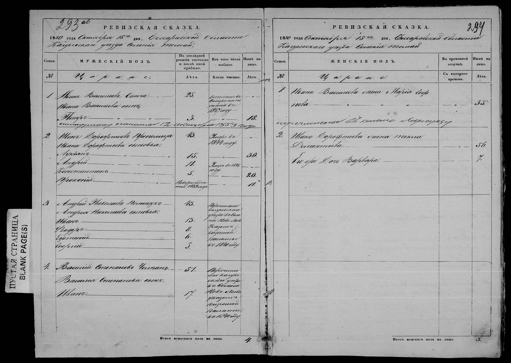

Type a village name
Loading the index…
The index could not be loaded. Try reloading the page.
What a catagrafie is
A catagrafie (Russian ревизская сказка, revizskaya skazka, revision list) is the tax census of the Russian Empire, drawn up village by village and household by household. In Bessarabia the 8th revision was taken in 1835, the 9th in 1850 and the 10th in 1858-1859; supplementary lists were added in 1848-1849 and 1854. The registers for the whole province are kept at the National Archives of the Republic of Moldova (ANRM), fond 134, opis 2, and FamilySearch has filmed them. That is what this index covers: the catagrafie of 1835, of 1850 or of 1858 for every village the inventory names.
A revision list is a tax count. The state counted its taxpayers roughly every fifteen years, household by household, and noted who had left since the previous count. Hover a marker to see it on the page.
The double page

1 2 3 4 5 6 7 8- 1Heading: Handwritten date: 15 October 1850. All ages count from this date.
- 2Social estate: 'peasants': One book per social estate. Whoever is missing here may be in the mazili or ruptași book.
- 3The household: One number, one family: men on the left, women on the right, under the same number.
- 4The men: The head, then 'his sons', then the sons, indented. Descent is in the order of the lines; there is no kinship column.
- 5Age in 1835: Age at the previous revision. For a child born since: 'newborn of 18..'.
- 6Departed: Death, conscription, transfer, deportation, with the year. For a transfer, the receiving village.
- 7Age in 1850: Empty for those who departed.
- 8The women: 'His wife', 'his daughter'. One age only, that of 1850, and no departures column: a woman who died between 1835 and 1850 does not appear.
Household no. 2, the men
- 1Household number: Written once, it covers the whole family, women included.
- 2Given name: 'Ivan': Always first.
- 3Patronymic: 'Dorofteev': The father's given name, russified in -ev or -ov: son of Doroftei.
- 4Surname: 'Prepelița': Last. Sometimes missing.
- 5'umer' 1844 (died): The year, not the age at death. The 1850 cell is struck through.
- 6'ego synovia' (his sons): What follows, indented, are his sons.
- 7'novorozhdennyi' 1839 (newborn): Born after 1835.
Households 1 and 2, the women
- 1Household number: The same as on the left-hand page: household no. 1.
- 2The husband: 'Ivana Vasilieva': The husband's given name and patronymic, in the genitive: 'of Ivan Vasiliev'. No surname.
- 3'zhena' (wife): The tie to the husband. For a daughter: 'doci'.
- 4Given name: 'Mariia': Her own.
- 5Patronymic: 'Georgieva': Her father's given name, split across two lines: daughter of Gheorghe. Often the only clue to the family she came from.
- 6'perechislena' (transferred to the village of…): Written across the page under the household, since the women's side has no departures column.
- 7'doci' (daughter): No 'newborn' note for girls; only the age.
Traps
- 1853 and 1857 appear on a page dated 1850: the register was annotated afterwards.
- Women's column blank opposite a household transferred as a whole: the departure note is on the men's side.
- The next page opens with 'carried over' and the previous page's total. It is not a household.
- The document gives no place of birth, no mother's name beyond the patronymic, and no woman who died between 1835 and 1850.
How to use this page
- You need a FamilySearch account, which is free. The images of this fond can be viewed from home.
- Type the village name. Cyrillic input works too.
- Choose the year with the buttons (1834-1836, 1848-1851, 1854-1857, 1858-1859). A greyed-out button marked “(0)” means the inventory has no file for that village in those years.
- Read the inventory line. Every file is shown as the inventory writes it: the prefix (col. colony, s. village, or. town), the name, the district when the line gives one, and the folios (ff. 1-64v).
- Click “Open on FamilySearch”. The file opens at its first image. The number of images shown is how far it runs; the villages come in the order of the list.
- Find your way by the folio number written in pencil in the corner of each page: jump ten images at a time until you reach the folios of your village.
For the 82 files whose online volume has not been identified, the button “Open reel DGS N” opens that reel’s images directly on FamilySearch, and the file starts at the image given here.
A file often runs across two or three reels.
Looking for a Jewish family? Fond 134 holds about a hundred files of Jewish revision lists, and JewishGen has indexed them: there you can search by personal name, which this index cannot do, and every record links to its image. Start there.
The folio is your compass
I am working on matching an image number to each village, but it takes time: it will happen gradually. In the meantime, it is the folio that guides you.
A folio (filă, лист, list) is a leaf of the original register, numbered by the archive; its number is written in the corner of the page and is what the inventory quotes. An image is one photograph on the microfilm. The two do not line up: a photograph usually covers two facing pages, sometimes only one, and pages are re-shot, sometimes two or three times, when the first frame came out badly.
That is why, most of the time, it is the folio number rather than the image that guides you. Open the file, read the folio number of the page you land on, compare it with the folios of your village in the list, and jump forward or back. The neighbouring lines help too: if you are at folio 120 in Gaidar and Tomai is listed at folios 1-64, go back.
Village names
Names are given as the inventory spells them, which is often not how you would: Beşghioz (Cupcui), Cazaclia (Cazaiaclia), Ataci (Otaci, Atachi). The Turkish, Bulgarian, Gagauz and Russian names of the south usually appear in a Romanian spelling of the 1990s, with the older form in brackets.
So search short (“Besg” rather than “Beshgioz”), look at the suggestions, and type in Cyrillic if that is easier. The search ignores accents and treats ş/s, ţ/t, k/c, gh/g, v/w and doubled letters as the same; when the inventory knows a name under two spellings, the second is offered as “also written”.
Full inventory: 812 archival files, 9725 lines
The whole inventory as plain text, so that it can be read, printed, quoted and found by search engines. The search box above does the same job in one click; each file number below opens its own result.
Machine-readable data: index.jsonl, lignes.csv, dossiers.csv, with a field dictionary and a guide for AI assistants. Public domain, no key needed.
- 1 · 1834 · Revision lists of peasants from the villages of Akkerman county, for the years 1834-1836.Villages: Roşu · Hanchîşla (Ganchişla, Hanul Cîşlei) · Palanca · Tudora (Tudorova) · Crocmaz (Corcmaz) · Olăneşti · Cioburciu · Talmaza · Alexandrovca, plasa Olăneşti · Vedensc · Voznesensc · Ermoclia · Ivanovca plasa Olăneşti · Copceac · Carahasani plasa Olăneşti · Caplani · Moldovca (Vădeni) · Nicolaevca, plasa Olăneşti · Popovca, plasa Olăneşti · Petropavlovca, plasa Olăneşti · Petrovca · Răileanca, plasa Olăneşti · Semionovca, plasa Olăneşti · Slobozia-Hăneşti · Uspenskoe · Feşteliţa · Frumuşica (Formuşica) · Ţaricianca, plasa Olăneşti
- 2 · 1835 · Revision lists of free peasants, colonists, merchants, mazili, ruptasi and boiernasi from the villages of Orhei county and of Iasi county for the year 1835.Villages: Tuzara · Trifeşti · Tătăreşti · Teleşeu · Tarasova · Trebujeni · Tabăra · Tîrzieni · Teleneşti · Teleneştii Vechi · Tîrşiţei
- 3 · 1835-1836 · Supplementary revision lists of colonists from the state-domain villages of Akkerman county, for the years 1835, 1836.Villages: Borisovca · Voznesensc · Jevrieni · Chebabcea · Carahasani · Olăneşti · Slobozia-Hăneşti · Tatarbunar · Uspenscoe · Ţariceanca · Cicima · Şagani
- 4 · 1835 · Revision lists of the inhabitants and peasants of the Roma (gypsy), Moldavian and Little Russian communities of the suburbs of the town of Akkerman, for the year 1835.Villages: Crivda · Popuşoi · Kamenîi Most · Şabo
- 5 · 1835 · Revision lists with the lists of state colonists, dvoreni, mazili and ruptaşi from the villages of Akkerman county for the year 1835.Villages: Baccealia · Borisovca · Vasilievca · Gălileşti · Gura-Celighider (Satul Nou) · Divizia · Draculea · Dimitrovca · Jevreni · Zolocani · Chebabcea · Caramahmet · Cariacica (Cariacichi,Caracicov) · Chitai · Neruşai · Pavlovca · Plahteevca · Pocrovca · Sergheevca · Spascoe · Tatarbunar · tîrgul Tatarbunar · Taşlîc · Furmanca · Cicima · Şagani · Iaroslavca · Iasinovca · Constantinovca · Nicolaevca · Mihailovca · Novotroiţc
- 6 · 1835 · Revision lists of clergy from the churches of the town of Akkerman and the villages of Akkerman county, and from the town of Chilia, Ismail county, for the year 1835.Villages: Akkerman · Crivda · Păpuşoi · Roşu · Divizia · Tatarbunar · Şabo · Carahasani · Olăneşti · Volontirovca · Tălmaza · Răileanca · Ermoclia · Alexandrovca Nouă · Vedensc · Neruşai · Cicima · Draculea · Caramahmet · Han-Cîşla · Palanca · Tudora · Corcmaz (Crocmaz) · Purcari · Răscăeţi · Slobozia-Hăneşti · Caplani · Moldovca (Vodeni ) · Ciobruciu (Cioburciu) · Popovca · Feşteliţa · Copceac · Formuşica (Frumuşica) · Ţariceanca · Şagani · Zolocari · Acmanghit · Mihailovca · Gura-Celighider (Satul Nou) · Gălileşti · Taşlâc · Furmanca · Chitai · Chilia
- 7 · 1835 · Revision lists of petty bourgeois and nobility (dvoreni) of the societies of Great Russians, szlachta and Little Russians of the town of Akkerman for the year 1835.Villages: Akkerman
- 8 · 1835 · Revision lists of dvoreni, mazili, ruptaşi and şleahtici from the villages of Akkerman county for the year 1835.Villages: Akkerman · Gura-Celighider (Satul Nou ) · Gălileşti · Copceac · Chebabcea · Moldovca (Vodeni ) · Neruşai · Palanca · Tălmaza · Taşlîc
- 9 · 1835 · Revision lists of the colonists from the German colonies of Akkerman county for the year 1835.Villages: Borodino · Berezina · Brieni · Gnadental · Crasna · Cleastiţi · Leipţig · Culm · Caţbah · Maloiaroslaveţi I · Maloiaroslaveţi II · Arcizul Nou · Paris · Sarata · Arcizul Vechi · Tarutino · Tepliţ · Ferşampenoise I · Ferşampenoise II · nr. 13, Friedenstal · Şabo
- 10 · 1835 · Revision lists of the inhabitants of the villages of Akkerman and Iaşi counties for the year 1835.Villages: Penico, filele …..2 · Băhrineşti · Nădejdea · Purcari · Răscăieţi
- 11 · 1835 · Revision lists of court servants from the town of Akkerman and court servants from the estate of Cădăeşti, Akkerman county, for the year 1835.Villages: Akkerman · Cădăeşti
- 12 · 1859 · Revision lists of the inhabitants and state colonists of the villages of the state domain of Akkerman county. List of the members of the Moldavian and szlachta communities of the town of Akkerman, for the year 1859.Villages: Petropavlovca · Palanca · Akkerman · Neruşai
- 13 · 1835 · Revision lists with the lists of members of the Little Russian societies, of the Great Russian ecclesiastical order, of the Moldavian and Jewish communities, of the Great Russian society of clockmakers, and of the privileged class of the city of Bender for the year 1835.Villages: Bender
- 14 · 1835 · Revision lists of members of the Velikorussian ecclesiastical estate communities, of the Malorussian, Moldavian and Jewish communities, of the Christian merchant community of the 3rd guild, of the Jewish merchant community of the 3rd guild, of the Velikorussian watchmakers' community, and of the privileged class of the town of Bender for the year 1835.Villages: Bender
- 15 · 1835-1836 · Revision lists with 3rd guild merchants of the Christian and Jewish communities of the town of Bender, with court servants, with peasants from the towns of Bender and Ismail and from the villages of Bender district, for the years 1835-1836.Villages: Bender · Ismail · Gura Galbenă · Chiţcani · Speia · Gura Bîcului · Căuşeni
- 16 · 1835-1836 · Revision lists completing the data omitted from the lists of peasants and petty bourgeois, of the Great Russian ecclesiastical order, of the Great Russian community of clockmakers, and of the members of the communities of Little Russians, Moldavians and Jews of the towns of Chişinău and Bender, for the years 1835-1836.Villages: Chişinău · Bender
- 17 · 1835 · Revision lists of court servants and peasants from the towns of Akkerman, Bender, Ismail, Leova and Chişinău, and from the villages of Akkerman, Bender, Hotin, Leova, Orhei counties and all the fortresses of the Bessarabia region, for the year 1835.Villages: Akkerman · Bender · Gura Galbenă · Chiţcani · Căuşeni · Speia · Gura Bîcului · Ismail · Tucicov · Chişinău · Chilia · Bolgrad · Leova · Hagi-Abdul · Slobozia Căliceni · Pereni · Mărcăuţi · Babin · Hotin · Bălcăuţi · Seneheu · Ataki (Ataci ) Movilău · Secureni · Edineţ (Edinţa) · Rudi · Nedibăuţi (Nedăbăuţi) · Noua Suliţă (Novoseliţa)
- 18 · 1835 · Revision lists of people of the privileged classes from the villages of Bender county for the year 1835.Villages: Todireşti · Taraclia · Tănătari · Floreşti · Fîrlădeni · Ţînţăreni · Cimişlia · Cioara Murza · Abaclia
- 19 · 1835 · Revision lists completing the data on the desservants of the cults from the churches of the villages of Bender county, and on the desservants of the cults (newly arrived and departed) from the churches of the town of Bender and of the villages of Bender county, for the year 1835.Villages: Bender · Hîrbovăţ · Bulboaca · Gura Bîcului · Fîrlădeni · Sălcuţa · Hagimus · Chircăeşti · Tănătari · Cărbuna · Coşcalia · Zaim · Luţeni (Ţînţăreni ) · Căinari · Geamăna · Puhoi · Gangura · Dubăsarii Vechi · Corjova · Baccealia · Cobusca Veche · Cobusca Nouă · Roşcani · Teliţa · Şerpeni · Speia · Puhăceni · Delacău (Bilachev) · Taraclia · Sadaclia · Cimişlia · Batîr · Abaclia (Abaclîdjaba) · Selemet · Cioara-Murza (Ceramuza) · Căuşeni · Tocuz · Cîrnăţeni · Opaci · Manzîr · Chiţcani · Copanca · Varniţa · Căuşenii Vechi · Gura Galbenă · Moleşti · Grădeşti · Sagadaic (Sahaidac)
- 20 · Lists of inhabitants wrongly registered in the process of popular census no. 8, from the town of Tucicov and its suburbs (indicating age, the locality from which they came, and the year in which this event was recorded)Villages: Tucicov · Cugurlui (Cuhurlui) · Broasca · Sofiana (Softiani)
- 21 · 1835 · Revision lists of representatives of the privileged class, with boernaşi, with mazili, with răzeşi, with ruptaşi, with inhabitants and with peasants from the villages of Bender county for the year 1835.Villages: Baccealia · Bogdanovca · Gura Galbenei · Grădeşti (Grădişte ) · Gangura · Gura Bîcului · Geamana · Delacău (Bilachev) · Dubăsarii Vechi · Ivanovca · Corjova · Căinari · Cărbuna · Cobusca Mică · Cobusca Veche · Coşcalia · Ţînţăreni (Luţeni) · Moleşti · Puhoi · Puhăceni · Roşcana · Speia · Sagaidac · Todireşti · Teliţa · Floreşti · Şerpeni
- 22 · 1835-1836 · Revision lists of representatives of the privileged class and state colonists, with representatives of the Jewish, Moldavian and Great Russian communities, from the villages of Bender county and from the market towns of Căuşeni and Cimişlia, Bender county, for the years 1835, 1836.Villages: Abaclia (Abaclîdjaba) · Opaci · Bulboaca · Batîr · Baimaclia · Varniţa · Hîrbovăţ · Hagimus · Zaim · Căuşeni · Chircăeşti · Copanca · Căuşenii Vechi · Cîrnăţeni · Chiţcani · Calfa · Mihailovca · Selemet · Săiţi · Sălcuţa · Sadaclia · Tocuz · Troiţca · Taraclia · Tanătari · Fîrlădeni · Cimişlia · Cioara Murza (Ceramuza )
- 23 · 1835 · Revision lists with the lists of colonists from the colonies of Leova county, Ismail colonial district, for the year 1835.Villages: Babele · Bolgrad · Vaisal · Duluchioi · Dermendere · Cairaclia · Cubei · Caracurt · Novotraian (Traianul Nou) · Taşbunar · Tatar-Copceac · Taraclia · Tabac · Cişmeaua Văruită · Ciişia · Erdec-Burno
- 24 · 1835-1836 · Revision lists with the lists of colonists from the colonies of Leova county, Bugeacul de Jos district, for the years 1835, 1836.Villages: Burgugi · Banova (Banovca) · Glavana · Hasan Batâr · Dermendere · Devlet Agaci · Dimitrova · Enichioi · Zadunaevca · Iserlia · Ivanova · Culevcea · Camcic · Cuporani · Cod-Chitai · Noul Cragaci (Novocaragaci) · Pocrouca-Nouă (Novopocrov) · Pandaclia · Selioglo · Satalîc-Hagi · Traianul Vechi (Starotraian) · Fîntîna Zînelor · Ciumlechioi · Şichirlichitai
- 25 · 1836 · Revision lists of members of the Nekrasovite and Malorussian societies, petty bourgeois registered under the town administration of Ismail, in the suburbs of the town of Tucicov, Ismail county, for the year 1836.Villages: Cugurlui (Cuhurlui) · Necrasovca · Broasca · Sofiana
- 26 · 1835-1836 · Revision lists of merchants of the town of Chilia of the town administration of Ismail, region of Bessarabia, for the years 1835, 1836.Villages: Chilia
- 27 · 1836 · Revision lists of petty bourgeois of the societies of Velikorussians, Malorussians, Moldavians and Jews of the town of Chilia, with colonists of the societies of Velikorussians and Malorussians of the village of Vilcov of the town administration of Ismail for the year 1836.Villages: Chilia · Vilcov (Vâlcov)
- 28 · 1836-1850 · Revision lists of petty bourgeois of the societies of Velikorussians, Malorussians, Moldavians and Jews of the town administration of Chilia, and of petty bourgeois, colonists and state peasants classed in the societies of Velikorussians, Malorussians and Jews of the town of Chilia and of the market town of Vilcov for the years 1836, 1840, 1842, 1845, 1849, 1850.Villages: Chilia · Vilcov (Vîlcov)
- 29 · 1835-1836 · Revision lists with inhabitants, court servants, foreign citizens, merchants, peasants and petty bourgeois from the cities of Bălţi, Bender and Chişinău and from the villages of Orhei, Hotin and Soroca counties for the years 1835, 1836.Villages: Bender · Sadaclia · Bălţi · Chişinău · Drăsliceni · Teleşeu · Dănjenii de Jos · Marcăuţi · Petruşeni · Slobozia Şireuţi
- 30 · 1835 · Revision lists with the lists of members of the Moldavian society of the city of Chişinău for the year 1835.Villages: Chişinău
- 31 · 1835 · Revision lists of petty bourgeois of the Jewish society of the town of Chisinau, for the year 1835.Villages: Chişinău
- 32 · 1835 · Revision lists of crown Roma (gypsies) of the classes of lăieşi, lingurari and ursari, nomadic and moving from place to place on the territory of Bessarabia, for the year 1835.Villages: Basarabia (lăieşi ) · Orhei (lingurari, ursari )
- 33 · 1835 · Revision lists of merchants of the 3rd guild of the town of Chişinău and of former merchants of the 3rd guild of the town of Chişinău for the year 1835.Villages: Chişinău
- 34 · 1835 · Revision lists of merchants of the 1st, 2nd and 3rd guild of the town of Chişinău, for the year 1835.Villages: Chişinău
- 35 · 1835 · Revision lists of the inhabitants of the 1st and 2nd parts of the town of Chişinău, from the Moldavian society, for the year 1835.Villages: Chişinău
- 36 · 1835 · Revision lists of the inhabitants of the 3rd part and the new part of the town of Chişinău, from the Moldavian society, for the year 1835.Villages: Chişinău
- 37 · 1835 · Revision lists of members of the society of foreign citizens of the town of Chisinau, court servants, free colonists, peasants and Roma (gypsy) serfs from the towns of Balti, Chisinau and Hotin and from the villages of Iasi and Hotin counties, for the year 1835.Villages: Bălţi · Chişinău · Hotin · Otaci (Ataci, Atachi) Movilău · Nagoreni · Noua Suliţă (Novoseliţa) · Stălineşti · Hădărăuţi · Cepeleuţi · Şendreni · Drăgăneşti · Micleuşeni · Sculeni · Petreşti · Prutechici Alexăndreni · Ciulucani
- 38 · 1835 · Revision lists of merchants of the 1st, 2nd and 3rd guild of the town of Chişinău for the year 1835.Villages: Chişinău
- 39 · 1835 · Revision lists with 2nd and 3rd guild merchants from the town of Leova, for the year 1835.Villages: Leova
- 40 · 1835 · Revision lists of boiernaşi and mazili from the village of Hănăşeni, Leova county, for the year 1835.Villages: Hănăşenii Noi
- 41 · 1835 · Revision lists of boiernaşi and of mazili from the village of Hănăşenii Noi, Leova county, for the year 1835.Villages: Leova · Borogani · Cazangic · Caracui · Cuvurlui · Lărguţa · Sărata · Sărăţica · Tigheci · Cenac · Baurci-Moldoveni · Borceag (Burceac) · Vadul lui Isac · Vetreşoi · Hănăşenii Vechi · Hănăşenii Noi · Goteşti · Enichioi · Javgur · Cania · Capaclia · Chircani · Cupcui (Copcui) · Cociulia (Cocealia ) · Coştangalia · Chioselia Mică (Chiselî Mici ) · Larga · Leca · Măcreşti · Manta · Mingir · Musaitu · Orac · Pelinei Moldoveni · Pogăneşti · Tartaul · Tomai · Toceni · Frumoasa · Hagichioi · Ceadîr · Ciucur-Mingir · Ialpugeni
- 42 · 1835 · Revision lists of the inhabitants of the communities of Great Russians and Moldavians, with representatives of the free sailors' section, with ruptasi, with members of the Bulgarian, Greek, Armenian and Jewish societies of the town of Akkerman, for the year 1835.Villages: Akkerman
- 43 · 1835 · Revision lists of trans-Danubian emigrant colonists from the colonist district of Bugeacul de Sus, for the year 1835Villages: Avdarma · Beşchioz · Baurci · Beşalma · Başcalia · Valea Perjei · Dezghingea · Joltai · Cazaclia (Cazaiaclia) · Congaz · Chiriet Lunga · Chirsova · Comrat · Tomai · Ferapontievca · Ceadîr Lunga
- 44 · 1835 · Revision lists of trans-Danubian emigrant colonists from the colonist district of Cahul-Prut, Leova county, for the year 1835Villages: Brînza · Barta · Bulboaca · Vulcăneşti (Volcăneşti ) · Giurgiuleşti · Etulia · Împuţita · Câşliţa (Chişliţa) · Colibaşi · Caragaci · Curci · Slobozia · Satul Mare (Satunova) · Frecăţei · Hagi Abdul · Cişmichioi
- 45 · 1835-1850 · Revision lists of trans-Danubian emigrant colonists and clergy from the colonist district of Bugeacul de Sus, Leova county, for the year 1835Villages: Comrat · Chirsova · Chiriet Lunga · Congaz · Cazaclia (Cazaiaclia) · Chiriutnea · Tvardiţa · Tomai · Ferapontievca · Cioc-Maidan · Ciadîr-Lunga
- 46 · 1835 · Revision lists of colonists and trans-Danubian emigrants, with clergy, from the colonist district of Bugeacul de Sus, Leova county, for the year 1835Villages: Banova · Burgugi · Hasan Batîr · Glavan · Goliţa · Devlet Agaci · Diulmeni · Dimitrieva · Delgiler · Enichioi · Zadunaevca · Ivanova
- 47 · 1835 · Revision lists of trans-Danubian emigrants, ruptaşi and cult servants (clergy) from the Bugeacul de Jos colonial district, Leova county, for the year 1835.Villages: Ivanova · Iserlia · Cod Chitai · Pocrovca Nouă · Cuporani · Camcic · Caragaciul Nou · Culevca · Pandaclia · Satalîc Hagi · Selioglo · Traianul Nou · Tropoclo · Fîntîna Zînelor · Ciumlechioi · Şichirlichitai
- 48 · 1835 · Revision lists of free peasant-ploughmen, mazili, ruptasi, foreign citizens and colonists from the villages of Leova county, for the year 1835.Villages: Larga · Leca · Lărguţa · Manta · Mingir · Mocreşti (Măcreşti) · Mocreştii Vechi (Măcreştii Vechi) · Musaitu · Orac · Pelinei Moldoveni · Pelinei Bulgari · Pleşeni · Porumbeşti
- 49 · 1835 · Revision lists with foreign subjects, with szlachta, with mazyls, with ruptashi, with petty boyars, with răzeşi, with foreign citizens, with colonists and with nobles from the town of Leova and from the villages of Leova district, for the year 1835.Villages: Cociulia (Cocealia) · Cania · Leova · Larga · Lărguţa · Leca · Mocreştii Vechi (Măcreştii Vechi ) · Mocreşti (Măcreşti) · Manta · Orac · Porumbeşti · Pelinei Moldoveni · Sărata Răzeşti · Sărăţica · Tigheci · Tatar Baurci · Frumoasa (Formoza) · Ceadîr-Lunga · Ciobalaccia · Ceadîr · Cenac · Şamalia
- 50 · 1835-1836 · Supplementary revision lists of trans-Danubian emigrant colonists from the colonies of the colonist districts of Ismail, Cahul-Prut, Upper Bugeac and Lower Bugeac, Leova county, for the years 1835, 1836.Villages: Bolgrad · Tatar-Copceac · Tabac · Babele · Vulcăneşti (Volcaneşti) · Anadol (Anadolca) · Etulia · Slobozia · Dezghingea · Comrat · Congaz · Chirsova · Troianul Vechi · Enichioi
- 51 · 1835 · Revision lists of free peasant-ploughmen, ruptasi and mazili from the villages of the county [name missing]Villages: Javgur · Ciucur-Mingir · Cenac
- 52 · 1835 · Revision lists of trans-Danubian emigrant colonists and clergy from the colonist district of Ismail, Leova county, for the year 1835Villages: Cairaclia · Troianul Nou · Tabac · Taraclia · Tatar-Copceac · Taşbunar · Ciişia · Cişmeaua-Văruită · Erdec-Burno
- 53 · 1835 · Revision lists of trans-Danubian emigrant colonists and clergy from the colonies of the colonist district of Ismail, Leova county, for the year 1835Villages: Bolgrad · Babele · Vaisal · Dermendere · Duluchioi · Caracurt · Cubei
- 54 · 1835 · Revision lists of trans-Danubian emigrant colonists and clergy from the colonies of the colonist district of Cahul-Prut, Leova county, for the year 1835Villages: Anadol (Anadolca) · Bulboaca · Barta · Brînza · Văleni · Vulcăneşti (Volcaneşti) · Giurgiuleşti · Etulia · Împuţita · Curchi
- 55 · 1835 · Revision lists of free peasant-farmers, mazili, ruptasi, boiernasi (petty boyars) and foreign citizens from the villages of Leova county, for the year 1835.Villages: Andruşu · Albota · Borogani · Burlăceni · Baurci-Moldoveni · Huluboaia (Goluboe) · Paicu · Badicul · Borceag (Borceac) · Baimaclia Mare · Baimaclia Mică · Broscoşeşti · Bobolici · Vadul lui Isac · Vetruşoi · Vîltoţi · Solibozia Chiştelniţa (Slobozia Onilov) · Tochile · Hănăsenii Noi (Ganasenii Noi) · Hănăsenii Vechi (Ganasenii Vechi) · Greceni · Goteşti · Hagichioi · Enichioi · Zîrneşti · Cania · Chîrpeşti · Chircani · Chioselia Mare · Cazaclia · Coştangalia Mare · Chioselia Mică · Cîietu · Cugurlui (Cuhurlui) · Constantinovca · Cupcui · Cazangic · Caracui · Capaclia · Cociulia (Cacialia)
- 56 · 1835 · Revision lists of colonists and church clergy from the colonies of the colonist district of Cahul-Prut, Leova county, for the year 1835Villages: Caragaci · Cartal · Colibaşi · Chîşliţa (Chisliţa) · Satul Nou (Satunova) · Slobozia · Frecăţei · Haji-Abdul · Chişmechioi
- 57 · 1835 · Revision lists with representatives of church servants and their families from the Bessarabia region, Leova district, for the year 1835.Villages: Bolgrad · Comrat · Ciişia · Cod-Chitai · Ceadîr-Lunga · Vulcăneşti (Volcaneşti) · Cazaclia · Slobozia · Taşbunar · Duluchioi · Erdec-Burno · Şichirlichitai · Enichioi · Cubei · Împuţita · Caracurt · Cişmeaua-Văruită · Babele · Tabac · Curci · Bulboaca · Barta · Satul Nou (Satunova) · Cartal · Caragaci · Etulia · Hagi-Abdul · Colibaşi · Brînza · Văleni · Anadol (Anadolca) · Frecăţei · Chişmichioi · Dezghingea · Beşalma · Tomai · Avdarma · Gaidar · Valea-Perjei · Baurci · Congaz · Taraclia · Tatar-Copceac · Ivanovca · Dimitrievca · Banovca (Banova) · Cioc-Maidan · Giurgiuleşti
- 58 · 1835 · Revision lists of court servants and church servants from the town of Chişinău and the villages of Orhei county, for the year 1835.Villages: Hînceşti · Fundul Galbenei · Chişinău · Cinişeuţi · Suslenii de jos · Holercani · Berezlogi · Molovata · Marcăuţi · Trebujeni · Butuceni · Oxentea · Chiperceni · Maşcăuţi · Ciocîlteni · Tîrzieni · Dîşcova · Brăviceni · Morozeni · Sărăteni · Stanca (Bezina) · Ţînţăreni · Zăhăicani · Indărăpnici · Camenca · Clişova · Jora de Mijloc · Jora de Jos · Jora de Sus · Vîşcăuţi · Lopatna · Bulăieşti · Bucuişca · Lalova · Horodişte · Izvoare · Stodolna · Saharna · Echimăuţi · Jevreni · Răculeşti · Slobozia Duşca · Ustia
- 59 · 1835 · Revision lists of church servants from the town of Chişinău and the villages of Orhei county, for the year 1835.Villages: Chişinău · Nisporenii de Sus · Nisporenii de Jos · Ciuciuleni · Grozeşti · Bălăureşti · Zberoaia · Şişcani · Hlopeşti (Nemţeni) · Boghiceni · Bujor · Marinici · Cotul Morii · Vărzăreşti · Valea Trăisteni · Costuleni · Brătuleni · Mileşti · Găureni · Bărboieni · Măcăreşti · Bălăneşti · Ciuteşti · Selişte · Isăicani · Boldureşti · Pereni · Dahnovici
- 60 · 1835 · Revision lists of boiernaşi, of mazili and of ruptaşi from the villages of Orhei county, for the year 1835.Villages: Cornova · Crăsnăşeni · Căpriana · Coropceni (Suhuluceni) · Cruglic · Chiperceni · Camenca · Cruzeşti · Chiştelniţa · Cotul Morii · Cucuruzeni · Cricova · Leuşeni · Lozova · Lipceni · Lalova · Măcăreşti · Munceşti · Morozeni · Mileşti · Meleşeni · Marinici · Micăuţi · Mateuţi · Micleşti · Molovata · Malcoci · Mihuleni · Malotohatin · Mănoileşti · Micleuşeni · Maşcăuţi · Mîrzeşti · Mereni
- 61 · 1835 · Revision lists of serf Roma (gypsies), of foreign citizens and of szlachta from the villages of Orhei and Hotin counties for the year 1835.Villages: Horodişte · Slobozia Duşca (Căliceni) · Slobozia Duşca (Căliceni) Dobruşa · Dobruşa · Echimăuţi · Steţcani · Mărcăuţi · Păscăuţi · Hădărăuţi · Mereni
- 62 · 1835 · Revision lists of church servants from the villages of Orhei county, for the year 1835.Villages: Breanova · Vorniceni · Goleşti · Gojineşti · Sipoteni · Stolniceni · Tătăreşti
- 63 · 1835 · Revision lists of church servants from the villages of Orhei county, for the year 1835.Villages: Boşcana · Brăneşti · Hîrtopul Mic · Jeloboc · Izbişte · Cruglic · Rîşcova · Furceni
- 64 · 1835 · Revision lists of church servants from the villages of Orhei county, for the year 1835.Villages: Alcedar · Bieşti · Voroteţ · Ghiduleni · Gordineşti · Ignăţei · Chipeşca · Chiştelniţa · Curleni · Meşeni · Mihuleni · Minceni · Olişcani · Pecişte · Pereni · Pohrebeni · Păpăuţi · Răspopeni · Sămăşcani · Sîrcova · Sirota · Scorţeni · Slobozia Hodorogea · Trifeşti · Fuzăuca · Ţareuca · Cihoreni · Ţahnăuţi · Şercani
- 65 · 1835 · Revision list of mazili, ruptaşi and peasants of the village of Oniţcani, Orhei county, for the year 1835.Villages: Oniţcani
- 66 · 1835 · Revision list of the peasants of the village of Holercani, Orhei county, for the year 1835.Villages: Holercani
- 67 · 1858-1859 · Revision list of representatives of the Moldavian and odnodvortsy societies and of third-guild merchants of the town of Akkerman for the years 1858, 1859.Villages: Akkerman
- 68 · 1835 · Revision lists of răzeşi, boiernaşi, mazili, dvoreni (nobility), ruptaşi and şleahtici from the villages of Orhei county, for the year 1835.Villages: Oxentea · Alcedar · Bogzeşti · Bălceana · Boldureşti · Bravicea · Băcioi · Buţeni · Buciuşca · Bardar · Budăi · Bieşti · Brăviceni · Berezlogi · Brăila · Bălăureşti · Breanova · Brăneşti · Butuceni · Boghiceni · Bărboieni · Budeşti · Bălăneşti · Bălăşeşti · Vîprova · Vorniceni · Visterniceni · Vadul lui Vodă · Văsieni · Vărzăreşti · Vînători · Vatici · Vîşcăuţi · Voroteţ · Volcineţ · Slobozia Hodorogea · Glingeni · Hînceşti · Hogineşti · Ghetlova · Drăsliceni · Zubreşti · Ghermăneşti · Hîrtopul Mare · Ghidighici (Hidighici) · Horodişte · Găureni · Gordineşti · Goreşti · Găleşti · Hiirova · Gîrla · Dereneu · Durleşti · Dolna · Dănceni · Dulejeni · Dişcova · Drăguşenii Vechi · Echimăuţi · Jevreni
- 69 · 1835 · Revision lists of free peasant-farmers, mazili and ruptasi from the villages of Orhei county, for the year 1835.Villages: Cinişeuţi · Cişmea · Cihoreni · Ciocîlteni · Şoldăneşti · Şercani · Şipca · Ciuteşti · Ciuciuleni · Şendreni · Şişcani · Iurceni · Ialoveni
- 70 · 1835 · Revision lists of persons converted to the Christian religion from the villages of Orhei county for the year 1835.Villages: Vărzăreşti · Indărăpnici · Isacova · Chiştelniţa · Leuşeni · Maşcăuţi · Hirişeni
- 71 · 1835 · Revision lists of mazili and ruptasi from the villages of Orhei county, for the year 1835.Villages: Răspopeni · Răculeşti · Răzeni · Rezina · Stolniceni · Sadova · Slobozia Duşca · Srăşeni · Sipoteni · Selişte · Suruceni · Sireţi · Săseni · Slobozia-Hodorogea · Sîrcova · Sămăşcanii de Sus · Sirota · Sărăteni · Steţcani · Secăreni · Susleni · Sociteni · Scorţeni · Spărieţi · Teleşeu · Tătăreşti · Trifeşti · Trebujeni · Tuzara · Truşeni · Tengeleşti (Tălăieşti) · Ulmu · Ustia · Fundul Galbenei · Frăsineşti · Furceni · Hogineşti · Holercani · Hîrtopul Mic · Hirova · Hulboaca · Hirişeni · Ţareuca · Ţînţăreni · Ţîpala · Ţibirica · Ciorna · Ciopleni · Cioreşti · Ciocîlteni
- 72 · 1835 · Revision lists of serf Roma (gypsies) and of court servants from the town of Chişinău and from the villages of Orhei county for the year 1835.Villages: Chişinău · Bălăşeşti · Băcşeni · Bilieşti · Boghiceni · Boldureşti · Brătuleni · Bujor · Budeşti · Buţeni · Valea Traisteni · Visterniceni · Voroteţ · Vîşcăuţi · Hansca · Ghetlova · Hîrtopul Mare · Găleşti · Bulboaca · Horodişte · Grebleşti · Hruşova · Dîşcova · Drambaşani · Dulegeni · Zăhăicani · Zamciogi · Zberoaia · Novaci · Echimăuţi · Işnovăţ · Pietrosu · Chetrosu · Căpriana · Cucuruzeni · Coşerniţa · Cuizăuca · Morozeni · Curchi lîngă satul Morozeni · Curluceni · Crăsnăşeni · Logăneşti · Lăpuşniţa · Marcăuţi · Maşcăuţi · Micăuţi · Mileşti · Meşeni · Munceşti · Negreşti · Nileşti (Mileşti) · Păuleşti · Pojăreni · Puţintei · Rădeni · Roşcani · Selişte · Sîngera · Săseni · Sipoteni · Slobozia Dobruşa · Slobozia Călimăneşti · Slobozia Căliceni · Stînca (Bezina) · Străşeni · Suruceni · Suslenii de Jos şi de Sus · Tătăreşti · Temeleuţi · Tuzara · Frăsineşti · Fundul Galbenii · Furceni · Ghidighici (Hidighici) · Holercani · Ţîgăneşti · Cinişeuţi · Şişcani · Şoldăneşti
- 73 · 1835 · Revision lists of free farmer-ploughmen, of mazili and of ruptaşi from the villages of Orhei county, for the year 1835.Villages: Buda · Băcioi · Bălceana · Bozieni · Budăi · Bardar · Boghiceni · Buţeni · Bilieşti · Bujor · Bălăureşti · Bărboieni · Budeşti · Bubuieşti (Bubuieci) · Bălăbăneşti · Băcşeni · Brăila · Bălăneşti · Bolţun · Brătuleni · Boldureşti · Vorniceni · Visterniceni · Vălcineţ · Vinini · Vadul lui Vodă · Văsieni · Vînători · Vărzăreşti · Valea Trăisteni · Hînceşti · Horodişte · Horeşti · Găureni · Gîrla · Grozeşti · Bulboaca · Goian · Slobozia Horodca · Horodca
- 74 · 1835 · Revision lists of persons converted to the Christian religion from the villages of Orhei county for the year 1835.Villages: Visterniceni · Lozova · Micleuşeni · Sireţ · Ciuciuleni · Cioreşti
- 75 · 1835 · Revision lists of free farmers, of mazili and of ruptaşi from the villages of Orhei county, for the year 1835.Villages: Buda · Băcioi · Bălceana · Bozieni · Budăi · Bardar · Boghiceni · Buţeni · Bilieşti · Bujor · Bălăureşti · Bărboieni · Budeşti · Bubuieşti (Bubuieci) · Bălăbăneşti · Băcşeni · Brăila · Bălăneşti · Bolţun · Brătuleni · Boldureşti
- 76 · 1835 · Revision lists of church servants from the villages of Orhei county, for the year 1835.Villages: Mana · Şapova · Bogzeşti · Crăsnăşeni · Ghermăneşti · Coropceni · Leuşeni · Văsieni · Budăi · Suhuluceni · Vîprova · Ghetlova · Hulboaca · Puţintei · Săseni · Meleşeni · Bravicea · Slobozia Hojineşti · Ţibirica · Hirişeni · Hirova · Dereneu · Rădeni · Onişcani · Năpădeni · Cornova · Nişcani · Călăraşi · Slobozia Tuzara · Tuzara · Păuleşti · Temeleuţi · Dolna · Micleuşeni · Lozova · Sadova · Buda · Cioreşti · Hordişte · Pîrjolteni · Vălcineţ · Negreşti · Vărzăreşti · Sireţ · Roşcani · Visterniceni · Hidighişi (Ghidighici) · Străşeni · Scoreni · Malcoci · Durleşti · Petricani · Căpriana · Truşeni · Cotul Morii · Răciula · Tabăra · Tîrgul Orhei · Orhei · Slobozia Doamnei · Selişte · Peresecina · Zamciogi
- 77 · 1835 · Revision lists of church servants from the town of Chişinău and the villages of Orhei county, for the year 1835.Villages: Cimişeni · Vadul lui Vodă · Malotohatin · Mereni · Bubuieci · Pocşeşti · Zubreşti · Voinova · Ţîgăneşti · Micăuţi · Oneşti · Cobîlea · Bilieşti · Grebleşti · Recea · Rădeni · Buiucani · Chişinău · Mileşti · Ialoveni · Teleşeu · Sociteni · Mimoreni (Nimoreni) · Ţîpala · Negreşti · Sîngera · Dănceni · Mănoileşti · Răzeni · Băcioi · Suruceni · Budăi · Costeşti · Cigîrleni · Ulmu · Hansca · Gîrla · Pojăreni · Văsieni · Ruseştii Vechi · Ruseştii Noi · Bardar · Zîmbreni · Horeşti · Orhei · Hînceşti
- 78 · 1835 · Revision lists of peasants, mazili (petty nobility exempt from taxes) and ruptaşi from the villages of Orhei county, for the year 1835.Villages: Temeleuţi · Truşeni · Topor · Tengeleşti (Tălăieşti) · Ulmu · Fîrlădeni · Frumuşica (Frumoasa) · Frăsineşti · Fundul Galbenei · Hansca · Ţîpala · Cioreşti · Cigîrleni · Ciuciuleni · Ciopleni · Ciuteşti · Şişcani · Şendreni · Iurceni · Ialoveni
- 79 · 1835 · Revision lists of free peasant farmers and mazili (petty nobility exempt from taxes) from the villages of Orhei county, for the year 1835.Villages: Ciuciuleni · Ciopleni · Ciuteşti · Şişcani
- 80 · 1835 · Revision lists of church servants from the villages of Orhei county, for the year 1835.Villages: Steţcani · Paşcani · Logăneşti · Cricova · Işnovăţ · Micleşti
- 81 · 1835 · Revision lists of peasants, mazili (petty nobility exempt from taxes), ruptaşi and inhabitants of the Jewish community from the villages of Orhei county, and of free peasants from the village of Ineşti, Iaşi county, for the year 1835.Villages: Ignăţei · Işnovăţ · Echimăuţi · Isacova · Ivancea · Izbişte · Izvoare · Îndărăpnici · Chipeşca · Criuleni · Cogîlniceni · Cuizăuca · Curleni · Cucuruzeni · Călăraşi · Ineşti
- 82 · 1835-1836 · Revision lists of free farmers, of mazili, of ruptaşi, of petty bourgeois, of Jews and of Armenians from the villages of Orhei county (from January 1836 some villages passed from Orhei county to Chişinău county), for the years 1835-1836.Villages: Buda · Sobozia Bălcena · Bardar · Buţeni · Bujor · Budeşti · Bolţun · Brătuleni · Bărboieni · Valea Trăisteni · Vorniceni · Visterniceni · Vălcineţ · Vînători · Văsieni · Hînceşti · Găuzeni · Horeşti · Cioreşti · Horodişte · Dolna · Zîmbreni · Cartişa · Cojuşna · Chicera · Poşta Chişinăului (Poşta Veche) · Cărpineni · Călimăneşti · Căpriana · Costeşti · Logăneşti · Lăpuşna · Leuşeni · Munceşti · Malcoci · Mileşti · Nisporeni · Nimoreni · Pulbereni · Piatra · Ruseşti · Ruseştii Noi · Răzeni · Roşcani · Sireţi · Selişte · Scoreni · Sadova · Fundul Galbenei · Hansca · Ţîpala · Cimişeni · Ciuciuleni · Ialoveni
- 83 · 1835 · Revision lists of peasants, mazili (petty nobility exempt from taxes) and ruptaşi from the villages of Orhei county, for the year 1835.Villages: Alcedar · Oxentea · Buşăuca · Bravicea · Boşerniţa · Bălăşeşti · Butuceni · Brăneşti · Bălceana · Boşcana · Bulăieşti · Berezlogi · Bieşti · Buciuşca · Burlarga (Bularda) · Breanova · Budăi · Băneşti · Brăviceni · Bogzeşti
- 84 · 1835 · Revision lists of free farmers and of mazili from the villages of Orhei county, for the year 1835.Villages: Lozova · Logăneşti · Lăpuşna · Leuşeni · Munceşti · Malcoci · Micleuşeni · Mileşti · Modval (Găureni) · Mănoileşti · Mereşeni · Micăuţi · Măcăreşti · Marinici · Mereni · Malotohatin · Mireşti · Negreşti · Nimoreni · Negrea · Novaci · Nemţeni · Nisporeni
- 85 · 1835 · Revision lists of peasants, mazili (petty nobility exempt from taxes) and ruptaşi from the villages of Orhei county, for the year 1835.Villages: Răzeni · Ruseştii Vechi · Ruseşti · Roşcani · Recea · Rădeni · Străşeni · Scoreni · Sadova · Sîngera · Suruceni · Sociteni · Sireţi · Sipoteni · Stolniceni · Secăreni · Spărieţi · Selişte (Tuzara) · Soltăneşti · Temeleuţi · Truşeni · Topor · Tenjeleşti (Tălăieşti) · Ulmu · Fîrlădeni · Frmuşica (Frumoasa) · Frăsineşti · Fundul Galbenei · Hansca · Ţîpala · Cioreşti · Cigîrleni · Ciuciuleni
- 86 · 1835 · Revision lists of mazili, ruptasi, boiernasi, postelniceni and szlachta from the villages of Orhei county and from the market town of Orhei, Orhei county, for the year 1835.Villages: Nişcani · Nimoreni · Nisporeni · Orhei · Onişcani · Olişcani · Oniţcani · Ohrincea · Oneşti · Păhărniceni · Peresecina
- 87 · 1835 · Revision lists of representatives of the Armenian communities, of representatives of the privileged class, of peasants and of inhabitants of the Great Russian society from the market town of Orhei, Orhei county, for the year 1835.Villages: Orhei
- 88 · 1835 · Revision lists of mazili, ruptasi and peasants from the villages of Orhei and Iaşi counties, for the year 1835.Villages: Iurceni · Ialoveni · Bogzeşti · Vărzăreşti · Voinova · Vîşcăuţi · Voroteţ · Vîprova · Vatici · Valea Popii · Vălcineţ · Văsieni · Brînzeni · Verejeni · Vadul Leca
- 89 · 1835-1836 · Revision lists of peasants, mazili (petty nobility exempt from taxes) and ruptaşi from the villages of Orhei, Iaşi and Chişinău counties, for the years 1835-1836.Villages: incluse în dosarul Nr.89 · Băneşti · Buşăuca · Boşerniţa · Bălăşeşti · Buciuşca · Bularga (Bularda) · Bravicea · Brăviceni · Voinova · Vîşcăuţi · Vîprova · Vărzăreşti · Hîrtopul Mare · Hîrtop · Ghiduleni · Hogineşti · Horodişte · Hulboaca · Gordineşti · Ghetlova · Ghermăneşti · Hîrjauca · Slobozia Duşca · Dereneu · Zubreşti · Zăhăicani · Ignăţei · Ineşti · Echimăuţi · Isacova · Izvoare · Criuleni · Chipeşca · Cuizăuca · Curleni · Cucuruzeni · Călăraşi · Camencea · Chiştelniţa · Coropceni · Cornova · Cobîlca (Cobîlea) · Lipceni · Leuşeni · Mîndra · Molovata · Meleşeni · Mălăieşti · Morozeni · Maşcăuţi · Minceni · Micleşti · Oneşti · Ordăşei · Olişcani · Onişcani · Oniţcani · Ohrincea · Pecişte · Pripiceni · Poiana · Puţintei · Păhărniceni · Peresecina · Pereni · Pivniceni · Răspopeni · Rădeni · Solonceni · Stodolna (Cobîleanca) · Sărăteni · Selişte · Stanca (Bezina) · Tuzara · Trifeşti · Tîrzieni · Hirişeni · Hirova · Ţînţăreni · Cinişeuţi · Cihoreni · Ciocîlteni · Şipca · Şoldăneşti · Vadul Leca · Căzăneşti · Teleneşti · Tîrşiţei · Temeleuţi
- 90 · 1835 · Revision lists of free peasants, ruptasi and mazili from the villages of Orhei and Iasi counties for the year 1835.Villages: Lalova · Lipceni · Leuşeni · Lopatna · Minceni · Mîndra · Mărtineşti · Micleşti · Mateuţi · Maşcăuţi · Mihuleni · Mitoc · Mana · Molovata · Mîrzeşti · Morozeni · Meleşeni · Marcăuţi · Meşeni · Mălăieşti · Nişcani · Oneşti · Olişcani · Ohrincea · Oniţcani · Onişcani · Mihălaşa · Negureni
- 91 · 1835 · Revision lists of foreign citizens, of free peasants, of mazili and of ruptaşi from the village of Găuzeni, Iaşi county, and from the villages of Orhei county, for the year 1835.Villages: Găuzeni · Horodişte · Ghiduleni · Slobozia Hodorogea · Hulboaca · Găleşti · Grebleşti · Hîjdieni · Glingeni · Gordineşti · Slobozia Hogineşti · Holercani · Hogineşti · Ghetlova · Hruşova · Hîrbovăţ · Ghermăneşti · Hîrjauca · Slobozia Dobruşa · Slobozia Duşca · Slobozia Duşca şi Căliceni · Dîşcova · Dereneu · Slobozia Doamnei · Jevreni · Jeloboc · Jora de Jos · Jora de Mijloc · Jora de Sus · Zahoreni · Zubreşti · Zăhăicani · Hotin
- 93 · 1835 · Revision lists of boiernaşi and of mazili from the village of Ruseni and the market town of Lipcani, Hotin county, for the year 1835.Villages: Lipcani · Ruseni
- 94 · 1835 · Revision lists of mazili, ruptasi, boiernasi and free peasants from the villages of Hotin county, for the year 1835.Villages: Lipcani · Lencăuţi · Lomacinţî · Larova (Tătărăuca Nouă şi Slobozia) · Lipnic · Măcăreuca · Malinţi · Marşeniţa · Mereşeuca · Mămăliga · Noua Suliţă · Neporotovo · Nelipăuţi · Nesvoia (Nesfoia) · Plopi · Porciuleanca · Păscăuţi · Petruşeni · Percăuţi · Pociumbeni · Prihorodoc · Pererîta · Rudii de Sus (din Deal) · Visoca · Verejeni
- 95 · 1835 · Revision lists of serf Roma (gypsies) from the town of Hotin and from the villages of Hotin county for the year 1835.Villages: Otaci (Ataci, Atachi, Movilău ) · Balinţi · Bilăuţi · Bălcăuţi · Braicău · Burlăneşti · Bleşinăuţi (Blescenăuţi) · Brătuşeni · Vălcineţ · Văsileuţi · Vancicăuţi · Văratic · Văscăuţi · Beleavinţi (Hilovăţ) · Hincăuţi · Gordineşti · Horodişte · Hinăuţi (Hincăuţi) · Gruşoviţa · Dăncăuţi · Drepcăuţi · Edineţ · Corpaci · Mîndîcăuţi · Mărcăuţi · Noua Suliţă · Negrinţi · Paladea · Pererîta · Balamutovca (Pol-Onut) · Perebicăuţi · Păşcăuţi · Ruseni · Rudi de Jos · Rjavînţi · Romîncăuţi · Rediul Mare · Rosoşeni · Tabani · Tîrnova · Feteşti · Halahoreni · Hotin · Cernoleuca · Cepănoasa · Cepeleuţi · Iarova
- 96 · 1835 · Revision lists of free peasants, mazili, ruptasi, boiernasi, foreign citizens and representatives of the Jewish community from the villages of Hotin and Iasi counties for the year 1835.Villages: Otaci (Ataci,Atachi) Movilău · Arioneşti · Bîrnova de Jos · Boroseni · Balinţi · Briceni · Braicău · Bodeşti · Bobuleşti · Băhrineşti · Băxani · Bădiceni · Bezeni · Borosenii Noi · Borodniceni (Cenuşa) · Bujereuca · Bălăşeşti · Bulboci
- 97 · 1834 · Revision lists of free peasants from the villages of Hotin county and of state peasants from Chernigov guberniya, Surazh county, for the year 1834.Villages: Darabani · Otaci (Ataci, Atachi) · Arestovca (Rădăuţi) · Buzdugeni · Buzoviţa · Briceni · Berestea (Berestie) · Bădragi · Bocicăuţi · Bording (Talmaci) · Bălcăuţi · Vancicăuţi · Vălcineţ · Griţeni (Feteşti) · Gvăzdăuţi · Grinăuţi · Hîjdău · Hlinaia de Jos · Gruşoviţa · Dăncăuţi · Dinăuţi · Drepcăuţi · Doljoc · Edineţ · Crestineşti · Clişcăuţi · Chelmineţ · Capleuca · Corjeuţi · Coşuleni · Culişăuca · Comarova · Coteala · Cîşla Salii · Cîşla Negima · Cîşla Zamjii · Cotiujeni · Lipcani · Larga · Lomacinţî · Mălineşti · Mărcăuţi · Mihalcovo · Noua Suliţă · Nagoreni · Prihorodoc · Perebicăuţi · Păşcăuţi · Răspopinţi · Rucşin · Ritevo · Rosoşani · Rotunda · Ritevo şi Otaci (Ataci, Atachi) · Răchitna · Secureni · Sîngera · Tolbureni · Tărăsăuţi · Tabani · Forstna (Forostina) · Cerlina Mare · Cepeleuţi · Şebutinţi · Şilouţi · Şirăuţii de Jos
- 98 · 1835 · Revision lists of free peasants, mazili, ruptasi and boiernasi from the villages of Hotin county for the year 1835.Villages: Gvăzdăuţi · Vetrianca · Vasiliuţi · Vorniceni · Vălcineţ · Voloşcova · Văncicăuţi · Varticăuţi · Viişoara · Hilovăţ (Beleavinţi) · Gordineşti · Grinăuţii de Sus · Grinăuţii de Jos · Hincăuţi · Hlinaia · Hlina · Hlinaia de Sus · Văscăuţi · Voronoviţa · Gordeuţi (Gordinţi) · Grozinţi (Grozniţa)
- 99 · 1835-1836 · Revision lists of free peasants, ruptasi, petty bourgeois and Jews from the villages of Iasi and Hotin counties for the years 1835,1836.Villages: Bahmut · Bogheni · Vrăneşti · Vulpeşti · Hîrceşti · Heciul Nou · Glingeni · Glodeni · Gherman · Duşmani · Dumbrăviţa · Drujineni · Danu · Iezăreni · Zahăicani · Zăzuleni · Izvoare · Chirileni · Cîrpiţi · Chişcăreni · Coiceni · Cozeşti · Corneşti · Coşcodeni · Cucuieţi şi cătunul Sturzeni · Cubani · Condrăteşti · Corpaci · Călineşti · Limbeni · Micleuşeni · Mănoileşti · Mirceşti · Mănzăteşti · Măgura · Năvîrneţ · Năpădeni · Obreja · Pîrliţa (Pîrliţi) · Putineşti · Recea · Rădoaia · Rădeni · Slobozia Bălţilor · Scumpia · Sculeni · Stîngineni · Sineşti · Sărata · Sîngerei · Tomeşti · Tomeştii Vechi · Todireşti · Unţeşti · Ustia · Floreşti · Floriţoaia · Făleşti · Frigeni (Albineţ) · Flămînzeni · Cioropcani · Ciuciulea · Şoltoaia · Blescenăuţi (Bleşinăuţi) · Slobozia Blescenăuţi (Bleşinăuţi) · Văratic · Zăbriceni · Porciuleanca · Parcova · Pociumbeni · Pocimbăuţi · Stîngăceni (Druţa) · Terebna
- 100 · 1835 · Revision lists of church servants from the town of Hotin and the villages of Hotin county, for the year 1835.Villages: Hotin · Noua Suliţă · Lipcani · Otaci (Ataci, Atachi) · Prihorodoc · Raşcov (Rîşcov) · Cepănoasa · Rucşin · Capleuca · Percăuţi · Varticăuţi · Chelmineţi · Lencăuţi · Voronoviţa · Moşineţi · Bîrnova · Şirăuţi · Nedibăuţi · Dolineni · Păscăuţi · Dăncăuţi · Hîjdău · Bilăuţ (Beleuţi) · Sîngera (Başcani) · Cruglic · Stăuceni · Poiana · Grozniţa (Grozinţi) · Colincăuţi · Rjavinţi · Balamutovca · Perebicăuţi · Ruhotin · Bocicăuţi · Şilouţi · Malinţi · Clişcăuţi · Zarojani · Crestineşti · Doljoc · Berestea · Dinăuţi · Săncăuţi · Răchitna · Revcăuţi · Stroieşti · Marşeniţa · Tărăsăuţi · Văncicăuţi · Costiceni · Şendreni · Şerbinţi · Forostina · Cerlina · Cotelea · Mălineşti · Şişcăuţi · Rîngaci · Cîşla Salii · Drepcăuţi · Cebrău · Criva · Mămăliga · Negrinţi · Stălineşti · Nesfoaea · Bălcăuţi · Tolbureni · Coteala (Coteleu) · Hilovăţ (Beleavinţi) · Bălăsineşti · Pererîta · Hlina · Larga · Cîşla Zamjii · Gruşoviţa · Babin · Irstov (Restev) · Comarov · Buzoviţa · Burdiug · Vălcineţ · Nelipăuţi · Macareuca · Nagoreni · Briceni · Cotiujeni · Caracuşeni · Corjeuţi · Trinca · Feteşti · Burlăneşti · Viişoara · Bădragi · Brînzeni · Gordineşti · Tîrnova · Balcăuţi · Colicăuţi · Tabani · Mărcăuţi · Rotunda · Hincăuţi · Cepeleuţi · Corestăuţi · Hădărăuţi · Clocuşna · Gvăzdăuţi · Mîndîcăuţi · Bulboaca · Trebisăuţi · Ianăuţi · Selişte · Molodova · Cormani · Şebutinţi · Culisăuca · Vitrianca · Serbiceni · Romîncăuţi · Văscăuţi · Grimăncăuţi · Rosoşeni · Cobîlceni · Secureni · Naslavcea · Voloşcova · Vasileuţi · Ojeva · Lomacinţi · Neporotova · Mihalcovca · Belousovca · Ocniţa · Lipnic · Mihălăşeni · Grinăuţi · Bîrlădeni · Paladea · Ruseni · Edineţ · Cupcini · Parcova · Fîntîna Albă · Rediul Mare · Donduşeni · Corbu · Dînjeni · Horodişte · Visoca · Tătăreuca Nouă · Tătăreuca Veche · Iarova · Rudii de Jos · Rudii de Sus · Arioneşti · Calaraşovca · Unguri · Sudarca · Gîrbova · Verejeni · Cernoleuca · Gorodici (Ţaul) · Climăuţi · Trestieni · Braicău · Sauca · Codreni · Corpaci · Blescenăuţi (Bleşinăuţi) · Porciuleanca · Terebna · Pociumbăuţi · Pociumbeni · Stîngăceni · Văratic · Costeşti · Cuconeşti
- 101 · 1835 · Lists of persons registered according to census no. 8 of the year 1835 in the town of Hotin and in the villages of Hotin county (persons who came from other localities of the Bessarabia region of Russia and from beyond its borders), for the year 1846Villages: Hotin · Tărăsăuţi · Coteleu · Colincăuţi · Larga · Medveja · Cotiujeni · Hilovăţ (Beleavinţi) · Briceni · Grimăncăuţi · Tabani · Colicăuţi · Mărcăuţi · Bulboaca · Corestăuţi · Rosoşani · Noua Suliţă · Cepeleuţi · Hincăuţi · Rătunda · Paladea · Chelmineţi · Buzoviţa · Babin · Corjeuţi · Gordineşti · Trinca · Edineţ · Tîrnova · Bădragi · Burlăneşti · Secureni · Cobîlceni (Cobolcin) · Vasileuţi · Belousovca · Hădărăuţi · Grinăuţi · Mihălăşeni · Lomacinţi · Ianăuţi · Restev · Bordiug (Tolmaceia) · Bîrlădeni · Voloşcova · Ocniţa · Bogdăneşti · Grimăncăţi · Caracuşeni · Trebiscăuţi · Vălcineţ · Marşinţi · Moldova · Gruşoviţa · Neporotovo · Comarova · Holohoreni · Rjavinţi · Slobozia Holohoreni · Bădăraji · Bilăuţi (Beleuţi) · Capleuca · Nelipăuţi (Cosăuţi) · Lencăuţi · Romîncăuţi · Văscăuţi · Cormani · Şebutinţi · Darabani · Trebisăuţi · Cobolcin (Cobîlceni) · Nagoreni · Moşineţ · Restev (Irtsov) · Clocuşna · Chelmineţ · Varticăuţi · Neporotova · Pencăuţi · Rîngaci · Văncicăuţi · Revcăuţi · Răchitna · Berestea · Mălineşti · Cerlina Mare · Dinăuţi · Grozinţi · Perebicăuţi · Balamutovca · Şilouţi · Bocicăuţi · Malinţi · Doljoc · Clişcăuţi · Crestineşti · Nedibăuţi · Zarojeni · Cepănoasa · Raşcov (Raşcu) · Şirăuţi · Rucşin · Cruglic · Stăuceni · Sînger (Başcani) · Forostna · Şerbinţi · Bilăuţ (Beleuţi) · Nesfoaia · Bălcăuţi · Anadol · Şirăuţii de Jos · Zalucea · Drepcăuţi · Cebrău · Criva · Cîşla Salii · Coteala · Grimeşti · Viişoara · Halahoreni · Hlinaia · Gvăzdăuţi · Percăuţi · Berlinţi · Bordiug (Talmaceia) · Trestieni · Cîşla Negima · Gordeuţi (Gordinţi) · Slobozia Trestieni · Paladia · Lipcani
- 102 · 1835 · Revision lists of peasants, ruptaşi, mazili (petty nobility exempt from taxes) and răzeşi (free landholding peasants) from the villages of Iaşi and Hotin counties, for the year 1835.Villages: Limbeni · Mînzăteşti · Medeleni · Mănoileşti · Micleuşeni · Musteaţa · Mălăieşti · Măgurele · Mirceşti · Măgura · Mîndreşti · Năvîrneţ · Năpădeni · Obreja · Odaia-Pravila de Jos · Petreşti · Pîrliţa · Petruşeni · Dămăşcani · Pînzăreni · Pietrosu · Pîrjota · Poporniţa · Alexăndrenii de pe Prut · Pelinia · Pociumbeni · Pociumbăuţi · Parcova · Porciuleanca
- 103 · 1835 · Revision lists of Moldavian dvoreni, free farmers, mazili and ruptaşi from the villages of Iaşi and Hotin counties for the year 1835.Villages: Gherman · Glodeni · Gălăşeni · Heciul Nou · Heciul Vechi · Hăsnaşenii de Jos · Hînceşti · Glingeni · Hăreşti (Goreşti) · Groseni · Ghiliceni · Harbuţcani · Dănuţeni · Drujineni · Duşmani · Duruitoarea · Dumbrăviţa · Danu (Danul ) · Horodiştea de Jos (Gorodişce) · Dumeni
- 104 · 1835-1836 · Revision lists of dvoreni, mazili, ruptaşi and free farmers from the villages of Iaşi county for the years 1835, 1836.Villages: Avrămeni · Bumbăra · Buteştii lui Staver · Buteşti Velicico · Beşeni · Biliceni · Balatina (Balatino) · Buciumeni · Bobletici · Burghelea · Burghelea Soci · Bahmut · Vadul Ţării de Sus (Vadul Ţîrii) de Sus · Vadul Ţării de Jos (Vadul Ţîrii) de Jos
- 105 · 1835 · Revision lists of dvoreni, mazili, ruptaşi, şleahtici, Austrian subjects and free farmers from the villages of Iaşi county for the year 1835.Villages: Hîjdieni · Dumbrăveni (Rădoaia) · Dumbrăviţa · Duruitoarea · Dărcăuţi · Dănuţeni · Drăgăneşti · Domulugeni · Dubna · Drochia · Odaia Şureli · Danu (Danul) · Japca · Zăluceni · Zahorna · Zastînca · Zăhăicani · Zgărdeşti · Ineşti · Izvoare · Cremenciug · Cosăuţi
- 106 · 1835 · Revision lists of dvoreni, boiernaşi, mazili, ruptaşi and free farmers from the villages of Iaşi and Hotin counties for the year 1835.Villages: Golieşti (Gălileşti) (Odaia Păgubeni) · Holoşniţa (Goloşniţa, Volovcineţ) · Ghindeşti · Gîrbova · Grinăuţii de Jos · Ţaul (Gorodici)
- 107 · 1835 · Revision lists of dvoreni, boiernaşi, ruptaşi, mazili, şleahtici, Austrian subjects, peasants, free farmers and colonists from the villages of Iaşi and Hotin counties for the year 1835.Villages: Ghindeşti · Hîrtop · Gura Camencii · Gura Căinarului (Gura Căinari) · Ghizdita · Hăsnăşenii de Sus (Odaia Hăsnăşeni) · Asnăşeni (Hăsnăşeni) · Drăgăneşti · Dărcăuţi · Domulugeni · Dubna · Drochia · Drochia şi cătunul Şurile · Horodişte · Horodiştea de Jos · Dîngenii de Sus · Donduşeni · Dîngenii de Jos
- 108 · 1835 · Revision lists of church servants from the villages of Iaşi county, for the year 1835.Villages: Sculeni · Gherman · Dănuţeni · Blindeşti · Taxobeni · Vrăneşti · Unteni · Mirceni (Hăreşti) · Iugani (Alexăndreni) · Valea Rusului · Coiuceni (Coiceni) · Cetireni · Unţeşti · Floriţoaia · Mănoileşti · Vulpeşti · Rădeni · Bahmut · Condrăteşti · Hîrceşti · Mînzăteşti · Sineşti · Bogheni · Mirceşti · Bumbăta · Corneşti · Teşcureni · Măgura · Măgurele · Soci · Făleşti · Oişeni (Musteaţa) · Risipeni · Izvoare · Scumpia · Sărata · Şoltoaia · Stîngineni · Stolniceni · Floreşti · Buciumeni · Todireşti · Pîrliţa (Pîrliţi) · Iezăreni · Coşcodeni · Dumbrăviţa · Bobletici · Bursuceni · Cozeşti · Zgărdeşti · Ghiliceni · Cucioaia · Beşeni · Ciulucani · Mîndreşti · Mihălaşa · Teleneşti · Negureni · Verejenii de Jos · Verejenii de Sus · Chiţcani · Căzăneşti · Brînzeni · Vadul-Leca · Ordăşei · Domulugeni · Ciutuleşti · Băneşti · Teleneştii Vechi · Ineşti · Rogojeni · Drăgăneşti · Stîngerei · Pepeni · Răzălăi · Bălăşeşti · Copăceni · Cotiujenii Noi · Heciul Nou · Heciul Vechi · Ţipleşti · Pravila (Prajila) · Stîrceni · Cenuşa (Borodniceni) · Prepeliţa · Albineţ · Pînzăreni · Obreja · Limbeni · Ustia · Ciuciulea · Cuhneşti · Bisericanii de Cîmp · Bisericanii de Luncă · Chilia (Juleşti) · Chetriş (Petriş) · Călineşti · Hînceşti · Drujineni · Năvîrneţ · Gălăşeni · Glodeni · Camenca · Cucuieţi · Zăhăicani · Hiliuţi · Mălăieşti · Petruşeni · Duruitoarea · Brăneşti · Vasileuţi · Balatina (Bolotino) · Cobani (Cubani) · Buteşti · Duşmani · Căpreşti · Petreşti
- 109 · 1835 · Revision lists of dvoreni, mazili, ruptaşi, foreign citizens, foreign dvoreni, petty bourgeois, Jewish petty bourgeois and free farmers from the market town of Soroca for the year 1835.Villages: Soroca
- 110 · 1835 · Revision lists of foreign citizens, of free peasants, of mazili, of ruptaşi, of răzeşi, of boiernaşi, of petty bourgeois, of taxpayers and of Jews from the villages of Iaşi and Hotin counties, for the year 1835.Villages: Todireşti · Taxobeni · Teşcureni · Tomeştii Vechi · Tomeşti · Tomeşti Rezeşi · Ungheni · Unţeşti · Ustia · Unteni · Floriţoaia · Frăsineni · Făleşti · Flămînzeni · Floreşti · Hînceşti · Hiliuţi · Ţipleteşti (Ţîpleţeşti) · Floceni · Coşeno-Floceni · Cetireni · Cioropcani · Ciuciulea · Odaia Ciuciuieni · Ciulucani · Şoltoaia · Tiurta · Terebna · Fîntîna Albă
- 111 · 1835 · Revision lists of dvoreni, mazili, ruptaşi, şleahtici, boiernaşi and farmers from the villages of Iaşi and Hotin counties for the year 1835.Villages: Hîrceşti · Golieşti (Odaia Păgubeni) · Heciul Nou · Ciripcău · Şestaci · Şolcani · Şeptelici · Şalviri · Iorjniţa · Iarova
- 112 · 1835 · Revision lists of dvoreni, boiernaşi, mazili, ruptaşi, şleahtici (szlachta) and free farmers from the villages of Iaşi and Hotin counties for the year 1835.Villages: Ţepilova · Ţipleşti · Ciutuleşti · Ciorniţa · Cerlina · Cereşnovăţ · Cernoleuca
- 113 · 1835 · Revision lists of mazili, ruptasi, foreign citizens, dvoreni, free colonists, Moldavian boyars, szlachta, Jews and free peasants from the villages of Iaşi and Hotin counties, for the year 1835.Villages: Risipeni · Recea · Rădeni · Rădoaia (Dumbrăveni) · Odaia Dumbrăveni · Sculeni · Sculenii Vechi · Stîngineni · Scumpia · Stolniceni · Stîncăuţi · Slobozia Copăceni Răcăria · Sărata · Sineşti · Săngerei · Sturzeni · Singurenii Vechi · Slobozia Galata (Călugăr) · Slobozia Bălţi · Semeni · Stîngăceni (Druţă)
- 114 · 1835 · Revision list of church servants of the women's hermitage in the village of Coşeleuca, Iaşi county, for the year 1835.Villages: Coşeleuca
- 115 · 1835 · Revision lists of ruptaşi, mazili, dvoreni (nobility), boiernaşi and free peasants from the villages of Iaşi and Hotin counties, for the year 1835.Villages: Văncicăuţi · Vertiugeni · Văscăuţi · Voroncăul Vechi · Voroncău · Vasilcău · Voloave · Voloviţa · Vodeni · Gvozdova
- 116 · 1859 · Revision lists of peasants from the villages of Chişinău county for the years 1859, 1859.Villages: Bostancea · Bozieni · Băcşeni (Bacşani) · Bălceana · Boldureşti · Brătuleni · Brăila · Bubuieci · Buţeni · Buda · Bujor · Bobeica · Budăi · Budeşti
- 117 · 1835-1837 · Revision lists of dvoreni, mazili and ruptaşi from the villages of Iaşi county for the years 1835-1837.Villages: Dumbrăviţa · Dănuţeni · Danu (Danul) · Duşmani · Dumulgeni · Iezăreni · Zahorna · Zgărdeşti · Izvoare · Cucuieţi · Cucioaia · Condrăteşti · Cunicea · Cuhneşti · Chirileni · Căinarii Vechi · Căinarii Noi · Camenca · Gura Camencii · Cobîlea Veche · Cobani (Cubani) · Climăuţi · Corneşti · Cureşniţa · Chiţcani · Coşcodeni · Limbeni · Măgurele · Mîndîc · Mirceşti · Mihălaşa
- 118 · 1835 · Revision lists of free peasants, mazili, ruptasi, foreign citizens, boiernasi and dvoreni (nobility) from the villages of Iasi and Hotin counties for the year 1835.Villages: Iezăreni · Zagarancea · Zăhăicani · Zgărdeşti · Zăzuleni · Coiceni (Coiuceni) · Izvoare · Chetriş · Călineşti · Cuhneşti · Cubani (Cobani) · Camenca (cătunul Hîjdieni) · Camenca · Cucuieţi · Copîceanca · Copăceni · Chirniţa · Corlăteni (Strîmba) · Cucioaia · Chişcăreni · Coşcodeni · Condrăteşti · Corneşti · Cozeşti · Cuzmeni · Chirileni · Cupcini · Zăbriceni · Chetroşica · Costeşti
- 119 · 1835 · Revision lists of dvoreni, mazili, ruptaşi, şleahtici, boiernaşi, foreign citizens, persons rebaptized from Jews and converted to the Christian religion, farmers and free colonists from the villages of Iaşi and Hotin counties for the year 1835.Villages: Japca · Zahorna · Zastînca · Zăluceni · Izvoare (moşia Scăieni) · Climăuţi · Copăceni · Căpreşti · Cuhureştii de Sus · Cuhureştii de Jos · Cunicea · Cuşmirca de Sus · Cuşmirca de Jos · Cuşmirca · Cobîlnea Nouă · Cobîlnea Veche · Coşerniţa · Cosăuţi · Cureşniţa · Cremenciug · Căinarii Vechi · Căinarii Noi · Chetrosu şi Odaia Chetrosu (Petrosu) · Sobozia Chetrosu · Cubolta · Cotiujenii Mici · Cotiujenii Mari · Cotova · Calaraşovca · Corbu · Codreni
- 120 · 1835 · Revision lists of church servants from the town of Bălţi and the villages of Iaşi county, for the year 1835.Villages: Bălţi · Slobozia Bălţilor · Pelinia · Boroseni · Recea · Ciuciuieni · Singurenii Vechi · Flămînzeni · Chişcăreni · Glingeni · Pîrliţa (Pîrliţi) · Strîmba · Copîceanca · Biliceni · Cureşniţa · Izvoare · Stineni (Schineni) · Dănuţeni · Hristici · Băxani · Cosăuţi · Bulboci · Ocolina · Volovcineţ (Holoşniţa) · Cremenciug · Mălcăuţi · Măcăreuca · Căinarii Vechi · Dărcăuţi · Şolcani · Rubleniţa · Bădiceni · Sănătăuca (Senatovca) · Raşcovul de Jos · Raşcovul de Sus · Bursuc (Namalova) · Cobîlea de Sus · Cobîlea de Jos · Japca · Climăuţi · Şestacii de Sus · Şestacii de Jos · Cuşmirca de Jos · Cuşmirca de Sus · Răduleni · Bobuleşti · Găuzeni · Unchiteşti · Salcia · Cuhureştii de Jos · Cuhurşetii de Sus · Socola · Ciorniţa · Coşerniţa · Năpadova · Poiana Cunicea · Bodeşti · Saharna · Ţîra · Hîrtop · Receşti · Tîrşiţei · Cotiujenii de Jos · Cotiujenii de Sus · Gvozdova · Sevirova · Gura Camencii · Vădeni · Voroncăul Vechi · Voroncăul Nou · Vasilcău · Trifăuţi · Soroca · Bujerovca · Zastînca · Volova (Voloave) · Parcani · Redi-Cereşnovăţ · Racovăţ · Stoicani · Dubna · Soloneţ · Ciripcău · Văscăuţi · Temeleuţi · Vertiujeni · Zăluceni · Cerlina · Nimereuca · Frumuşica · Scăieni · Alexăndreni · Putineşti · Tîrnova · Gura Căinarului · Lunga · Ghizdita · Băhrineşti · Măndîcul Nou · Mîndîcul Vechi · Mărculeşti · Pietrosu (Chetrosu) · Floreşti · Hăsnăşeni · Cubolta
- 121 · 1835 · Revision lists of petty bourgeois, merchants, persons rebaptized from Judaism and converted to the Christian religion, and free peasants of the town of Bălţi, Iaşi county, for the year 1835.Villages: Bălţi
- 122 · 1835 · Revision list of a private churchman without priesthood from the village of Dănuţeni, Iaşi county, for the year 1835.Villages: Dănuţeni
- 123 · 1835 · Revision lists of free peasants, foreign citizens, mazili, ruptasi, boiernasi and colonists from the villages of Iasi and Hotin counties for the year 1835.Villages: Alexăndreni · Avrămeni · Aluniş · Bisericani · Bocşa · Balatina (Bolotino) · Buteşti Velicico · Buteşti Stavro · Slobozia Buteşti Stavro (Brăneşti) · Slobozia Buteşti (Rîteni) · Bahmut · Beşeni · Bogheni · Bumbăta · Bogdăneşti · Blindeşti · Buciumeni · Borosenii Vechi · Burghelea Soci · Bobletici · Bursuceni · Biliceni · Vrăneşti · Vulpeşti · Vasiliuţi · Valea Rusului · Bichir · Brătuşeni · Bleşinăuţi,… (Blescenăuţi, Bleşteni) · Brînzeni · Văratic · Volodeni
- 124 · 1835 · Revision lists of mazili, ruptasi, foreign citizens, free peasants, boiernasi and dvoreni (nobility) from the villages of Iasi and Hotin counties for the year 1835.Villages: Lipnic · Lencăuţi · Lunga (Drojdieşti) · Mereşeuca · Moşana · Naslavcea · Paustova · Tîrnova · Plopi (Trieşti) · Drojdieşti (Lunga) · Măcăreuca · Mălcăuţi · Mărculeşti · Mîndîc · Namalova (Bursuc) · Năpadova · Nimereuca · Odaia Vanţina · Odaia Prepeliţa · Ocolina · Oclanda · Prepeliţa · Pepeni · Pohoarna Serghie · Pohoarna Răzeşti · Poiana Cunicii (Poiana) · Parcani · Prajila (Pravila) · Putineşti
- 125 · 1835 · Revision lists of mazili, ruptasi, foreign citizens and free farmers from the villages of Hotin county, for the year 1835. Hotin county.Villages: Paladea · Rucşin · Rjavineţi · Ruhotin · Pol-Rutohin · Raşcov (Raşcu) · Revcăuţi · Răchitna · Rîngaci · Rosoşani · Rotunda · Răspopinţi · Romîncăuţi · Restev (Resteo) · Restev-Atachi (Ataci, Otaci) (Vîrstova) · Stăuceni · Stroienţi (Stroieşti) · Stăncăuţi · Stălineşti · Sîngera (Başcani) · Secureni · Serbiceni · Selişte
- 126 · 1835 · Revision lists of mazili, ruptasi, petty bourgeois and free peasants from the villages of Iasi and Hotin counties for the year 1835. Hotin countyVillages: Ruseni · Rujniţa · Rudii din Deal, de Sus · Rudii din Vale, de Jos · Rediul Mare · Slobozia Vălcineţ · Samoileuca · Sauca · Sudarca · Vadul Raşcov (Vadul lui Raşcu) · Răzălăi · Receşti · Racovăţ · Răduleni · Rubleniţa · Rogojeni · Roşietici · Slobozia Coşeleuca · Stîrceni · Socola · Salcia · Sănătăuca · Slobozia Voroncău · Stoicani · Schineni · Soloneţ · Sevirova · Ştefăneşti · Scăieni · Slobozia Ţipordei
- 127 · 1835-1836 · Revision lists of state colonists from the villages of Bender county, for the years 1835, 1836.Villages: Abaclia · Opaci · Varniţa · Hagimus · Chircăieşti · Căuşenii Vechi · Căuşeni · Calfa · Chîrnăţeni · Copanca · Sălcuţa · Săiţi · Tănătari · Taraclia · Fîrlădeni
- 128 · 1835-1836 · Revision lists of merchants of the town of Tucicov, under the town administration of Ismail, for the years 1835, 1836.Villages: Tucicov
- 129 · 1836 · Revision lists of petty bourgeois of the societies of Velikorussians, Malorussians, Moldavians, Greeks, Armenians, Nekrasovites, Jews and free sailors of the town of Tucicov of the town administration of Ismail for the year 1836.Villages: Tucicov
- 130 · 1836 · Revision lists of colonists from the villages under the town administration of Ismail, for the year 1836Villages: Hagi-Curda · Chîşliţa · Hasan-Aspaga · Ceamaşir · Muravievca
- 131 · 1836 · Revision lists of colonists from the villages under the town administration of Ismail (Tucicov), for the year 1836Villages: Tucicov (persoane transferate din or. Braţlav în or. Tucicov) · Ismail (ortodocşi de rit vechi transferaţi din tîrgul Berşad regiunea Podolsc)
- 132 · 1835-1846 · Revision lists with inhabitants of the Great Russian, Moldavian, foreign citizen and Bulgarian communities, petty bourgeois, foreign dvoreni, persons rebaptized from Jews and converted to the Christian religion, from the cities of Bălţi, Bender, Chişinău and from the villages of Bender, Chişinău, Iaşi, Orhei and Akkerman counties, and with persons freed from serfdom labor at the Ismail fortress, for the years 1835-1846.Villages: Ismail pentru anii · Chişinău · Bălţi · Bender · Ismail · Visterniceni · Pereni · Poşta Veche · Ruseştii Noi · Sîngera · Bilieşti · Ialoveni · Zamciogi · Ghiduleni · Voroteţ · Buciuşca · Teleneşti · Flămînzeni · Gangura · Roşcani · Baimaclia · Baccealia
- 133 · 1835-1836 · Revision lists of peasants, colonists, răzeşi (free landholding peasants) and mazili (petty nobility exempt from taxes) from the villages of Leova county, for the years 1835-1836.Villages: Borogani · Hănăşenii Vechi · Enichioi · Cazangic · Chioselia Mică · Caracui · Covurlui · Lărguţa · Pogăneşti · Pelinei Moldoveni · Sărata Galbenă · Sărata · Sărăţica · Tatar Baurci · Frumuoasa · Ciobalaccia
- 134 · 1835-1842 · Revision lists of colonists from Akkerman county and of colonists transferred from other colonies of Kherson gubernia, Odesa and Tiraspol counties, for the years 1835, 1842, 1844, 1846, 1847, 1850Villages: Arciz · Berezina · Bergdorf · Borodino · Brieni · Virtemberg · Hofnungstal · Ghelenstal · Ghildendorf · Glistal · Groslibental · Casel · Cleastiţi · Crasna · Culm · Leipţig · Lihtental · Maloioroslaveţi I · Maloioroslaveţi II · Neudorf · Paris · Peterstal · Ploţc · Rarbah · Tarutino · Tepliţ · Franţfeld · Fridenstal · Noul Fridenstal · Ferşampenoise
- 135 · 1835 · Revision lists of peasants, Jews, foreign citizens, mazili (petty nobility exempt from taxes), ruptaşi and boiernaşi (petty boyars) from the villages of Hotin county, for the year 1835.Villages: Suliţa Nouă · Nebidăuţi · Nesfoia · Neporotova · Nagoreni · Negrinţi · Onut · Pol-Onuta de Sus · Ocniţa · Ojevo · Prihorodoc · Păşcăuţi · Perebicăuţi · Pererîta · Poiana · Percăuţi
- 136 · 1848 · Revision lists of merchants and petty bourgeois of the Jewish community of the town of Bender and of the villages of Bender county for the year 1848.Villages: Bender · Moleşti
- 137 · 1848-1850 · Revision lists of free farmers and of merchants of the Jewish community of the town of Bender and of the villages of Bender county, and of the villages of Gaisin county, Podolsk governorate, for the years 1848, 1850, 1851, 1853-1856.Villages: Bender · Căuşeni · Cimişlia · Moleşti · Grinov · Ladîjin · Teplina
- 138 · 1848 · Revision lists of merchants and petty bourgeois of the old and new Jewish communities of the town of Ismail for the year 1848.Villages: Ismail · Odesa · Herson · Cantacuzovca şi Mostovoi
- 139 · 1848 · Revision lists of merchants and petty bourgeois of the Jewish community of the town of Chişinău for the year 1848.Villages: Chişinău
- 140 · 1848 · Revision lists of serf Roma (gypsies) from the village of Bărboeni, Chişinău county, for the year 1848.Villages: Bărboieni · Zamciogi
- 141 · 1848 · Revision lists of Jewish petty bourgeois of the market town of Hincesti, Chisinau county, for the year 1848.Villages: Hînceşti
- 142 · 1848-1858 · Revision lists of members of the merchant and petty bourgeois societies of Jewish origin from the towns of Bender, Chilia and Chisinau, from the market town of Causeni, Bender county, from the market towns of Crasneni, Ladijina, Grinova-Teplina, Gaisin county, Podolsk governorate, for the years 1848-1853,1858.Villages: Chilia · Bender · Chişinău · Căuşeni · Crasna · Ladîjina · Grinova · Teplina
- 143 · 1848 · Revision lists of merchants of Jewish origin of the town of Orhei for the year 1848.Villages: Orhei
- 144 · 1848-1849 · Revision lists of serf Roma (gypsies) from the villages of Orhei county for the years 1848, 1849.Villages: genealogia romi (țigani)lor din judeţul Orhei · Pecişte · Jeloboc · Brăviceni · Isacova · Ghermăneşti · Săseni · Işnovăţ · Brăneşti
- 145 · 1848 · Revision lists of petty bourgeois of Jewish origin from the market town of Telenesti, Orhei county, for the year 1848.Villages: Teleneşti
- 146 · 1848 · Revision list of peasants from the village of Ineşti, Orhei county, for the year 1848.Villages: Ineşti
- 147 · 1848 · Revision list of Jewish petty bourgeois from the market town of Tuzara, Orhei county, for the year 1848.Villages: Tuzara
- 148 · 1849-1851 · Revision lists of serf Roma (gypsies) from the villages of Chişinău, Iaşi, Hotin, Orhei and Soroca counties for the years 1849, 1851.Villages: Munceşti · Temeleuţi · Lăpuşniţa · Străşeni · Dulugeni · Sipoteni · Frăsineşti · Curluceni · Bujor · Bărboieni · Zamciogi · Şişcani · Căpriana · Cartişa · Pohrebeni · Ghetlova · Tîgăneşti · Vadul-Leca · Păuleşti · Voroteţ · Brăviceni · Dobruşa · Crăsnăşeni · Răspopeni · Brătuşeni · Polu-Brînzeni · Scumpia · Buciumeni · Gălăşeni · Suliţa Nouă · Mîndîcăuţi · Mărcăuţi · Perebicăuţi · Drepcăuţi · Pererîta · Dăncăuţi · Văncicăuţi · Romîncăuţi · Mereşeuca · Prepeliţa · Copăceni · Pepeni
- 149 · 1848 · Revision lists of Jewish petty bourgeois of the villages of Soroca county for the year 1848.Villages: Raşcov (Rîşcu) · Otaci (Ataci, Atachi) Movilău
- 150 · 1848-1854 · Revision lists of Jewish petty bourgeois of the towns of Akkerman, Chilia and Hotin, of the market town of Briceni, Hotin county, and of the market town of Cransc, Grodno province, for the years 1848-1854.Villages: Akkerman · Chilia · Hotin · Briceni · Cransc
- 151 · 1848 · Revision lists of Jewish petty bourgeois and of colonists of Jewish origin of the market towns of Hotin county and of the colony of Visneva (Lomacinet), Hotin county, for the year 1848.Villages: Briceni · Suliţa Nouă · Lipcani · Lomancinţi (Vişineva)
- 152 · 1848 · Revision list of petty bourgeois from the Jewish merchant estate of the town of Hotin for the year 1848.Villages: Hotin
- 153 · 1848 · Revision list of merchants from the Jewish community of the town of Bălţi for the year 1848.Villages: Bălţi
- 154 · 1848 · Revision list of petty bourgeois from the market town of Sculeni, Iaşi county, for the year 1848.Villages: Sculeni
- 155 · 1839-1849 · Revision lists with peasants descended from Gypsies, with serf Gypsies and with Gypsy court servants from the town of Chişinău and from the villages of Chişinău district, and with Gypsies purchased according to the decisions of the county court of the town of Hotin, for the years 1839, 1849.Villages: Chişinău
- 156 · 1839-1848 · Revision lists of peasants of Roma (Gypsy) origin, serf Roma and court-servant Roma from the town of Chisinau and from the villages of Chisinau county for the years 1839,1848,1849.Villages: Chişinău · Chetrosu · Cartişa · Zamciogi · Selişte · Şişcani
- 157 · 1849 · Revision lists of peasants of Roma (Gypsy) origin from the villages of Chisinau county for the year 1849.Villages: Bolţun · Bujor
- 158 · 1849 · Revision list of serf Roma (Gypsies) from the village of Şişcani, Chişinău county, for the year 1849.Villages: Şişcani
- 159 · 1835 · Revision list of the peasants of the village of Ohrincea, Orhei county, for the year 1835.Villages: Ohrincea
- 160 · 1849 · Revision lists of serf Roma (gypsies) from the villages of Orhei county for the year 1849.Villages: Isacova · Onişcani · Sămăşcani · Mana · Cinişeuţi
- 161 · 1849 · Revision lists of serf Roma (gypsies) from the villages of Orhei county for the year 1849.Villages: Crăsnăşeni · Hruşova · Cinişeuţi · Maşcăuţi · Dîşcova · Cornova · Văsieni · Săseni · Răspopeni · Ghetlova · Teleneşti · Tătăreşti · Echimăuţi · Găleşti · Minceni · Ţîgăneşti
- 162 · 1849 · Revision lists of serf Roma (gypsies) from the villages of Iaşi, Orhei and Soroca counties for the year 1849.Villages: Pohrebeni · Onişcani · Şoldăneşti · Otaci (Ataci, Atachi) · Iabloana · Vîşcăuţi
- 163 · 1849-1855 · Revision lists of serf Roma (gypsies) from the town of Soroca and from the villages of Soroca county for the years 1849, 1855.Villages: Căinarii Noi · Cotiujenii Noi · Slobozia Scăieni · Soroca
- 164 · 1849 · Revision lists of serf Roma (gypsies) and of colonists from the villages of Soroca county for the year 1849.Villages: Slobozia Zgura · Soroca · Văsieni · Rudii de Jos · Nicoreni · Otaci (Ataci, Atachi) Movilău · Mereşeuca
- 165 · 1848-1853 · Revision lists of Jewish petty bourgeois, of colonists and of Roma (gypsies) of the town of Orhei, of the villages of Chisinau, Orhei and Soroca counties, and of Kiev and Podolsk provinces, for the years 1848-1853.Villages: Orhei · Teleneşti · Ivanos (Nicolaevca) · Otaci (Ataci, Atachi) Movilău · Raşcov (Rîşcu) · Mereşeuca · Mărculeşti · Vertiujeni · Dumbrăveni · Liublin · Hînceşti · Constantinovca · Constantinovca Căpriana · Căpriana · Romîncăuţi · Copela · Bahtu
- 166 · 1849 · Revision lists of serf Roma (gypsies) – court servants – from the town of Soroca and from the villages of Soroca county for the year 1849.Villages: Soroca · Gura Căinarului · Năpadova · Bujerovca · Cucuieţi · Mereşeuca · Iarova · Bîrnova · Bălăşeşti
- 167 · 1849 · Revision lists of serf Roma (gypsies) from the villages of Soroca county for the year 1849.Villages: Hîrtop · Unchiteşti · Frăteştii de Sus
- 168 · 1849 · Revision lists of serf Roma (gypsies) – court servants – from the villages of Soroca county for the year 1849.Villages: Rediul Mare · Bîrnova de Jos · Tîrnova · Pravila (Prăjila) · Vertiujeni şi Căpreşti · Zahorna
- 169 · 1849-1850 · Revision list of Jewish colonists from the colony of Lomacineţ (Vişineva), Hotin county, for the years 1849, 1850, 1854.Villages: Lomacineţ (Vişineva)
- 170 · 1849 · Revision lists of serf Roma (gypsies) – court servants – from the town of Hotin and from the villages of Hotin county for the year 1849.Villages: Hotin · Corestăuţi · Burlăneşti · Coşuleni · Negrinţi · Restev-Atachi (Vîrstova) · Berestea · Rosoşani · Gruşoviţa · Secureni · Lipcani · Bîrlădeni · Vălcineţ · Vetreanca · Voloşcova · Vorniceni · Gordineşti · Ianouţi · Cepănoasa · Stălineşti · Comarova · Rjavinţi · Ojevo · Cruglic · Edineţ · Văscăuţi · Hilovăţ (Belavinţi) · Tabani · Dăncăuţi · Bilăuţi · Şebutinţi
- 171 · 1849 · Revision lists of serf Roma (gypsies) – court servants – from the town of Bălţi and from the villages of Iaşi county for the year 1849.Villages: Bălţi · Groseni · Stîncăuţi · Măgureni · Alexăndrenii de Prut · Buciumeni · Hîrceşti · Bursuceni · Costeşti · Cuhneşti · Ciuciuieni · Vulpeşti şi Mănoileşti · Sîngerei · Bleşinăuţi (Blescenăuţi) · Măgura · Limbeni · Pociumbeni · Drujineni · Beşeni · Pîrliţa (Pîrliţi) · Pînzăreni · Ciuciulea · Chetrosu · Pîrjota, Bahmut şi Işcălău · Corneşti · Cişcăreni · Fundureni şi Pol-Limbeni
- 172 · 1849 · Revision lists of serf Roma (gypsies) – court servants – from the town of Bălţi and from the village of Alexăndreni for the year 1849.Villages: Bălţi · Alexăndrenii de Prut · Basarabia
- 173 · 1835-1849 · Revision lists of serf Roma (gypsies) – court servants – from the town of Bălţi and from the villages of Iaşi county for the years 1835, 1849.Villages: Beşeni · Vrăneşti · Limbeni · Pociumbeni · Chirileni · Bălţi
- 174 · 1849 · Revision lists of serf Roma (gypsies) – court servants – from the town of Chişinău and from the villages of Chişinău county for the year 1849.Villages: Măcăreşti · Văsieni · Chişinău · Mileşti · Boldureşti · Drambaşeni
- 175 · 1849 · Revision list of serf Roma (Gypsies) – court servants – from the town of Chişinău for the year 1849.Villages: Chişinău
- 176 · 1849 · Revision list of serf Roma (Gypsies) – court servants – from the village of Hansca, Chişinău county, for the year 1849.Villages: Hansca
- 177 · 1849 · Revision lists of serf Roma (gypsies) – court servants – from the villages of Chişinău county for the year 1849.Villages: Ialoveni · Călimăneşti · Sireţi
- 178 · 1849 · Revision lists of Jewish petty bourgeois of the town of Chisinau, and of serf Roma (gypsies) - court servants of the village of Lapusnita, Chisinau county, and of the estate of Frasinesti, Chisinau county, for the year 1849.Villages: Chişinău · Lăpuşniţa · Frăsineşti
- 179 · 1849 · Revision lists of serf Roma (gypsies) from the villages of Căpriana and Sipoteni, Chişinău county, for the year 1849.Villages: Căpriana · Sipoteni
- 180 · 1850 · Revision lists of state colonists from the villages of Akkerman county, for the year 1850.Villages: Olăneşti · Petropavlovca · Popovca · Pavlovca · Palanca · Pocrovca · Plahteevca · Răileanca · Semionovca · Spascoe · Sergheevca
- 181 · 1850-1851 · Revision list of petty bourgeois from the society of Moldavians of the market town of Popuşoi, Akkerman county, for the years 1850, 1851.Villages: Păpuşoi
- 182 · 1850 · Revision lists of peasants from the villages of Akkerman county, for the year 1850.Villages: Răscăieţi · Frumuşica Veche · Marianovca · Stefanovca · Negrova · Nădejdea (Moldova) · Şteingold · Purcari
- 183 · 1850 · Revision lists of colonists from the colonies of the colonist district of Cleastiţi, Akkerman county, for the year 1850Villages: Cleastiţi · Hofnungstal (Caradai) · Borodino (Saca) · Leipţig · Berezina (Rătunda) · Paris · Breini · Arcizul Vechi · Arcizul Nou · Friedenstal · Molocnîi
- 184 · 1850-1854 · Revision lists of the colonists from the colonies of the Cleastiţi colonial district, Akkerman county, and from the Glicstal colony, Tiraspol county, Kherson gubernia, for the years 1850, 1854, 1860.Villages: Cleastiţi · Hofnungstal (Caradai) · Borodino (Saca) · Leipţig · Berezina (Rătunda) · Paris · Breini · Arcizul Vechi · Arcizul Nou · Friedenstal · Glicstal
- 185 · 1850 · Revision lists of state colonists from the villages of the state domain of Akkerman county and from the village of Ceamaşir, Cahul county, for the year 1850.Villages: Tatarbunar (Tatar-Bunar) · Taşlîc · Tălmaza · Tudora · Uspenscoe · Frumuşica · Feşteliţa · Furmanca · Ţăriceanca · Ciobruci (Cioburci) · Cicima · Şagani · Iaroslavca · Ceamaşir
- 186 · 1850 · Revision lists of state colonists from the villages of the state domain of Akkerman county, for the year 1850.Villages: Zolocari · Ivanovca · Corcmaz (Crocmaz) · Carahasani · Caplani · Copceac · Cîrnăţeni · Cariacica · Cîşliţa · Chitai · Caramahmet · Chebabcea · Muravievca · Moldovca (Vodeni,) · Nicolaevca · Neruşai
- 187 · 1850-1851 · Revision lists of petty bourgeois of the societies of petty bourgeois, odnodvortsi, Velikorussians, Moldavians, szlachta, Greeks, Armenians and Bulgarians of the town of Akkerman for the years 1850, 1851.Villages: Akkerman
- 188 · 1850-1851 · Revision lists of petty bourgeois and colonists of the societies of Little Russians and of Moldavians from the market towns and colonies of Şabo, Tuzla, Turlachi and Păpuşoi, Akkerman county, for the years 1850, 1851.Villages: Şabo · Tuzla · Turlachi · Păpuşoi
- 189 · 1850 · Revision lists of colonists from the colonies of the districts of Sărata and Maloiaroslaveţi, Akkerman county, for the year 1850Villages: Sărata · Gnadetal · Lihtetnal · Ferşampenoise I · Ferşampenoise II · Crasna · Tarutino (Ancicrac) · Culm · Caţbah · Maloiaroslaveţi I · Maloiaroslaveţi II · Deneviţ · Tepliţ · Ploţc
- 190 · 1850 · Revision list of colonists from the colony of Ferşampenoise I, Maloiaroslaveţi district, Akkerman county, for the year 1850.Villages: Ferşampenoise I
- 191 · 1850 · Revision list of colonists from the colony of Tepliţ, Maloiaroslaveţi district, Akkerman county, for the year 1850.Villages: Tepliţ
- 192 · 1850 · Revision list with colonists from the colony of Crasna, Maloiaroslaveţi district, Akkerman county, for the year 1850.Villages: Crasna
- 193 · 1850 · Revision list of colonists from the colony of Deneviţ, Maloiaroslaveţi district, Akkerman county, for the year 1850.Villages: Deneviţ
- 194 · 1850 · Revision lists of petty bourgeois of the societies of merchants, szlachta, Velikorussians, Molokans, and clockmakers of the Velikorussian clerical estate of the town of Bender for the year 1850.Villages: Bender
- 195 · 1849-1851 · Revision lists of colonists from the state-domain villages of Bender county, for the years 1849-1851Villages: Abaclia · Baimaclia · Batîr · Bulboaca · Varniţa · Hîrbovăţ · Zaim · Calfa · Căuşenii Vechi · Tălmaza · Căuşeni · Chircăieşti · Cîrnăţeni · Chiţcani · Copanca · Mihailovca · Opaci · Sadaclia · Săiţi · Sălcuţa · Selemet · Tănătari · Taraclia · Tocuz · Troiţcoe · Fîrlădeni · Hagimus · Cimişlia · Cioara Murza
- 196 · 1849-1851 · Revision lists of state colonists from the villages of Bender county, for the years 1849, 1851.Villages: Cîrnăţeni · Copanca · Hagimus · Fîrlădeni · Varniţa · Tocuz · Opaci · Săiţi · Căuşenii Vechi · Zaim · Căuşeni · Chircăieşti · Tănătari · Chiţcani · Sadaclia · Abaclia · Cioara Murza · Taraclia · Baimaclia · Troiţcoe · Mihailovca · Calfa · Bulboaca · Batîr · Hîrbovăţ · Selemet · Cimişlia · Sălcuţa
- 197 · 1849-1850 · Revision lists of peasants from the villages of Bender county, for the years 1849-1850.Villages: Bogdanovca · Gangura · Gura Galbenei · Gura Bîcului · Gradişte · Delacău · Dubăsarii Vechi · Geamăna · Ivanovca · Iordanovca · Căinari · Cărbuna · Carabetovca · Cobusca Nouă · Cobusca Veche · Colbăraşi · Corjova · Coşcalia · Curugica (Fontonouca) · Manzîr · Moleşti · Puhăceni · Puhoi · Sagaidac · Traian Satul Nou · Speia · Teliţa · Todireşti · Fontonouca (Curugica) · Floreşti · Ţînţăreni (Luţeni) · Ciufleşti
- 198 · 1858 · Revision list of the peasants of the hamlet of Fontonouca (Curugica), Bender county, for the year 1858.Villages: Fontonouca (Curugica)
- 199 · 1850 · Revision list of petty bourgeois from the society of Great Russian watchmakers of the town of Bender for the year 1850.Villages: Bender
- 200 · 1850 · Revision list of the peasants of the village of Baccealia, Bender county, for the year 1850.Villages: Baccealia
- 201 · 1850 · Revision list of the peasants of the village of Şerpeni, Bender county, for the year 1850.Villages: Şerpeni
- 202 · 1849-1853 · Revision lists of peasants of the villages of Bogdanovca and Baccealia, Bender county, for the years 1849-1853.Villages: Bogdanovca · Baccealia
- 203 · 1850 · Revision list of petty bourgeois from the Great Russian church society of the town of Bender for the year 1850.Villages: Bender
- 204 · 1850 · Revision list of petty bourgeois from the town of Bender for the year 1850.Villages: Bender
- 205 · 1850 · Revision lists of petty bourgeois of the town of Bender and of boiernasi, privileged persons and inhabitants of the villages of Bender county for the year 1850.Villages: Opaci · Tănătari · Cobusca Veche · Cobusca Nouă · Bender
- 206 · 1858 · Revision lists of state colonists from the villages of Bender county, for the years 1854-1858.Villages: Troiţcoe · Căuşeni · Căuşenii Vechi · Chircăieşti · Opaci · Chiţcani · Copanca · Tocuz · Cimişlia · Săiţi · Cenac · Taraclia · Zaim · Sadaclia
- 207 · 1850 · Revision lists of peasants belonging to landowners from the villages of Bender county, for the year 1850.Villages: Floreşti · Cobusca Mica · Puhoi · Traian Satul Nou · Ciufleşti · Colbăraşi · Cărbuna · Geamăna · Ţînţăreni (Luţeni) · Fontonouca (Curugica) · Curugica (Fontonouca) · Sagaidac · Coşcalia · Baccealia · Căinari · Manzîr · Teliţa · Gura Bîcului · Speia · Cobusca Veche · Gradişte · Gura Galbenei · Ivanovca · Iordanovca · Carabetovca · Todireşti · Şerpeni · Delacău · Puhăceni · Corjova · Dubăsarii Vechi · Gangura · Moleşti · Bogdanovca · Roşcanii Vechi · Cobusca Nouă
- 208 · 1850 · Revision list of petty bourgeois from the society of Nekrasovtsy of the village of Cuhurlui, suburb of the town of Ismail, for the year 1850.Villages: Cuhurlui
- 209 · 1850 · Revision list of petty bourgeois from the society of Trans-Danubian colonists of the town of Ismail for the year 1850.Villages: Ismail
- 210 · 1850-1851 · Revision list of petty bourgeois, craftsmen, third-guild merchants and representatives of the Moldavian and Little Russian communities of the town of Chilia for the years 1850, 1851.Villages: Chilia
- 211 · 1850-1851 · Revision lists of petty bourgeois of the free sailors' guild, and petty bourgeois members of the Bulgarian, Malorussian, Moldavian-Larguian, Armenian, Greek, Trans-Danubian, descendants of honorary citizens, Velikorussian, starobejenari and Nekrasovite societies, and of merchants from the town of Ismail and its suburbs Broasca, Cuhurlui, Novonecrasovca and Sofiana for the years 1850,1851.Villages: Ismail · Cuhurlui · Broasca · Necrasovca · Sofiana
- 212 · 1850 · Revision list of members of the society of Novonekrasovtsy of the town of Ismail for the year 1850.Villages: Ismail
- 213 · 1850 · Revision lists of petty bourgeois of the Bulgarian society of the town of Ismail for the year 1850.Villages: Ismail
- 214 · 1850 · Revision list of petty bourgeois from the Greek society of the town of Ismail for the year 1850.Villages: Ismail
- 215 · 1850 · Revision list of members of the merchant society of the town of Ismail for the year 1850.Villages: Ismail
- 216 · 1850 · Revision list of petty bourgeois from the society of Little Russians of the town of Ismail for the year 1850.Villages: Ismail
- 217 · 1850 · Revision list of petty bourgeois from the village of Sofiana – suburb of the town of Ismail, for the year 1850.Villages: Sofiana
- 218 · 1850 · Revision list of petty bourgeois from the society of Little Russians of the market town of Vilcov, under the town administration of Ismail, for the year 1850.Villages: Vilcov
- 219 · 1850 · Revision list of petty bourgeois from the society of Great Russians of the market town of Vilcov, under the town administration of Ismail, for the year 1850.Villages: Vilcov
- 220 · 1850 · Revision list of petty bourgeois from the village of Broasca – suburb of the town of Ismail, for the year 1850.Villages: Broasca
- 221 · 1850 · Revision list of petty bourgeois from Necrasovca Veche (Staro Necrasovca) – suburb of the town of Ismail, for the year 1850.Villages: Necrasovca Veche
- 222 · 1850 · Revision lists of odnodvortsi, petty bourgeois from the merchant, Bulgarian, Moldavian, Greek, Little Russian and Great Russian communities of the port town of Reni of the town administration of Ismail for the year 1850.Villages: Reni
- 223 · 1849-1859 · Revision lists of free peasants, petty bourgeois (meshchane), odnodvortsy, szlachta, foreign citizens, merchants and state colonists from the towns of Bender and Soroca and from the villages of Akkerman, Bender, Cahul, Chisinau, Iasi, Soroca, Tiraspol and Hotin counties for the years 1849-1859.Villages: Cotul Morii · Călmăţui · Leuşeni · Topor · Bender · Ciobruciu (Cioburciu) · Manzîr · Cimişlia · Opaci · Sadaclia · Căuşenii Vechi · Căuşeni · Sagaidac · Gura Galbenei · Tocuz · Copanca · Chircăieşti · Chiţcani · Speia · Ciucur-Mingir · Baccealia · Săiţi · Sturzeni (Cărbuna) · Zaim · Taraclia · Colbăraşi · Cenac · Berezina (Rătunda) · Lihtental · Hofnungstal (Caradai) · Iordanovca · Valea Perjei · Abaclia · Gura Bîcului · Geamăna · Javgur · Căinari · Coşcalia · Dubăsarii Vechi · Troiţcoe · Soroca · Arioneşti · Bîrnova de Jos · Bulboci · Briceni · Vasilcău · Verejeni · Visoca · Ghindeşti · Drăgăneşti · Japca · Izvoare · Climăuţi · Copăceni · Coşerniţa · Cricicăuţi (Crişcăuţi) · Popeşti · Poiana Cunicii · Raşcov (Rîşcu) · Rediul Mare · Sănătăuca · Slobozia Vălcineţ · Teleşeu · Ţepilova · Şestaci · Glisctal · Tiraspol · Maloiaroslaveţi II · Casovca · Corbu · Scăieni · Hădărăuţi · Trifăneşti · Băxani · Cremenciug · Bădiceni · Roşietici · Otaci (Ataci, Atachi) · Ţaul (Borodici) · Valea Ţarigradului · Anfisofca (Sofia) · Cuhureştii de Sus · Trifăuţi · Unchiteşti · Temeleuţi · Codreni · Pepeni · Teleşeuca · Cernoleuca · Secăreni · Prajila · Gîrbova (Om-Mort) · Lunga · Samoileuca · Naslavcea · Năpadova · Iarova · Horodişte · Receşti · Zahorna · Cureşniţa · Drochia · Rujniţa · Mîndîc · Bodeşti · Grinăuţi · Plopi (Trifeşti) · Coşeleuca · Pohoarna Răzeşi · Bîrnova · Şuri · Cubolta · Ghizdita · Otaci (Atachi, Ataci) · Cobîlnea Nouă · Domulgeni · Slobozia Codreni · Paustova · Ocolina · Soloneţ (Pol-Cerepcău) · Răduleni · Mereşeuca (Lencăuţi) · Cunicea · Redi-Cereşnovăţ · Unguri · Ţîra de Jos · Gura Căinarului · Movilău (Moghiliov)
- 224 · 1850 · Revision lists of peasants from the villages of Chişinău county, letter V, for the year 1850.Villages: Vărzăreşti · Vînători · Valea Trăisteni · Vorniceni · Vadul lui Vodă · Vălcineţ · Vişinea · Văsieni · Vulcăneşti · Visterniceni
- 225 · 1850-1851 · Revision lists of peasants from the villages of Chişinău county, letter L, for the years 1850, 1851.Villages: Lăpuşna · Leuşeni · Lozova · Logăneşti
- 226 · 1850 · Revision lists of peasants and odnodvortsy from the villages of Chisinau county, letters T, U, F, T (Ts), for the year 1850.Villages: Tînjeleşti · Topor · Temeleuţi · Truşeni · Ulmu · Fundul Galbenei · Furmuzachi (Formuzani) · Frăsineşti · Fîrlădeni · Ţîpala
- 227 · 1850 · Revision lists of peasants and odnodvortsy from the villages of Chisinau county, letter S, for the year 1850.Villages: Spărieţi · Stolniceni · Sociteni · Suruceni · Sîngera · Selişte · Selişte Tuzara · Soltăneşti · Străşeni · Scoreni · Sipoteni · Sadova · Săcăreni · Sireţi
- 228 · 1850 · Revision lists of peasants and odnodvortsy from the villages of Chisinau county, letter G, for the year 1850.Villages: Hînceşti · Găureni · Grozeşti · Horeşti · Hansca · Gîrla · Horodişte · Ghidighici · Goian
- 229 · 1850 · Revision lists of peasants and odnodvortsy from the villages of Chisinau county, letter B, for the year 1850.Villages: Bălăbăneşti · Buda · Băcioi · Bălceana · Bozieni · Budăi · Bardar · Brăila (Negreşti) · Boldureşti · Băcşeni · Bălăureşti · Bărboieni · Buţeni · Bălţaţi · Bubuieci · Budeşti · Bujor · Bolţun · Boghiceni · Bilieşti · Bostancea
- 230 · 1850 · Revision lists of peasants and odnodvortsy from the villages of Chisinau county, letters N, O, P, for the year 1850.Villages: Nimoreni · Nisporeni · Negrea · Nemţeni · Novaci · Negreşti · Pojăreni · Pănăşeşti · Peticeni · Pîrjolteni · Paşcani · Pereni · Petricani · Pulbereni (Logăneşti)
- 231 · 1850 · Revision lists of peasants and odnodvortsy from the villages of Chisinau county, letter Ch (K), for the year 1850.Villages: Cartişa · Cărpineni · Costuleni · Cotul Morii · Călimăneşti · Cîşla Delaraiului (Odaia Delariului) · Costeşti · Condriţa · Căpriana · Curluceni · Chetrosu · Cruzeşti · Chirca · Cricova (Cricău) · Cristeşti · Căţeleni · Călmăţui · Cojuşna · Chicera · Poşta Chişinăului
- 233 · 1850 · Revision lists of peasants and odnodvortsy from the villages of Chisinau county, letter R, for the year 1850.Villages: Revaca · Răzeni · Recea · Ruseştii Vechi · Ruseştii Noi · Roşcani · Rădeni
- 234 · 1850 · Revision lists of peasants and odnodvortsy from the villages of Chisinau county, letters Ce, S, Iu, Ia (Ч, Ш, Ю, Я), for the year 1850.Villages: Cioreşti · Cigîrleni · Ciopleni · Cimişeni · Ciuteşti · Ciuciuleni · Şişcani · Şendreni · Iurceni · Ialoveni (Cheila)
- 235 · 1850-1851 · Revision lists of petty bourgeois of the Moldavian society of ruptasi of the town of Chisinau for the years 1850, 1851.Villages: Chişinău
- 236 · 1850-1851 · Revision lists of petty bourgeois of the Moldavian society and of the new Moldavian society of the town of Chisinau for the years 1850, 1851.Villages: Chişinău
- 237 · 1850-1851 · Revision lists of petty bourgeois of the merchant estate of the towns of Chisinau and Ismail for the years 1850, 1851.Villages: Chişinău · Ismail
- 238 · 1850-1851 · Revision lists of court servants from the towns of Akkerman, Bender, Cahul, Chilia, Chişinău, Hotin and from the villages of Akkerman, Hotin, Iaşi and Orhei counties, for the years 1850, 1851.Villages: Chişinău · Bostancea · Akkerman · Galcalia · Cădăieşti · Bender · Ismail · Cahul · Chilia · Orhei · Hotin · Şendreni · Noua Suliţă · Edineţ · Sculeni · Taxobeni · Vrăneşti
- 239 · 1850-1851 · Revision lists of petty bourgeois of the societies of simple Bulgarians, Bulgarian ruptasi, Greeks, hearse-drivers, and of petty bourgeois of the tanners' guild and the cobblers' guild of the town of Chisinau for the years 1850, 1851.Villages: Chişinău
- 240 · 1850-1851 · Revision lists of petty bourgeois of the 1st degree Moldavian community and of the old Moldavian society of the town of Chisinau for the years 1850,1851.Villages: Chişinău
- 241 · 1850-1851 · Revision lists of petty bourgeois of the Old Rite Orthodox society, of the tanning, furrier, candle- and soap-making, carpentry, tailoring and stove-building sections, of the Velikorussian, Malorussian and Moldavian communities of the town of Chisinau for the years 1850, 1851.Villages: Chişinău · Buiucani
- 242 · 1848-1859 · Revision lists of petty bourgeois of the old Moldavian society and of foreign citizens, with persons rebaptized from other religions and converted to the Christian religion of the Old Rite Orthodox societies, of Bulgarians, of ruptasi, of Armenians, with peasants and with Roma (gypsies) freed from serfdom of the town of Chisinau and of the villages of Bender, Chisinau, Orhei and Soroca counties for the years 1848-1859.Villages: Chişinău · Peticeni · Cotul Morii · Selişte · Bogdanovca · Bender · Bîrnova · Cinişeuţi
- 243 · 1850 · Revision lists of colonists from the colonies of the district of Bugeacul de Jos, Cahul county, for the year 1850Villages: Enichioi · Cod-Chitai · Zadunaevca · Traianul Vechi · Pocrouca Nouă · Şichirlichitai · Fîntîna Zînelor · Goliţa · Banova
- 244 · 1850-1851 · Revision lists of peasants from the villages of Cahul county, letters Ţ, Ce (Ч), Ş and Ia (Я), for the years 1850, 1851.Villages: Ţiganca · Ciobalaccia de Salcie · Ciobalaccia · Ciucur-Miş · Ceadîr · Şamalia · Ialpugeni
- 245 · 1850 · Revision lists of colonists from the colonies of the district of Ismail, Cahul county, for the year 1850Villages: Caracurt · Vaisal · Dermendere · Cişmeaua Văruită · Taşbunar · Babele · Cairaclia
- 246 · 1850 · Revision lists of peasants from the villages of Cahul county, letters A, B, V, G, for the year 1850.Villages: Albota · Borogani · Burlăceni · Baurci Moldoveni · Badicu · Broscoşeşti · Butuceşti (Măcreştii Vechi) · Baimaclia · Beştemac · Vetruşoi · Ghioltosu (Petrovca Nouă) · Hănăşenii Noi · Hănăşenii de Pădure · Hănăşenii Vechi · Ghibanu · Goteşti
- 247 · 1850 · Revision lists of colonists from the villages of the district of Bugeacul de Sus, Cahul county, for the year 1850Villages: Tomai · Gaidar · Valea Perjei · Ceadăr-Lunga · Tvardiţa · Beşghioz (Cupcui) · Joltai · Avdarma · Chiriet-Lunga · Ferapontouca · Başcalia · Cioc-Maidan (Carlîc) · Desghingea
- 248 · 1850-1851 · Revision lists of colonists and odnodvortsy from the villages of Cahul county, for the years 1850, 1851Villages: Cuciur-Mingir · Cenac · Javgur
- 249 · 1850-1851 · Revision lists of peasants, odnodvortsy, colonists and merchants from the villages of Cahul county and from the market town of Leova, Cahul county, for the years 1850, 1851.Villages: Larga · Leova · Leca · Lărguţa · Răducani · Mingir · Măcreşti · Musaitu · Orac · Pogăneşti · Porumbeşti · Pleşeni
- 250 · 1850 · Revision lists of colonists from the colonies of the district of Prut, Cahul county, for the year 1850Villages: Brînza · Colibaşi · Etulia · Cartal · Barta · Caragaci · Bulboaca · Împuţita · Curci
- 251 · 1850 · Revision lists of petty bourgeois, peasants, merchants of the 3rd guild, colonists and odnodvortsy, members of the new Moldavian society and of the society of Little Russians of the town of Cahul for the year 1850.Villages: Cahul
- 252 · 1850-1851 · Revision lists of peasants and odnodvortsy from the villages of Orhei county, letters D-K, for the years 1850, 1851.Villages: Dereneu · Slobozia Dobruşa · Dîşcova · Duma · Slobozia Doamnei · Slobozia Duşca · Slobozia Duşca şi Căliceni · Echimăuţi · Jevreni · Jeloboc · Jora de Mijloc · Jora de Sus · Jora de Jos · Zubreşti · Zăhăicani · Zahoreni · Ignăţei · Işnovăţ · Izbişte · Ivancea · Ineşti · Izvoare · Isacova · Îndărăpnici · Criuleni · Călăraşi · Crăsnăşeni · Cornova · Curătura · Coşerniţa · Cobîleni · Chipeşca · Camenca · Chirianca · Cobîlca · Cruglic · Cotelniţa · Căzăneşti · Chiţcani · Chiperceni · Cogîlniceni · Curleni · Cuizăuca · Clişova · Coropceni · Chiştelniţa · Cucuruzeni
- 253 · 1850-1851 · Revision lists of peasants and odnodvortsy from the villages of Orhei county, letters U-Ş, for the years 1850, 1851.Villages: Ustia · Frumuşica · Fuzăuca · Furceni · Făureşti · Hirova · Ţareuca · Ţahnăuţi · Ţîgăneşti · Ţibirica · Ţînţăreni · Ciorna · Cihoreni · Ciocîlteni · Cişmea · Cinişeuţi · Şipca (Glăvăneşti) · Şoldăneşti · Şercani
- 254 · 1850-1851 · Revision lists of peasants and odnodvortsy from the villages of Orhei county, letters P-R, for the years 1850, 1851.Villages: Pituşca · Păuleşti · Palanca · Păpăuţi · Poiana · Parcani · Pecişte · Pripiceni-Răzeşi · Pripiceni · Peresecina · Pocşeşti · Păhărniceni · Piatra · Paşcani · Pivniţa · Pistruieni · Pereni · Pohrebeni · Puţintei · Rezina · Slobozia Răciula · Schitul Răciula · Rădeni · Răculeşti · Răspopeni · Rîşcova
- 255 · 1850-1858 · Revision lists of peasants and odnodvortsy from the towns of Hotin and Orhei and from the villages of Hotin and Orhei counties for the years 1850-1858.Villages: Hîrtopul Mic · Slobozia Valea Popii · Jevreni · Hirova · Hîrtopul Mare · Hirişeni · Oniţcani · Vatici · Vîşcăuţi · Brînzeni · Sîrcova · Teleşeu · Chiştelniţa · Hîrjauca · Scorţeni · Crăsnăşeni · Pituşca · Orhei · Isacova · Clişova · Căzăneşti · Maşcăuţi · Rădeni · Curleni · Tuzara · Dîşcova · Mîndra · Sărăteni · Îndărăpnici · Slobozia Rîşca · Bulăieşti · Morozeni · Hojineşti · Bogzeşti · Schitul Saharna · Cuizăuca · Puţintei · Pohrebeni · Bieşti · Selişte · Zahoreni · Hodorogea · Bilăuţi · Hotin · Hlinaia de Jos · Zarojeni · Lomacineţi · Mîndîc · Ianouţi · Grimeşti · Bordiug (Tolmaceia) · Buzoviţa · Burlăneşti · Gvăzdăuţi · Movilău
- 256 · 1850 · Revision lists of peasants, ruptaşi, odnodvortsy, craftsmen, Armenians, Great Russians and Moldovans from the villages of Orhei county, for the year 1850.Villages: Stanca (Bezina) · Susleni · Steţcani · Sirota · Săseni · Selişte · Scorţeni · Suhuluceni · Sărăteni · Teleneşti · Tuzara · Tătăreşti · Tarasova · Trebujeni · Trifeşti · Teleşeu · Tîrşiţei · Tabăra · Tîrzieni · Teleneştii Vechi
- 257 · 1850 · Revision lists of peasants, odnodvortsy, persons re-baptized from other religions and converted to the Christian religion, and descendants of honorary citizens from the villages of Orhei county, letters L-O, for the year 1850.Villages: Leuşeni · Lipceni · Lalova · Lupa-Rece (Lopatna) · Lopatna · Lucaşeuca · Mîndra · Mihălaşa · Mihuleni · Mateuţi · Maşcauţi · Mincenii de Sus · Mincenii de Jos · Meşeni · Mărtineşti · Mana · Micleşti · Mîrzeşti · Morozeni · Meleşeni · Mitoc · Mălăieşti · Molovata · Marcăuţi · Nişcani · Negureni · Onişcani · Ohrincea · Oniţcani · Olişcani · Oneşti · Oxentea · Ordăşei · Ocniţa
- 258 · 1850 · Revision lists of peasants and odnodvortsy from the villages of Orhei county, letters A-G, for the year 1850.Villages: Alcedar · Budăi · Bogzeşti · Bularda · Boşerniţa · Bălăşeşti · Butuceni · Butuceni şi Morovaia · Buciuşca · Berezlogi · Boşcani · Brăneşti · Băneşti · Bieşti · Bulăieşti · Bălceana · Buşăuca · Breanova · Bravicea · Brăviceni · Brînzeni · Vărzăreşti · Văsieni · Vatici · Voinova · Verejeni · Vadul-Leca · Voroteţ · Vîprova · Vîşcăuţi · Hîrbovăţ · Hîrjauca · Găleşti · Hirişeni · Schitul Horodişte · Hogineşti · Hligeni · Slobozia-Hodorogea · Holercani · Gordineşti · Horodişte · Slobozia-Horodişte · Grebleşti · Hojineşti · Hîrtopul Mic · Hîrtopul Mare · Hruşova · Găuzeni · Ghiduleni · Ghetlova · Hulboaca · Ghermăneşti · Slobozia-Hogineşti
- 259 · 1850-1851 · Supplementary revision lists of peasants and of odnodvortsy from the town of Orhei and from the villages of Orhei county, for the years 1850, 1851Villages: Cobîlea · Băneşti · Orhei · Holercani · Puţintei · Vatici · Susleni · trîrgul Tuzara (Călăraşi) · Peresecina · Cruglic · Slobozia Rîşca · Ţîgăneşti
- 260 · 1850-1851 · Revision lists of petty bourgeois, odnodvortsy, hearse-drivers (dricari) and merchants of the societies of Great Russians, Armenians and Moldavians of the town of Orhei for the years 1850, 1851.Villages: Orhei
- 261 · 1850 · Revision list of the peasants of the village of Holercani, Orhei county, for the year 1850.Villages: Holercani
- 262 · 1850 · Revision lists of peasants of the villages of Butuceni and Morovaia, Orhei county, for the year 1850.Villages: Butuceni şi Morovaia
- 263 · 1850 · Revision lists of Bulgarian colonists and of trans-Danubian colonists settled in the colonies of the Cahul-Prut colonist district, Cahul county, for the year 1850.Villages: Hagi-Abdula · Satul Nou · Ivanova · Dimitreuca · Diulmeni · Ciumlechioi · Cuporani · Devlet-Agaci · Glavan · Selioglo
- 264 · 1850 · Revision lists of colonists from the colonies of the district of Bugeacul de Sus, Cahul county, for the year 1850Villages: Congaz · Beşalma · Chirsova · Baurci · Cazaclia · Chiriutnea
- 265 · 1850-1851 · Revision lists of peasants and odnodvortsy from the villages of Cahul county, letters D-N, for the years 1850,1851.Villages: Gigălboaia · Enichioi · Cania · Cîrpeşti · Chircani · Greceni · Chioselia Mică · Cazaclia · Coştangalia Mare · Constantinovca · Cuhurlui · Cupcui (Beşghioz) · Cazangic · Caracui · Capaclia · Cociulia · Coicova · Leova Nouă
- 266 · 1850 · Revision lists of trans-Danubian and Bulgarian colonists settled in the districts of Bugeacul de Jos and Bugeacul de Sus of Cahul county, for the year 1850Villages: Hasan-Batîr · Pandaclia · Satalîc-Hagi · Iserlia · Comrat
- 267 · 1848 · Revision lists of merchants of the 3rd guild and members of the Jewish community of the town of Cahul and of the market town of Leova, Cahul county, for the year 1848.Villages: Cahul · Leova
- 268 · 1850-1851 · Revision lists of colonists from the colonies of the district of Cahul-Prut, Cahul county, for the years 1850, 1851Villages: Anadol · Chişmichioi · Vulcăneşti · Giurgiuleşti · Cîşliţa · Slobozia · Văleni
- 269 · 1850 · Revision lists of peasants from the villages of Soroca county, letters L-O, for the year 1850.Villages: Lipnic · Mereşeuca (Lencăuţi) · Moşana · Măcăreuca · Mălcăuţi · Mărculeşti · Mîndîc · Namalova (Bursuc) · Năpadova · Nimereuca · Naslavcea · Nicoreni · Oclanda · Ocolina
- 270 · 1850-1851 · Revision lists of peasants, odnodvortsy, boiernaşi (petty boyars) and ruptaşi from the villages of Soroca county, letter S, for the years 1850, 1851.Villages: Slobozia-Vălcineţ · Slobozia-Coşeleuca · Slobozia-Ţipordei · Slobozia-Vărăncău · Samoleuca · Sauca · Scăieni · Stîrceni · Socola · Salcia · Sudarca · Sănătăuca · Stoicani · Soloneţ · Schineni · Ştefăneşti · Ştefăneuca · Sevirova
- 271 · 1850 · Revision lists of peasants and odnodvortsy from the villages of Soroca county, letter Ch (K), for the year 1850.Villages: Calaraşovca · Climăuţi · Corbu · Slobozia Chetrosu · Codreni · Căpreşti · Cuhureştii de Sus · Cuhureştii de Jos · Cunicea · Cuşmirca de Sus · Cuşmirca de Jos · Cuşmirca · Cobîlea Nouă · Cobîlea Veche · Coşerniţa · Copăceni · Cureşniţa · Cosăuţi · Cremenciug · Căinarii Vechi · Căinarii Noi · Cubolta · Cotiujenii Mici · Cotiujenii Mari · Cotova · Crişcăuţi · Casovca
- 272 · 1850-1851 · Revision lists of petty bourgeois of the town of Soroca for the years 1850, 1851.Villages: Soroca
- 273 · 1850-1851 · Revision lists of peasants and odnodvortsy from the villages of Soroca county, letters P-R, for the years 1850, 1851.Villages: Paustova · Plopi (Trieşti) · Prepeliţa · Pepeni · Pohoarna-Serghie · Pohoarna-Răzeşi · Popeştii de Sus · Marcăuţi · Bădiceni · Soloneţ · Căinarii Noi · Cremenciug · Cernîşeuca · Stoicani · Trifăneşti · Răduleni · Sevirova · Boldureşti · Cubolta · Drojdieşti (Lunga) · Frumuşica · Zgura · Chetrosu · Mărculeşti · Ciripcău · Climăuţi · Drăgăneşti · Dînjenii de Jos · Vădeni · Poiana Cunicii · Parcani · Prăgila · Putineşti · Prodăneşti · Vanţîna · Vadul Raşcov · Rujniţa · Ruseni · Rudii din Deal · Rediul Mare · Răzălăi · Receşti · Racovăţ · Roşietici · Rubleniţa · Rogojeni · Rudii din Vale
- 274 · 1850-1851 · Revision lists of peasants, odnodvortsy, ruptaşi, dvoreni (nobility) and boiernaşi (petty boyars) from the villages of Soroca county, letters H-Ia (Х-Я), for the years 1850, 1851.Villages: Hristici · Hîrtop · Ţepilova · Ţipleşti · Cernoleuca · Ciutuleşti · Cerlina · Ciripcău · Cereşnovăţ · Ciorniţa · Şestaci · Şolcani · Şeptelici · Şalviri · Iarova
- 275 · 1850 · Revision lists of peasants and odnodvortsy from the villages of Soroca county, letters T-F, for the year 1850.Villages: Tătărăuca Veche · Teleşeuca · Tătărăuca Nouă (Larova, Cristeuţi) · Trifăuţi · Trifăneşti · Tărnova · Temeleuţi · Unguri · Unchiteşti · Floreşti · Frasin · Frăteştii de Sus · Frăteştii de Jos · Frumuşica
- 276 · 1850 · Revision lists of peasants, odnodvortsy, mazili (petty nobility exempt from taxes) and ruptaşi from the villages of Soroca county, letters A-B, for the year 1850.Villages: Otaci (Ataci, Atachi) · Otaci Movilău · Arioneşti · Hăsnăşenii Mari · Bîrnova de Jos · Boroseni · Balinţi · Briceni · Braicău · Bodeşti · Bobuleşti · Băhrineşti · Bădiceni · Băxani · Bezeni · Borodniceni (Cenuşa) · Bălăşeşti · Bulboci · Bujereuca
- 277 · 1850-1853 · Revision lists of petty bourgeois of the town of Soroca for the years 1850, 1853.Villages: Soroca
- 278 · 1850 · Revision lists of merchants and petty bourgeois of the Christian and Old Orthodox rite societies, of Armenians, of carpenters, of shoemakers and of blacksmiths of the town of Hotin for the year 1850.Villages: Hotin
- 279 · 1850 · Revision lists of peasants, odnodvortsy and colonists from the villages of Hotin county, for the year 1850.Villages: Gordeuţi (Gordinţi) · Grozniţa · Grimăncăuţi · Hlinaia de Sus · Hlinaia de Jos · Hilovăţ (Beleavinţi) · Gordineşti · Grinăuţi · Hincăuţi · Gvăzdăuţi · Hîjdău · Gruşoviţa · Grumăzeni · Grimeşti · Grimeştii de Sus · Grimeştii de Jos
- 280 · 1850 · Revision lists of peasants and odnodvortsy from the villages of Hotin county, letter N, for the year 1850.Villages: Noua Suliţă · Nedibăuţi · Nesfoaia · Neporotova · Nagoreni · Negrinţi
- 281 · 1850 · Revision lists of peasants and odnodvortsy from the villages of Hotin county, letters S-H, for the year 1850.Villages: Stăuceni · Stroieni · Săncăuţi · Stălineşti · Sîngera (Başcalia) · Secureni · Serbiceni · Selişte · Tărăsăuţi · Trinca · Tabani · Tîrnova · Trestieni (Trestiani) · Trebisăuţi · Tolbureni · Forostina · Halahora · Hădărăuţi
- 282 · 1850 · Revision lists of peasants and odnodvortsy from the villages of Hotin county, letter K, for the year 1850.Villages: Cîşla Negima · Cîşla Salii · Cîşla Zamgii · Cîşla Zelena · Colincăuţi · Capleuca · Coteleu · Costiceni · Cruglic · Cotiujeni · Clişcăuţi · Cotela · Corjeuţi · Caracuşeni · Corestăuţi · Colicăuţi · Cobîlceni · Culişăuca · Chelmineţi · Clocuşna · Comarovo · Cormani · Coşuleni · Criva · Nelipăuţi (Cosăuţi) · Crestineşti
- 283 · 1850 · Revision lists of peasants from the villages of Hotin county, letters D-Z, for the year 1850.Villages: Darabani · Dolineni · Doljoc · Dinăuţi · Drepcăuţi · Dăncăuţi · Dumeni · Edineţ · Zarojani · Zalucea
- 284 · 1850-1851 · Revision lists of peasants and odnodvortsy from the villages of Hotin county, letters L-M, for the years 1850,1851.Villages: Lipcani · Larga · Lucăceni · Lomacinţî · Lencăuţi · Mihălăşeni · Mărcăuţi · Mihalcova · Mîndîcăuţi · Medveja · Moşineţ · Mălineşti · Marşeniţa · Malinţi · Moldova
- 285 · 1850-1851 · Revision lists of peasants and odnodvortsy from the villages of Hotin county, letters A-B, for the years 1850,1851.Villages: Arestovca (Rădăuţi) · Anadol · Balamutovca · Bocicăuţi · Berestea · Bilăuţi (Beleuţi) · Bălcăuţii de Jos · Bălcăuţii de Sus · Berlinţi · Bălăsineşti · Briceni · Belousovca · Bordiug (Tolmaceia) · Babina · Bădragi · Bulboaca · Buzoviţa · Bogdăneşti · Bîrnova · Bîrlădeni · Burlăneşti
- 286 · 1850-1851 · Revision lists of peasants and odnodvortsy from the villages of Hotin county, letters Ce-Ia (Ч-Я), for the years 1850,1851.Villages: Cepănoasa · Cerlina Mare · Cebrău · Cepeleuţi · Şirăuţii de Sus · Slobozia Şirăuţi · Şirăuţii de Jos · Şilouţi · Şişicăuţi · Şendreni · Şerbinţi · Şebutinţi · Ianăuţi
- 287 · 1850-1851 · Revision lists of peasants, colonists and odnodvortsy from the villages of Hotin county, for the years 1850, 1851.Villages: Otaci (Ataci, Atachi) · Belousovca · Costiceni · Conovca · Mămăliga · Medveja · Măcăreuca · Teţcani · Feteşti · Holohoreni · Ruhotin · Hîjdău
- 288 · 1850-1851 · Revision lists of peasants, petty bourgeois (meşcean) and colonists from the town of Hotin and the villages of Hotin county, for the years 1850, 1851.Villages: Hotin · Costiceni · Mămăliga · Rucşin · Slobozia Şirăuţi · Tărăsăuţi · Tolbureni · Cerlina Mare · Şerbinţi
- 289 · 1850 · Revision list of landowners from the village of Marşinţi, Hotin county, for the year 1850.Villages: Marşinţi
- 290 · 1850 · Revision list of peasants and odnodvortsy from the villages of Hotin county, letters O-R, for the year 1850.Villages: Pol-Onut · Ocniţa · Onut · Ojevo · Prihorodoc · Păscăuţi · Perebicăuţi · Pererîta · Poiana · Percăuţi · Paladea · Pol-Ruhotin · Rucşin · Rjavinţi · Raşcu · Răchitna · Rîngaci · Rosoşani · Rătunda · Răspopenţi · Romîncăuţi · Revcăuţi · Restev-Atachi (Vîrstova)
- 291 · 1850-1857 · Revision lists of Jewish petty bourgeois of the town of Hotin for the years 1850, 1857.Villages: Hotin
- 292 · 1850 · Revision lists of peasants and odnodvortsy from the villages of Iasi county for the year 1850.Villages: Năvîrneţ · Năpădeni · Negureni · Nicorenii de Jos · Obreja · Ochiul Alb
- 293 · 1850 · Revision lists of peasants and odnodvortsy from the villages of Iasi county, letters D-Z, for the year 1850.Villages: Dumeni · Dănuţeni · Drujineni · Duşmani · Duruitoarea · Dumbrăviţa · Danu · Iezăreni · Zagarancea · Zăhăicani · Zgărdeşti · Zăzuleni · Izvoare · Zăbriceni
- 294 · 1850-1851 · Revision lists of peasants, ruptaşi and odnodvortsy from the villages of Iaşi county, letters L-M, for the years 1850, 1851.Villages: Lucăceni (Alexăndreni) · Limbeni · Limbenii de Noi · Musteaţa · Medeleni · Mănoileşti · Micleuşeni · Mălăieşti · Măgurele · Mirceşti · Mînzăteşti · Mînzăteştii Vechi · Măgura · Mîndreşti · Mihăileni
- 295 · 1850 · Revision lists of merchants, petty bourgeois, peasants and odnodvortsy of the town of Bălţi for the year 1850.Villages: Bălţi
- 296 · 1850 · Revision lists of peasants, odnodvortsy and ruptaşi from the villages of Iaşi county, letters V-G, for the year 1850.Villages: Volodeni · Văratic · Vrăneşti · Vulpeşti · Vasileuţi Mitropolie · Vasileuţi Spiridon · Valea Rusului · Horodişte · Ghiliceni · Gherman · Glodeni · Gălăşeni · Heciul Nou · Heciul Vechi · Hîrceşti · Glingeni · Hăreşti · Grăseni · Hînceşti
- 297 · 1850 · Revision lists of peasants, odnodvortsy, ruptaşi, răzeşi peasants and petty bourgeois from the villages of Iaşi county, letters T-F, for the year 1850.Villages: Terebna · Todireşti · Taxobeni · Tomeşti-Răzeşi · Tomeşti · Teşcureni · Tiurt · Ungheni · Unţeşti · Ustia · Unteni · Făleşti · Floriţoaia · Flămînzeni · Floreşti · Fîntîna Albă · Funduri · Floceni şi Coşeni · Coşeno-Floceni
- 298 · 1850 · Revision lists of peasants and odnodvortsy from the villages of Iasi county, letters P-R, for the year 1850.Villages: Pîrliţa · Petreşti · Petruşeni · Pînzăreni · Pietrosu · Poporniţa · Pelinia · Porciuleanca · Proscureni · Pociumbeni · Parcova · Pociumbăuţi · Prajila de Jos · Pîrjota · Risipeni · Recea · Rădeni · Rădoaia
- 300 · 1850 · Revision lists of peasants, odnodvortsy and ruptaşi from the villages of Iaşi county, letters A-B, for the year 1850.Villages: Albineţ · Alexăndreni (Heciul Nou) · Avrămeni · Aluniş · Asnaşenii de Jos · Alexăndrenii Noi · Bisericani · Boşca · Balatina · Buteşti-Velicico · Buteşti Stavro · Bahmut · Beşeni · Bumbăta · Bogheni · Bogdăneşti (Brana) · Blineşti · Burghelea Soci · Buciumeni · Borosenii Noi · Bobletici · Bursuceni · Biliceni · Brînzeni · Bleşinăuţi (Blescenăuţi) · Brătuşeni · Bichir · Borosenii Vechi
- 301 · 1851-1857 · Revision lists of petty bourgeois, peasants, Little Russians, szlachta, Moldavians, Bulgarians, Greeks and sailors of the town of Akkerman and the suburbs of Popuşoi, Turlac and Şabo, of the towns of Ismail and Chilia, of the market town of Vilcov, of the villages of Akkerman, Bender, Cahul, Iaşi and Soroca counties and of the Ryazan and Herson governorates for the years 1851-1857.Villages: Bender Cahul, Iaşi, Soroca şi din guberniile Reazani şi Herson pe anii · Akkerman · Păpuşoi · Turlac · Şabo · Stînca (Bezina) · Rîşcova · Cobîlca · Bairamcea (Nicolaevca Novorosiiscaia) · Vedensc · Hancîşla (Hanul Cîşlei) · Hagi-Curda · Hasan-Aspaga · Gălileşti · Gura Roşie · Gura Celighider (Satul Nou) · Divizia · Dimitrievca · Jebrieni (Hagi Ibrahim) · Ivanovca · Caţbah · Cara-Mahmet · Cariacica · Chebabcea · Cîşliţa · Copceac · Moldovca (Vodeni) · Negrova · Arcizul Nou · Arcizul Vechi · Noul Caragaci · Olăneşti · Pavlovca · Petropavlovca · Plahteevca (Curudere) · Popovca · Purcari · Sărata · Tatarbunar · Selioglo · Sergheevca · Tarutino (Ancicrac) · Tălmaza · Taşlîc · Tudorova (Tudora) · Tuzla · Friendenstal · Ciobruciu · Iaroslavca · Palanca · Ţăriceanca · Ismail · Vilcov · Chilia · Romanenco · Troiţcoe · Cimişlia · Hasan-Batîr · Dumbrăveni · Liublin · Căpreşti · Alexăndreni · Buiantecul Mare · Doncovschi · Odesa colonia Buiantecul Mare · Oliviopol · Odesa · Tiraspol
- 302 · 1850-1855 · Revision lists of petty bourgeois of the societies of Moldavians, szlachta, Velikorussians, Malorussians, with representatives of the privileged class, with members of the community of Velikorussian clockmakers of the town of Bender, and with state peasants of the village of Cioburciu, Bender county, for the years 1850-1855.Villages: Bender · Ciobruciu (Cioburciu) · Tiraspol · Tiraspol col. Ciobruciu (Cioburciu)
- 303 · 1851-1857 · Revision lists of petty bourgeois of the societies of Velikorussians, Moldavians, Greeks, Bulgarians, Trans-Danubian colonists and Armenians of the old community of refugees of the town of Ismail and its suburbs Broasca, Cugurlui (Cuhurlui), Sofiana and Necrasovca Veche (Staro Necrasovca) for the years 1851-1857.Villages: Ismail · Movilău (Moghiliov)gubernia Podolsc · Broasca · Cuhurlui (Cugurlui) · Sofiana · Necrasovca Veche · Hotin
- 304 · 1850-1857 · Supplementary revision lists of peasants, of colonists and of petty bourgeois from the town of Cahul, from the villages and colonies of Cahul county, from the market town of Leova and from the towns of Ismail and Reni, for the years 1850-1857Villages: Cahul · Avdarma · Baurci · Beşalma · Beşghioz · Bolgrad · Vadul lui Isac · Vulcăneşti · Colibaş · Hasan-Batîr · Comrat · Goliţa (Caramarin) · Chiriet-Lunga · Dezghingea · Delgiler · Bugeac · Dumitrieva · Duluchioi · Diulmeni · Împuţita · Cairaclia · Cartal · Chiriutnea · Pocrouca Nouă · Glavan · Ciumlechioi · Cod-Chitai · Cupcui · Cuporani · Leova · Măcreşti · Tropoclo · Traianul Nou · Noul Caragaci · Cubanca · Orac · Pandaclia · Pleşeni · Selioglo · Sărata Galbenă · Slobozia · Traianul Vechi · Taraclia · Taşbunar · Tatar-Copceac · Tvardiţa · Tomai · Toceni · Ceadîr · Ceadîr-Lunga · Ciucur-Miş · Feraponteivca · Şichirlichitai · Valea Perjei · Eschipol · Etulia · Tătărăşeni · Borceag · Comarova · Gvăzdăuţi · Sulin · Caraurman · Cuturleci · Litcova · Iusleni · Pricnava · Gorgova · Borogani · Răducani · Mereşeni · Bălceana · Dumeni · Bargani · Copăceni · Ghindeşti · Heciul Vechi · Văsieni · Hînceşti · Bădiceni · Roşietici · Petricani · Hojineşti · Năpadova · Trifeşti · Gigălboaia · Ismail · Reni
- 305 · 1850 · Revision lists of petty bourgeois and foreign citizens of the societies of foreign citizens, of odnodvortsy, of Armenians, of szlachta, of Greeks, of Rumelians, of Christians, and of persons converted to the Orthodox Christian religion, of the town of Chişinău for the year 1850.Villages: Chişinău
- 306 · 1851-1854 · Supplementary revision lists of petty bourgeois (meshchane) from the town of Chisinau, for the years 1851-1854.Villages: Chişinău
- 307 · 1851-1856 · Supplementary revision lists of peasants and of free colonists, of odnodvortsy from the villages of Iasi county, for the years 1851-1856Villages: Danu · Năpădeni · Fîntîna Albă · Sculeni · Pînzăreni · Ghiliceni · Stîncăuţi (Şaptebani) · Sîngerei · Cozeşti · Dănuţeni · Costeşti · Iezăreni · Zăbriceni · Brătuşeni · Pîrjota · Iabloana · Heciul Nou
- 308 · 1854 · Revision list with Jewish farmers from the colony of Alexăndreni, Iaşi county, for the year 1854.Villages: Alexăndreni
- 309 · 1853 · Revision list of colonists from the Jewish community of the market town of Cimişlia, Bender county, for the year 1853.Villages: Cimişlia
- 310 · 1854 · Revision lists of merchants and petty bourgeois of Jewish origin of the town of Akkerman for the year 1854.Villages: Akkerman
- 311 · 1854 · Revision lists of petty bourgeois of the Malorussian society of the town of Akkerman for the year 1854.Villages: Akkerman
- 312 · 1854 · Revision lists of merchants and petty bourgeois of Jewish origin of the town of Akkerman for the year 1854.Villages: Akkerman
- 313 · 1854 · Revision lists of merchants of the Jewish community of the town of Bender for the year 1854.Villages: Bender
- 314 · 1854 · Revision lists of petty bourgeois of the Jewish community of the town of Bender for the year 1854.Villages: Bender
- 315 · 1854 · Revision lists of petty bourgeois of the Jewish community of the town of Bender for the year 1854.Villages: Bender
- 316 · 1850-1867 · Supplementary revision lists of petty bourgeois (meshchane) from the towns of Akkerman, Balti, Bender, Cahul, Chisinau, Hotin, Ismail, Orhei and Soroca and from the villages of Akkerman, Bender, Cahul, Chisinau, Hotin, Iasi, Orhei and Soroca counties, for the years 1850-1867.Villages: Akkerman · Ciişiia (Grădina, Gradino) · Păpuşoi · Şabo · Ţăriceanca · Uspenscoe · Bălţi · Bender · Ismail · Odesa · Mostovoi şi Cantacuzovca · Herson · Reni · Cahul · Leova · Chilia · Chişinău · Berdicev · Ananiev · Hînceşti · Orhei · Criuleni · Teleneşti · Soroca · Hotin · Raşcov (Raşcu) · Otaci (Atachi, Ataci) · Dumbrăveni · Zguriţa · Vertuijeni · Liublin · Căpreşti · Briceni · Lipcani · Noua Suliţă · Sculeni · Făleşti · Alexăndreni · Valea lui Vlad
- 317 · 1854-1856 · Revision lists with the inhabitants of the colony of Romanovca, Bender county, and of the city of Bender for the years 1854-1856.Villages: Romanenco · Bender
- 318 · 1854 · Revision lists of the inhabitants of the market town of Căuşeni, Bender county, for the year 1854.Villages: Căuşeni
- 319 · 1854-1858 · Revision lists of the inhabitants of the town of Bender for the years 1854-1858.Villages: Bender
- 320 · 1854 · Revision lists of Jewish petty bourgeois of the town of Balti for the year 1854.Villages: Bălţi
- 321 · 1854-1856 · Revision lists of petty bourgeois of the new and old Jewish communities of the town of Ismail for the years 1854-1856.Villages: Ismail · Odesa · Herson · Chilia · Mostovoi şi Cantacuzino
- 322 · 1854 · Revision lists of guild III merchants of the town of Cahul for the year 1854.Villages: Cahul
- 323 · 1854 · Revision lists of merchants of the Jewish community of the town of Chişinău for the year 1854.Villages: Chişinău
- 324 · 1854 · Revision lists of merchants of the Jewish society of the town of Chişinău for the year 1854.Villages: Chişinău
- 325 · 1854 · Revision lists of state colonists from the market town of Căuşeni, Bender county, for the year 1854.Villages: Căuşeni
- 326 · 1854 · Revision lists of Jewish petty bourgeois of the market town of Criuleni, Orhei county, for the year 1854.Villages: Criuleni
- 327 · 1854 · Revision lists of Jewish petty bourgeois of the market town of Telenesti, Orhei county, for the year 1854.Villages: Teleneşti
- 328 · 1854-1855 · Revision lists of Jewish merchants of the town of Orhei for the years 1854, 1855.Villages: Orhei
- 329 · 1854 · Revision lists with Jewish inhabitants of the city of Orhei for the year 1854.Villages: Orhei
- 330 · 1853-1854 · Revision lists of the inhabitants and Jewish colonists of the villages of Bender, Soroca, Chişinău, Orhei and Iaşi counties, for the years 1853-1854.Villages: Constantinovca · Nicolaevca · Şipca · Romanenco · Liublin · Dumbrăveni · Valea lui Vlad · Lomacineţ · Bender
- 331 · 1854 · Revision lists of colonists from the colony of Vertiujeni, Soroca county, for the year 1854Villages: Vertiujeni
- 332 · 1854 · Revision lists of merchants of the town of Soroca for the year 1854.Villages: Soroca
- 333 · 1854 · Revision lists with the inhabitants of the colony of Liublino, Soroca county, for the year 1854.Villages: Liublin
- 334 · 1854 · Revision lists of Jewish petty bourgeois of the village of Novoselitsa (Noua Sulita), Hotin county, for the year 1854.Villages: Noua Suliţă (Novoseliţa)
- 335 · 1854 · Revision lists of Jewish petty bourgeois of the market town of Briceni, Hotin county, for the year 1854.Villages: Briceni
- 336 · 1854 · Revision lists of the Jewish inhabitants of the market town of Făleşti, Iaşi county, for the year 1854.Villages: Făleşti
- 337 · 1854 · Revision lists of Jewish farmers from the colony of Alexăndreni, Iaşi county, for the year 1854.Villages: Alexăndreni
- 338 · 1855-1857 · Revision lists of Jews from the cities of Akkerman and Chilia for the years 1855-1857.Villages: Chilia · Akkerman
- 339 · 1855 · Revision lists of craftsmen from the market town of Rezina, Orhei county, for the year 1855.Villages: Rezina
- 340 · 1855 · Revision lists of Jews from the market town of Sculeni, Iaşi county, for the year 1855.Villages: Sculeni
- 341 · 1851-1857 · Revision lists of peasants from the villages of Iaşi county and from the town of Bălţi for the years 1851-1857.Villages: Condrăteşti · Vulpeşti · Zgărdeşti · Năpădeni · Brătuşeni · Cucioaia · Chişcăreni · Zăhăicani · Pelinia · Corpaci · Mihăileni · Valea Mare · Fîntîna Albă · Poporniţa · Cîrpiţi · Bălţi
- 342 · 1858-1859 · Revision lists of peasants from the villages of Akkerman county, letters A-F, for the years 1858-1859.Villages: Antonovca · Djalair-Arcizul II · Marianovca · Nadejda · Negrova · Pavlovca · Purcari · Răscăieţi · Stefanovca · Frumuşica Veche (Ocniţa)
- 343 · 1858-1860 · Revision lists with colonists from the colonies of Akkerman district, for the years 1858-1860.Villages: Briceni · Fridenstal · Cleastiţi · Arcizul Vechi · Chiriutnea · Ferşampenoise II · Paris · Gnadental · Culm · Leipţig
- 344 · 1858-1859 · Revision lists of Moldavian petty bourgeois of the town of Akkerman for the years 1858-1859.Villages: Akkerman
- 345 · 1858 · Revision lists of peasants from the villages of Bender county, Cimişlia plasa, for the year 1858.Villages: Taraclia · Baimaclia · Batîr · Troiţcoe · Sălcuţa
- 346 · 1858-1859 · Revision lists of peasants from the villages of Bender and Cahul counties, for the years 1858-1859.Villages: Delacău · Bogdanovca · Baccealia · Borogani · Beştemac · Gura Bîcului · Gura Galbenei · Gangura · Gradişte · Dubăsarii Vechi · Geamăna · Ivanovca · Iordanovca · Căinari · Coşcalia · Corjova · Colbăraşi · Cărbuna · Cobusca Veche · Cobusca Nouă · Cobusca Mică
- 347 · 1858-1859 · Revision lists of peasants of the state-domain villages of Bender county, letters S-Ce (Russian alphabet) for the years 1858-1859.Villages: Săiţi · Sadaclia · Sălcuţa · Selemet · Tănătari · Taraclia · Tocuz · Troiţcoe · Fîrlădeni · Hagimus · Cimişlia · Ciucur-Mingir · Cioara-Murza · Cenac
- 348 · 1858 · Revision lists of the state peasants of the villages of the state domain of Bender county, for the year 1858.Villages: Abaclia · Sadaclia · Cioara-Murza
- 349 · 1858-1859 · Revision lists of the inhabitants of the villages of Bender county and of the market town of Căuşeni, Bender county, for the years 1858-1859.Villages: Abaclia · Batîr · Bulbuoaca · Baimaclia · Varniţa · Hîrbovăţ · Javgur · Zaim · Chircăieşti · Calfa · Căuşenii Vechi · Căuşeni · Cîrnăţeni · Chiţcani · Copanca · Mihailovca · Opaci
- 350 · 1858-1859 · Revision lists of peasants of the villages of Bender and Cahul counties, for the years 1858-1859.Villages: Manzîr (Grafinea) · Moleşti · Puhoi · Puhăceni · Sagaidac (Slobozia Sagaidac) · Roşcanii Vechi (Găleşti) · Speia · Sturzeni (Cărbuna) · Satul Nou Troian · Sărata Galbenă de Sus · Sărata Galbenă de Jos · Sărata Galbenă · Sărăţica · Teliţa · Todireşti · Topala · Floreşti · Fontonouca · Ţînţăreni (Luţeni) · Ciufleşti · Şerpeni · Ialpugeni
- 351 · 1858-1864 · Revision lists of Moldavian petty bourgeois of the town of Bender for the years 1858-1864.Villages: Bender
- 352 · 1858-1864 · Revision lists of petty bourgeois of Polish origin from the villages of Bender county for the years 1858-1864.Villages: Bender · Drujeliubovca · Ismail,…………………134-137 · Alexandrovca · Ferdinandovca · Slobozia Duşca · Odesa · Velizarovca · Perpletcova
- 353 · 1858 · Revision lists of the inhabitants of Chircăieşti commune, Bender county, for the year 1858.Villages: Chircăieşti
- 354 · 1858 · Revision lists of petty bourgeois merchants of the town of Bender for the year 1858.Villages: Bender
- 355 · 1858 · Revision lists of the inhabitants of the village of Zaim, Bender county, for the year 1858.Villages: Zaim
- 356 · 1858 · Revision lists of peasants of the village of Bogdanovca, Bender county, for the year 1858.Villages: Bogdanovca
- 357 · 1858 · Revision lists of the inhabitants of the village of Tocuz, Bender county, for the year 1858.Villages: Tocuz
- 358 · 1858 · Revision lists of the inhabitants of the village of Copanca, Bender county, for the year 1858.Villages: Copanca
- 359 · 1858 · Revision lists of the inhabitants of the village of Troiţca (Troiţcoe), Bender county, for the year 1858.Villages: Troiţcoe (Troiţca)
- 360 · 1858 · Revision lists of the inhabitants of the village of Ciufleşti, Bender county, for the year 1858.Villages: Ciufleşti
- 361 · 1858 · Revision lists of peasants of the village of Baccealia, Bender county, for the year 1858.Villages: Baccealia · Colbăraşi
- 362 · 1858 · Revision lists of peasants of the village of Roscanii Vechi, Bender county, for the year 1858.Villages: Roşcanii Vechi (Gălileşti)
- 363 · 1858 · Revision lists of the razesi (free landholding) peasants of the village of Puhoi, Bender county, for the year 1858.Villages: Puhoi
- 364 · 1858 · Revision lists of peasants of the village of Telita, Bender county, for the year 1858.Villages: Teliţa
- 365 · 1858 · Revision lists of the inhabitants of the village of Sadaclia, Bender county, for the year 1858.Villages: Sadaclia
- 366 · 1858 · Revision lists of peasants of the village of Manzir, Bender county, for the year 1858.Villages: Manzîr (Grafinea)
- 367 · 1858 · Revision lists of peasants of the village of Ivanovca, Bender county, for the year 1858.Villages: Ivanovca
- 368 · 1858 · Revision lists of peasants of the village of Gura Bicului, Bender county, for the year 1858.Villages: Gura Bîcului
- 369 · 1858 · Revision lists of the inhabitants of the village of Mihailovca, Bender county, for the year 1858.Villages: Mihailovca
- 370 · 1858 · Revision lists of the inhabitants of the village of Sălcuţa, Bender county, for the years 1858-1863.Villages: Sălcuţa
- 371 · 1858 · Revision lists with the inhabitants of the village of Varniţa, Bender district, for the year 1858.Villages: Varniţa
- 372 · 1858 · Revision lists of peasants of the village of Selemet, Bender county, for the year 1858.Villages: Selemet
- 373 · 1858 · Revision lists of peasants of the village of Tintareni (Luteni), Bender county, for the year 1858.Villages: Ţînţăreni (Luţeni)
- 374 · 1858-1861 · Revision lists of the inhabitants of the village of Cenac, Bender county, for the years 1858, 1861-1871.Villages: Cenac
- 375 · 1858-1865 · Revision lists of the inhabitants of the village of Javgur, Bender county, for the years 1858, 1865, 1869.Villages: Javgur
- 376 · 1858-1862 · Revision lists of the inhabitants of the village of Hîrbovăţ, Bender county, for the years 1858, 1862, 1867.Villages: Hîrbovăţ
- 377 · 1858-1861 · Revision lists with the inhabitants of the market town of Cimişlia, Bender district, for the years 1858, 1861, 1864.Villages: Cimişlia
- 378 · 1858 · Revision lists of the inhabitants of the villages of Căinari and Satul Nou Troian, Bender county, for the year 1858.Villages: Căinari · Satul Nou Troian
- 379 · 1858 · Revision lists of peasants of the village of Speia, Bender county, for the year 1858.Villages: Speia
- 380 · 1858 · Revision lists of the inhabitants of the village of Opaci, Bender county, for the year 1858.Villages: Opaci
- 381 · 1858 · Revision lists of the inhabitants of the village of Batîr, Bender county, for the year 1858.Villages: Batîr
- 382 · 1858 · Revision lists of peasants of the village of Coscalia, Bender county, for the year 1858.Villages: Coşcalia
- 383 · 1858 · Revision lists of the inhabitants of the village of Cioara-Murza, Bender county, for the year 1858.Villages: Cioara-Murza
- 384 · 1858 · Revision lists of the inhabitants of the village of Bulboaca, Bender county, for the year 1858.Villages: Bulboaca
- 385 · 1858 · Revision lists of peasants of the village of Cobusca Veche, Bender county, for the year 1858.Villages: Cobusca Veche
- 386 · 1858 · Revision lists of the inhabitants of the village of Calfa, Bender county, for the year 1858.Villages: Calfa
- 387 · 1858 · Revision lists of the inhabitants of the village of Săiţi, Bender county, for the year 1858.Villages: Săiţi
- 388 · 1858 · Revision lists of the inhabitants of the village of Abaclia, Bender county, for the year 1858.Villages: Abaclia
- 389 · 1848-1859 · Revision lists of peasants of the villages of Chisinau county, for the years 1848-1859.Villages: Bălţaţi · Bardar · Bălăneşti · Băcioi · Bărboieni · Bălăureşti · Bălăbăneşti · Bolţun · Bilieşti · Boghiceni · Negrea Răzeşi · Nemţeni · Nisporeni · Nimoreni · Novaci · Oneşti · Pănăşeşti · Paşcani · Petricani · Pereni · Petriceni · Pîrjolteni · Pojăreni · Pulbereni (Logăneşti) · Răzeni · Rădeni · Revaca · Recea · Roşcani · Ruseşti · Ruseştii Noi · Ruseştii Vechi
- 390 · 1858-1859 · Revision lists of peasants of the villages of Chisinau county, for the years 1858-1859.Villages: Cărpineni · Cartişa · Căţeleni · Călimăneşti · Chetrosu · Căpriana · Ciobanca · Chirca · Slobozia Chicera · Chărlani · Văsieni · Poşta Veche · Cişladelarului (Cişla delaraiului) · Condriţa · Corneşti · Costuleni · Costeşti · Cobăieşti · Cojuşna · Cricova (Cricău) · Cristeşti · Cruzeşti · Curluceni
- 391 · 1835 · Revision list with the inhabitants of the village of Heciul Vechi, Iaşi district, for the year 1835.Villages: Heciul Vechi
- 392 · 1858 · Revision lists with the peasants of the village of Lăpuşna, Chişinău district, for the years 1858-1859.Villages: Lăpuşna
- 393 · 1858-1859 · Revision lists of peasants and odnodvortsy from the villages of Chisinau county for the years 1858-1859.Villages: Lăpuşna · Logăneşti · Lozova · Malcoci · Mănoileşti · Măcăreşti · Marinici · Malo-Tohatin · Mereşeni · Mirreşti · Micleuşeni · Micăuţi · Mileşti · Mereni · Mlădineşti · Modval (Găureni)
- 394 · 1858-1859 · Revision lists with Jewish petty bourgeois from the market town of Hînceşti, Chişinău district, for the years 1858-1859.Villages: Hînceşti
- 395 · 1858 · Revision lists of peasants of the village of Sarata Galbena, Chisinau county, for the year 1858.Villages: Sărata Galbenă de Sus
- 396 · 1858 · Revision lists with the peasants of the village of Borogani, Cahul district, for the year 1858.Villages: Borogani
- 397 · 1858 · Revision lists of peasants of the village of Caracui, Cahul county, for the year 1858.Villages: Caracui
- 398 · 1858 · Revision lists with the peasants of the village of Ialpugeni, Cahul district, for the year 1858.Villages: Ialpugeni · Caracui
- 399 · 1858 · Revision lists of peasants of the village of Topal, Cahul county, for the year 1858.Villages: Topal
- 400 · 1858 · Revision lists with the peasants of the village of Beştemac, Cahul district, for the year 1858.Villages: Beştemac
- 401 · 1858-1859 · Revision lists of peasants of the village of Sarata Galbena, Cahul county, for the years 1858-1859.Villages: Sărata Galbenă de Sus · Sărata Galbenă
- 402 · 1858 · Revision lists of peasants from the villages of Orhei county for the year 1858.Villages: Curătura · Cotelnici · Cogîlniceni · Chirianca · Coropceni · Cucuruzeni · Cuizăuca · Cornova · Curleni · Călăraşi · Cruglic · Chiperceni · Chipeşca · Cobîlca · Chiştelniţa · Clişova
- 403 · 1858-1859 · Revision lists of merchants of the town of Orhei for the years 1858, 1859.Villages: Orhei
- 404 · 1858 · Revision lists of peasants of the villages of Orhei county, for the years 1858, 1589 [sic].Villages: Micleşti · Meşeni · Mihuleni · Morozeni · Mălăieşti · Mateuţi · Mitoc · Molovata · Mîrzeştii Noi · Mîrzeşti · Meleşeni · Mîndra
- 405 · 1858 · Revision lists of peasants of the villages of Orhei county, for the years 1858-1589 [sic].Villages: Hirova · Vărzăreşti · Vîprova · Gavrilovca · Hîjdieni · Grbleşti · Horodişte · Hruşova · Găuzeni · Holecani · Glingeni · Hîrjauca · Schitul Hogineşri · Hîrbovăţ · Gordineşti · Slobozia Horodişte · Găleşti · Hogineşti · Hirişeni · Ghiduleni · Slobozia-Hodorogea · Hîrtopul Mare · Hîrtopul Mic · Hulboaca · Ghetlova
- 406 · 1858 · Revision lists of peasants of the villages of Orhei county, for the years 1858-159 [sic].Villages: Rezina · Slobozia Rîşcu · Rîşcova · Schitul Răciula · Răculeşti · Rădeni · Slobozia Răciula · Răspopeni · Săseni · Sămăşcanii de Sus · Sămăşcanii de Jos · Stohnaia · Saharna · Sirota · Selişte · Steţcani · Solonceni · Stodolna (Cobîlceanca) · Sîrcova · Stînca (Bezina) · Sămănanca · Sărăteni · Slobozia schitului Saharna · Susleni · Suhuluceni · Scorţeni
- 407 · 1858 · Revision lists of petty bourgeois and peasants of the villages of Orhei county for the years 1858-1859.Villages: Teleneşti · Tuzara · Tarasova · Tătăreşti · Teleneştii Vechi · Tîrşiţei · Teleşeu · Tîrzieni · Oxentea
- 408 · 1858-1859 · Revision lists of peasants from the villages of Orhei county, for the years 1858-1859.Villages: Lopatna · Lupa-Rece · Lalova · Lucaşeuca · Leuşeni · Lipcani · Marcăuţeni · Maşcauţi · Mana · Mărtineşti · Mincenii de Sus · Mincenii de Jos · Mihălaşa · Micleşti
- 409 · 1858-1859 · Revision lists of peasants from the villages of Orhei county for the years 1858-1859.Villages: Ohrincea · Oniţcani · Ocniţa · Oneşti · Onoşcani · Ordăşei
- 410 · 1858 · Revision lists of peasants from the villages of Buşauca and Coşerniţa, Orhei county, for the year 1858.Villages: Coşerniţa · Buşăuca
- 411 · 1858 · Revision lists of peasants from the village of Ghermăneşti, Orhei county, for the year 1858.Villages: Ghermăneşti
- 412 · 1858 · Revision lists of peasants from the village of Holercani, Orhei county, for the year 1858.Villages: Holercani
- 413 · 1858 · Revision lists of peasants from the market town of Criuleni, Orhei county, for the year 1858.Villages: Criuleni
- 414 · 1858 · Revision lists of peasants from the village of Oniţcani, Orhei county, for the year 1858.Villages: Oniţccani
- 415 · 1858 · Revision lists of peasants of the village of Butuceni, Orhei county, for the year 1858.Villages: Butuceni (Morovaia)
- 416 · 1858 · Revision lists of peasants of the village of Trebujeni, Orhei county, for the year 1858.Villages: Curătura · Trebujeni
- 417 · 1858 · Revision lists of peasants of the village of Chitcani, Orhei county, for the year 1858.Villages: Chiţcani
- 418 · 1858 · Revision lists of peasants from the villages of Orhei county for the year 1858.Villages: Cişmea · Cegoreni · Ţîgăneşti · Ţibirica · Ţareuca · Ţînţăreni · Şoldăneşti · Şipca · Ciocîlteni · Cinişeuţi · Ciorna · Tîrzieni · Trifeşti · Tabăra · Trebujeni · Ustia · Furcenii de Jos · Furcnii de Sus · Făureşti · Fuzăuca · Frumoasa · Hirova · Ţahnăuţi · Şarcani
- 419 · 1858-1859 · Revision lists of peasants from the villages of Soroca county for the years 1858, 1859.Villages: Dărcăuţi · Drojdieşti (Lunga) · Lunga (Drojdieşti) · Domulgeni · Dubna · Dîngenii de Jos · Drochia · Egorouca · Japca · Zăluceni · Zahorna · Zastînca · Zgura · Izvoare · Iorjniţa
- 420 · 1858-1859 · Revision lists of peasants from the villages of Soroca county for the years 1858, 1859.Villages: Valea Ţarigradului · Vărvăreuca · Vadul Ţîrii de Sus · Vărăncău · Vadul Ţîrii de Jos · Drăgăneşti · Văscăuţi · Verejeni · Voloave · Voloviţa · Visoca · Slobozia Vălcineţ · Vertiujeni · Stoicani · Vădeni · Odaia Vanţina · Vasilcău · Slobozia Vărăncău · Gîrbova (Hîrbova) · Ghindeşti · Golovcinţi (Holoşniţa) · Horodişte · Horodişte-Ţaul · Ţaul (Gorodişce) · Geinăuţi · Harbuţcani · Gvozdova · Golieşti · Goleni · Hîrtop · Golovcineţ (Holoşniţa) · Ghizdita · Gura Camencii · Gura Căinarului
- 421 · 1858-1859 · Revision lists of peasants from the villages of Soroca county for the years 1858-1859.Villages: Rşcov · Pohoarna-Răzeşi · Pol-Ciripcău (Soloneţ) · Outineşti · Pîrliţa · Chetrosu · Paustova · Ruseni · Rubleniţa · Răzălăi · Rediul Mare · Răduleni · Receşti · Rudii de Sus · Rudii de Jos · Roşietici · Rogojeni · Rujniţa · Racovăţ
- 422 · 1858-1859 · Revision lists of peasants from the villages of Soroca county for the years 1858, 1859.Villages: Salcia · Samoleuca · Soloneţ · Scăieni · Stefănăuca · Ştefăneşti · Stîrceni · Stoicani · Sauca · Sudarca · Schineni · Socola · Sănătăuca · Sevirova · Tătăreuca Nouă (Larova,Cristeuţi) · Trifăuţi · Tîrnova · Trifăneşti · Teleşeuca · Telemeuţi · Tătăreuca Veche · Unchiteşti · Unguri
- 423 · 1858-1859 · Revision lists of peasants from the villages of Soroca county for the years 1858, 1859.Villages: Lipcani · Bădiceni · Mălcăuţi · Mărculeşti · Măcăreuca · Mîndîc · Mereşeuca-Atachi · Mereşeuca (Lencăuţi) · Moşana · Maramonovca · Sărata Galbenenă · Năpadova · Nimereuca · Nicoreşti · Naslavcea · Năduşita (Gribova) · Namalova (Bursuc) · Ocolina · Oclanda
- 424 · 1858 · Revision lists with the peasants from the villages of Dînjenii de Sus and Donduşeni, Soroca district, for the year 1858.Villages: Dîngenii de Sus · Donduşeni
- 425 · 1858 · Revision lists of peasants of the villages of Soroca county, for the years 1858, 1589 [sic].Villages: Frăteştii de Sus · Frăteştii de Jos · Frasin · Frumuşica · Floreşti · Hristici · Slobozia Ţîpordei · Ţepilova · Ţipleşti · Ţîra de Jos · Cupcui · Corneleuca · Cerşnovăţ · Ciripcău · Cerlina · Ciutuleşti · Cerniţa · Şuri · Şalviri · Şeptelici · Şestaci · Şolcani · Iarova
- 426 · 1858-1859 · Revision lists of peasants of the villages of Soroca county, for the years 1858-1859.Villages: Cosăuţi · Coşerniţa · Căinarii Noi · Cuşmitca de Sus · Căimarii Vechi · Climăuţi · Cuşmirca de Jos · Corbu · Bădiceni · Cureşniţa · Cotiujenii Noi
- 427 · 1858 · Revision lists with petty bourgeois and merchants from the town of Soroca, for the year 1858.Villages: Soroca
- 428 · 1858-1859 · Revision lists of peasants from the villages of Soroca county for the years 1858, 1859.Villages: Hăsnăşeni · Otaci (Ataci, Atachi) · Arioneşti (Răvăneşti) · Anfisovca (Sofia) · Băhrineşti · Bodeşti · Băhani · Bălăieşti · Braicău · Boroseni · Bulboci · Bădiceni · Borodniceni (Cenuşa) · Balinţi · Briceni · Bobuleşti · Bezeni · Bujerovca · Bîrnova de Jos
- 429 · 1858-1859 · Revision lists of peasants from the villages of Hotin county for the years 1858, 1859.Villages: Voronoviţa · Văscăuţi · Viişoara · Varticăuţi · Voloşcova · Vasileuţi · Vorniceni · Vietreanca · Vălcineţ · Văncicăuţi · Grimeşti · Grumăzeni · Grozinţi · Gvăzdăuţi · Hlinaia de Sus · Hlinaia de Jos · Gordineşti · Grinăuţii de Sus · Hîjdău · Hincăuţi · Gruşoviţa · Gordeuţi · Halahoreni
- 430 · 1858-1859 · Revision lists of peasants from the villages of Hotin county for the years 1858, 1859.Villages: Criva · Cîşla Salii · Comarova
- 431 · 1858-1859 · Revision lists of peasants from the villages of Hotin county for the years 1858, 1859.Villages: Lipcani · Medveja · Moldova · Mălineşti · Mihălăşeni · Mihalcova · Mihăileni · Moşineţi · Mîndîcăuţi · Mărcăuţi · Marşinţi · Malinţi
- 432 · 1859 · Revision lists of members of the Old-Rite Orthodox society and of the szlachta society of the town of Hotin for the year 1859.Villages: Hotin
- 433 · 1858-1859 · Revision lists of peasants from the villages of Hotin county for the years 1858, 1859.Villages: Lencăuţi · Lomacinţi · Larga
- 434 · 1858-1859 · Revision lists of peasants from the villages of Hotin county, letter K (Ch), for the years 1858, 1859.Villages: Cormani · Coteleu · Corjeuţi · Cruglic · Costiceni · Caracuşeni · Cîşla Negima · Cotiujeni · Coşuleni · Cîşla Zamjii · Capleuca · Crestineşti · Corestăuţi · Clocuşna
- 435 · 1858-1859 · Revision lists of peasants from the villages of Hotin county for the years 1858, 1859.Villages: Tîrnova · Tabani · Tolmaceia (Bordiug) · Tolbureni · Trestieni · Trinca · Trebisăuţi · Tărăsăuţi · Forostna · Hădărăuţi · Grimăncăuţi
- 436 · 1858-1859 · Revision lists of peasants from the villages of Hotin county for the years 1858, 1859.Villages: Cepeleuţi · Cerlina Mare · Cebrău · Cepănoasa · Şirăuţii de Sus · Şilouţi · Şebutinţi · Şirăuţii de Sus (partea Vlădîcina) · Vlădîcina · Şendreni · Şişcăuţi · Şerbinţi · Şirăuţii de Jos · Slobozia Şirăuţi · Ianăuţi
- 437 · 1858-1859 · Revision lists of peasants from the villages of Hotin county for the years 1858, 1859.Villages: Restev Ataci (Vîratova) · Bîrlădeni · Berestea · Burlăneşti · Bogdăneşti · Bocicăuţi · Belousovca · Buzoviţa · Bîrnova · Bălcăuţii de Jos · Bălcăuşii de Sus · Buzdugeni · Balamutovca · Bulboaca · Bălăsineşti · Babin · Briceni · Bilăuţi · Beleavinţi · Berlinţi · Bădragi · Bădragii Vechi · Bădragii Noi
- 438 · 1835 · Revision lists of peasants, mazili (petty nobility exempt from taxes) and ruptaşi from the villages of Orhei county, for the year 1835.Villages: Durleşti · Dolna · Dulugeni · Dănceni · Drăguşenii Vechi · Drăguşenii Noi · Dahnovici · Drăsliceni · Zîmbreni · Zamciogi · Zberoaia · Cartişa · Cojuşna · Chicera · Curluceni · Căpriana · Condriţa · Costeşti · Cruzeşti · Poşta Veche · Cărpineni · Cotul Morii · Cîşla Delarului · Călmăţui · Căţăleni · Costuleni · Chirca · Chetrosu · Cricova · Slobozia Călimăneşti · Cristeşti
- 439 · 1858-1859 · Revision lists of peasants from the villages of Iaşi county for the years 1858, 1859.Villages: Albineţ · Alexăndreni · Avrămeni · Aluniş
- 440 · 1858-1859 · Revision lists with peasants from the villages of Iaşi district, letters S-T, for the years 1858, 1859.Villages: Sărata Veche · Sărata Nouă · Stîncăuţi (Şapte-Bani) · Sîngerei · Stîngăceni · Stolniceni · Stîngineni · Sturzeni · Singurenii Vechi · Semeni · Scumpia · Sineşti · Terebna · Tomeştii Vechi · Todireşti · Tăura · Tomeşti-Răzeşi · Taxobeni · Tiurt
- 441 · 1858-1859 · Revision lists with peasants from the villages of Iaşi district, letters D-I, for the years 1858, 1859.Villages: Dumbrăviţa · Duruitoarea · Danu · Drujineni · Dumeni · Dănuţeni · Duşmani · Eleneuca · Iezăreni · Zăhăicani · Zagarancea · Zăbriceni · Zăzuleni · Zgărdeşti · Izvoare
- 442 · 1858-1859 · Revision lists of peasants from the villages of Iaşi county, letters A-B, for the years 1858, 1859.Villages: Hăsnăşenii de Jos · Aluniş · Slobozia Bălţilor · Balatina · Bocani · Buteşti-Savro · Bumbăta · Brătuşeni · Bisericani · Borosenii Noi
- 443 · 1858-1859 · Revision lists of peasants from the villages of Iaşi county, letters M-O, for the years 1858, 1859.Villages: Mihăileni · Măgura · Slobozia-Măgura · Micleuşeni · Măgurele · Musteaţa · Mînzăteşti · Năvîrneţ · Nicoreni · Negureni · Năpădeni · Obreja · Ochiul Alb
- 444 · 1858-1859 · Revision lists of peasants from the villages of Iaşi county, letters L-M, for the years 1858, 1859.Villages: Sărata Veche · Limbenii Vechi · Limbenii Noi · Lucăceni · Mălăieşti · Moşeni · Mărăndeni · Mirceşti · Mîndreşti · Moreni · Mînzăteştii Vechi · Mănoileşti · Medeleni · Mihăileni
- 445 · 1858-1859 · Revision lists of petty bourgeois and peasants of the market town of Sculeni and the village of Sculenii Vechi, Iaşi county, for the years 1858, 1859.Villages: Sculeni · Sculenii Vechi · Sărata Veche
- 446 · 1858-1859 · Revision lists with peasants from the villages of Iaşi district, letters U-F, for the years 1858, 1859.Villages: Unţeşti · Unteni · Ustia · Unţeşti-Răzeşi · Ungheni · Făleşti
- 447 · 1858-1859 · Revision lists of peasants from the villages of Iaşi county, letter K, for the years 1858, 1859.Villages: Cuhneşti · Cîrpiţi · Cucioaia · Copăceanca · Chetroşica Nouă · Cozeşti · Chetroşica Veche · Chetriş · Chişcăreni · Corlăteni (Stîmba) · Cajba · Cubani · Condrăteşti · Ciuciueţi · Cuconeşti · Cupcini · Coşcodeni · Cîşladelniţa Macaresca (Căşla) · Costeşti · Corpaci · Corneşti · Camenca · Călineşti · Cuzmeni · Coşeno-Floceni · Slobozia Chişcăreni · Coiceni
- 448 · 1859 · Revision lists of the inhabitants of the colonies of Akkerman county, colonist districts of Bugeacul de Jos and Ismail, for the year 1859.Villages: Burgugi · Goliţa (Caramarin) · Hasan-Batîr · Glavan · Gnadental · Dimitreuca · Delgiler · Diulmeni · Dievlet-Agaci · Zadunaevca · Ivanovca · Iserlia · Culevcea · Cod-Chitai (Baba) · Cuporani · Cubei · Camcic
- 449 · 1859 · Revision lists of members of the szlachta and Malorussian societies of the town of Akkerman for the year 1859.Villages: Akkerman
- 450 · 1859 · Revision lists of members of the Moldavian and Malorussian societies of the suburb of Popusoi of the town of Akkerman for the year 1859.Villages: Păpuşoi
- 451 · 1859 · Revision lists with inhabitants of the villages of Akkerman county for the year 1859.Villages: Tălmaza · Ciobruciu (Cioburciu) · Popovca · Ermoclia
- 452 · 1858-1866 · Revision lists of petty bourgeois from the towns of Akkerman, Chisinau, Hotin and Ismail and from the suburbs of the town of Akkerman - Popusoi, Sabo and Turlac for the years 1858-1866.Villages: Akkeman · Novapavlovca · Ismail · Păpuşoi · Turlac · Şabo · Alexandrovca · Berezina · Bolgrad · Burgugi · Vedensc · Voznesensc · Hasan-Batîr (Gasan) · Chebobcea · Glavan · Goliţa (Caramarin) · Gura Roşie · Devlet-Agaci · Divizia · Dumitrăuca · Zadunaevca · Ivanovca · Calcevo · Camcic · Caterinovca · Corcmaz (Crocmaz) · Cod-Chitai (Baba) · Cubei · Culevcea · Cuporani · Lichtental (Tretia Stepi) · Mihailovca · Delgiler · Traianul Nou · Olăneşti · Pavlovca · Plahteevca (Curudere) · Popovca · Purcari · Sărata · Semionovca · Spascoe · Tălmaza · Tatarbunar · Tatar-Copceac · Taşlîc · Tepliţ · Tudorovca · Frumuşica · Fridenstal · Ceadîr-Lunga · Ciişia (Grădina, Gradino) · Ciumlechioi · Iaroslavca · Chişinău · Hotin
- 453 · 1859 · Revision lists of members of the Malorussian, Velikorussian, Armenian, Greek and Roma (gypsy) societies of the town of Akkerman for the year 1859.Villages: Akkeman
- 454 · 1859-1867 · Revision lists of colonists from the colonies of the colonist districts of Bugeacul de Jos and Ismail, Akkerman and Cahul counties, for the years 1859-1867Villages: Babel · Chiriutnea · Novopocrovca · Traianul Vechi · Burgugi · Baurci · Tropoclo · Maloiaroslaveţ I şi Maloiaroslaveţ II · Chirsova · Beşghioz
- 455 · 1859 · Revision lists with colonists from the colonies of Akkerman district, for the year 1859.Villages: Lichtental (Tretia Stepi) · Taianul Nou · Pandaclia · Cubei · Satalîc-Hagi (Alexandrovca) · Beşalma · Cazaiaclia · Sărata · Selioglo · Enichioi · Taraclia · Tatar-Copceac · Ciumlechioi · Ciişia (Grădina, Gradino) · Pocrouca Nouă · Şabo
- 456 · 1859 · Revision lists of colonists from the colony of Brieni, Cleastiţi district, Akkerman county, for the year 1859.Villages: Brieni
- 457 · 1859 · Revision lists of peasants from the village of Iaroslavca, Akkerman county, for the year 1859.Villages: Iaroslavca
- 459 · 1859 · Revision lists of colonists from the colony of Ferşampenoise II, Maloiaroslaveţi district, Akkerman county, for the year 1859Villages: Ferşampenoise II
- 460 · 1859 · Revision lists of colonists from the colony of Maloiaroslaveţi, Akkerman county, for the year 1859Villages: Maloiaroslaveţ I
- 461 · 1859 · Revision lists of colonists from the colony of Berezina, Cleastiţi district, Akkerman county, for the year 1859.Villages: Berezina (Rătunda)
- 462 · 1859 · Revision lists of colonists from the colony of Cleastiţi, Akkerman county, for the year 1859.Villages: Cleastiţi
- 463 · 1859 · Revision lists of the inhabitants of the village of Vedensc, Akkerman county, for the year 1859.Villages: Vedensc
- 464 · 1859 · Revision lists of the inhabitants of the village of Sergheevca, Akkerman county, for the year 1859.Villages: Sergheevca
- 465 · 1859 · Revision lists of colonists from the colony of Culm, Maloiaroslaveţi district, Akkerman county, for the year 1859.Villages: Culm
- 466 · 1859 · Revision lists with colonists from the colony of Tarutino, Maloiaroslaveţi district, Akkerman district, for the year 1859.Villages: Tarutino (Ancicrac)
- 467 · 1859 · Revision lists of peasants from the village of Taslic, Akkerman county, for the year 1859.Villages: Taşlîc
- 468 · 1859 · Revision lists with peasants from the village of Voznesensc, Akkerman district, for the year 1859.Villages: Voznesensc
- 469 · 1859 · Revision lists of colonists from the colony of Hofnungstal, Cleastiţi district, Akkerman county, for the year 1859Villages: Hofnungstal (Caradai)
- 470 · 1859 · Revision lists of colonists from the colony of Borodino, Cleastiţi district, Akkerman county, for the year 1859.Villages: Borodino (Saca) · Friendenstal
- 471 · 1859 · Revision lists with colonists from the colony of Ferşampenoise I, Maloiaroslaveţi district, Akkerman district, for the year 1859.Villages: Ferşampenoise I
- 472 · 1859 · Revision lists of colonists from the colony of Arcizul Nou, Akkerman county, for the year 1859.Villages: Arcizul Nou
- 473 · 1859 · Revision lists of merchants and petty bourgeois of the Jewish community of the town of Akkerman for the year 1859.Villages: Akkerman
- 474 · 1859 · Revision lists of merchants and petty bourgeois of the Jewish community of the town of Bender for the year 1859.Villages: Bender
- 475 · 1859 · Revision lists of peasants from the village of Corjova, Bender county, for the year 1859.Villages: Corjova
- 476 · 1859 · Revision lists of colonists from the colonies of the district of Bugeacul de Sus, Bender county, for the year 1859Villages: Comrat
- 477 · 1859 · Revision lists of odnodvortsi from the village of Cobusca Nouă, Bender county, for the year 1859.Villages: Cobusca Nouă
- 478 · 1859 · Revision lists of the inhabitants of the village of Sagaidac, Bender county, for the year 1859.Villages: Sagaidac
- 479 · 1859 · Supplementary revision lists of the inhabitants of the village of Firladeni, Bender county, for the year 1859.Villages: Fîrlădeni · Chircăieşti
- 480 · 1859 · Revision lists of peasants from the village of Delacău (Bilachev), Bender county, for the year 1859.Villages: Bilachev (Delacău)
- 481 · 1859 · Revision lists of peasants from the village of Curugica, Bender county, for the year 1859.Villages: Curugica (Fontonouca)
- 482 · 1859-1865 · Revision lists of petty bourgeois of the market town of Causeni, Bender county, for the years 1859, 1860, 1865.Villages: Căuşeni
- 483 · 1859 · Revision lists with inhabitants of the village of Chiţcani, Bender county, for the year 1859.Villages: Chiţcani
- 484 · 1859 · Revision lists of peasants from the village of Sturzeni, Bender county, for the year 1859.Villages: Sturzeni
- 485 · 1859 · Revision lists of peasants from the village of Moleşti, Bender county, for the year 1859.Villages: Moleşti
- 486 · 1859 · Revision lists of odnodvortsi from the village of Dubăsarii Vechi, Bender county, for the year 1859.Villages: Dubăsarii Vechi
- 487 · 1859 · Revision lists of peasants from the village of Dubăsarii Vechi, Bender county, for the year 1859.Villages: Dubăsarii Vechi
- 488 · 1859 · Revision lists with peasants from the village of Colbăraşi, Bender district, for the year 1859.Villages: Colbaraşi
- 489 · 1859 · Revision lists of peasants from the village of Geamăna, Bender county, for the year 1859.Villages: Geamăna
- 490 · 1859 · Revision lists of peasants from the villages of Chircăieşti and Tănătari, Bender county, for the year 1859.Villages: Tănătari · Chircăieşti
- 491 · 1859 · Revision lists of peasants from the village of Curugica (Fontonouca), Bender county, for the year 1859.Villages: Curugica (Fontonouca)
- 492 · 1859 · Revision lists of colonists from the colony of Ceadîr-Lunga, Bender county, for the year 1859.Villages: Ceadîr-Lunga · Bolgrad
- 493 · 1859-1866 · Revision lists with inhabitants of the villages of Mihailovca and Tănătari, Bender county, for the years 1859, 1866.Villages: Mihailovca · Tănătari
- 494 · 1859 · Revision lists of odnodvortsi from the village of Gura Galbenei, Bender county, for the year 1859.Villages: Gura Galbenei
- 495 · 1859-1869 · Revision lists with the inhabitants of the village of Hagimus, Bender district, for the years 1859, 1864, 1867, 1869.Villages: Hagimus (Ozimţî)
- 496 · 1859 · Revision lists of peasants from the village of Iordanovca, Bender county, for the year 1859.Villages: Iordanovca
- 497 · 1859 · Revision lists of serf Roma (gypsies) from the village of Lambrovca, Bender county, for the year 1859.Villages: Lambrăuca
- 498 · 1859-1860 · Revision lists of colonists from the colony of Valea Perjei, Bender county, for the years 1859, 1860Villages: Valea Perjei
- 499 · 1859-1861 · Revision lists of colonists from the colony of Beşalma, Bender county, for the years 1859, 1861.Villages: Beşalma · Beşghioz (Cupcui) · Tomai
- 500 · 1859 · Revision lists of colonists from the colony of Gaidar, Bugeacul de Sus district, Bender county, for the year 1859Villages: Gaidar · Congaz · Tomai
- 501 · 1859 · Revision lists of colonists from the colony of Romanovca, Bender county, for the year 1859Villages: Romanovca
- 502 · 1859 · Revision lists of colonists from the colony of Ferapontievca, Bugeacul de Sus district, Bender county, for the year 1859Villages: Ferapontouca
- 503 · 1859 · Revision lists of colonists from the colony of Cioc-Maidan, Bender county, for the year 1859.Villages: Cioc-Maidan (Carlîc)
- 504 · 1859 · Revision lists of colonists from the colony of Chirsova, Bender county, for the year 1859.Villages: Chirsova (Başchioi)
- 505 · 1859 · Revision lists of colonists from the colony of Baurci, Upper Bugeac district, Bender county, for the year 1859.Villages: Baurci · Noul Caragaci · Congaz
- 506 · 1859 · Revision lists of petty bourgeois of the Jewish community of the town of Balti for the year 1859.Villages: Bălţi
- 507 · 1859 · Revision lists of colonists from the colonies of the district of Bugeacul de Sus, Cahul county, for the year 1859Villages: Pocrouca Nouă · Chiriutnea · Comrat · Chiriet-Lunga · Chirsova (Baschiov) · Cazaclia · Bolgrad · Congaz · Babel · Tvardiţa · Tomai · Beşghioz (Cupcui) · Ferapontouca · Cioc-Maidan (Carlîc) · Ciadîr-Lunga
- 508 · 1859 · Revision lists of colonists from the colonies of the district of Bugeacul de Sus, Cahul county, for the year 1859Villages: Avdarma · Baurci · Noul Caragaci · Tropoclo · Beşghioz (Cupcui) · Başcalia · Beşalma · Valea Perjei · Gaidar · Joltai · Dezghingea
- 509 · 1859-1868 · Revision lists of peasants from the villages of Chişinău county for the years 1859-1868, 1870, 1874.Villages: Budeşti · Visterniceni · Lozova · Şişcani · Bălăureşti · Costeşti · Suruceni · Fundul Galbenei · Carabetovca · Roşcani (Visterniceni) · Cărpineni · Valea Trăisteni · Bujor · Mereni · Nisporeni · Văsieni · Cojuşna · Grozeşti · Mileşti · Chişinău · Căpriana · Ruseştii Noi · Bobeica · Ciuciuleni · Truşeni · Criteşti · Costuleni · Recea · Drăguşenii Noi (Conojeni) · Bărboieni · Călimăneşti · Poşta Veche
- 510 · 1859 · Revision lists of Jewish agricultural colonists from the colonies of Bender, Chişinău, Orhei and Soroca counties, for the year 1859Villages: Căuşeni · Romanovca · Cimişlia · Constantinovca · Ceucari · Nicolaevca · Şipca · Briceni · Vertiujeni · Dumbrăveni · Zguriţa · Căpreşti · Liublin
- 511 · 1859 · Revision lists of serf Roma (gypsies) from the villages of Chişinău, Iaşi, Hotin, Orhei and Soroca counties for the year 1859.Villages: Sipoteni · Străşeni · Selişte · Temeleuţi · Şişcani · Bălăşeşti · Voroteţ · Vadul Leca · Ghetlova · Slobozia Dobruşa · Işnovăţ · Lalova · Mărcăuţi · Păuleşti · Pecişte · Susleni · Ţîgăneşti · Otaci (Ataci, Atachi) · Bîrnova de Jos · Vertiujeni · Copăceni · Pepeni · Prepeliţa · Prajila · Ţepilova · Bălcăuţi · Văscăuţi · Vălcineţ · Văncicăuţi · Drepcăuţi · Edineţ · Comarova · Cruglic · Mîndîcăuţi · Nagoreni · Ojevo · Perebicăuţi · Pererîta · Rjavinţi · Stălineşti · Tabani · Halahoreni · Şirăuţii de Sus · Şebutinţi · Buciumeni · Pol-Brînzeni · Scumpia
- 512 · 1859 · Revision lists of serf Roma (gypsies) from the villages of Chişinău county for the year 1859.Villages: Bolţun · Visterniceni · Vălcineţ · Dulugeni · Zamciogi · Căpriana · Cartişa · Curluceni · Lăpuşniţa
- 518 · 1859 · Revision lists of petty bourgeois of the Moldavian society of the town of Chisinau for the year 1859.Villages: Chişinău
- 519 · 1859 · Revision lists of petty bourgeois of the town of Chisinau for the year 1859.Villages: Chişinău
- 520 · 1858-1859 · Revision lists of petty bourgeois of the town of Chisinau, 1858,1859.Villages: Chişinău
- 521 · 1859 · Revision lists of petty bourgeois of the town of Chisinau for the year 1859.Villages: Chişinău
- 522 · 1859 · Revision lists of merchants of the Jewish community of the town of Chişinău for the year 1859.Villages: Chişinău
- 524 · 1859 · Revision lists of the petty bourgeois (meshchane) of the nine Moldavian, town and Armenian societies of the town of Chisinau for the year 1859Villages: Chişinău
- 527 · 1859 · Revision lists of petty bourgeois of the Jewish society of the town of Chisinau for the year 1859.Villages: Chişinău
- 528 · 1859 · Revision lists of the petty bourgeois (meshchane) of the Jewish society of the towns of Chisinau and Ismail and of the market town of Leova for the year 1859Villages: Volînsc · Chişinău · Ismail · Camenţ-Podolac · Chilia · Leova · Movilău (Moghiliov) · Volănsc
- 529 · 1859 · Revision lists of petty bourgeois of the town of Chisinau for the year 1859.Villages: Chişinău · Stolniceni
- 530 · 1858-1859 · Revision lists of merchants and petty bourgeois of the towns of Ismail, Chilia, Chişinău and Orhei and of the market towns of Leova, Criuleni and Raşcov for the years 1858-1859.Villages: Ismail · Chilia · Chişinău · Leova · Orhei · Criuleni · Raşcov
- 532 · 1859 · Revision lists with inhabitants of the cities of Bender, Chişinău, Orhei and Soroca and with colonists from the villages of Akkerman, Bender, Chişinău, Orhei and Soroca counties for the year 1859.Villages: Tomai · Beşghioz · Chişinău · Comrat · Soroca · Zîmbreni · Akkerman · Şabo · Tălmaza · Ivanovca · Nicolaevca · Spascoe · Divizia · Plahteevca · Uspenscoe · Tatarbunar · Gura Roşie · Orhei · Ţăriceanca · Hanul Cîşlei (Hancîşla) · Palanca · Ciobruci · Petropavlovca · Sergheevca · Voznesensc · Olăneşti · Bender · Căzăneşti · Văsieni · Cremenciug · Calaraşovca · Unguri · Nimereuca · Cerlina · Sauca · Tătăreuca Nuoă · Stoicani · Teleşeuca · Voronoviţa · Grimeşti · Sculeni · Otaci (Atachi) · Chiperceni · Todireşti · Mihailovca · Sireţ
- 533 · 1859 · Revision lists of merchants, petty bourgeois and craftsmen of the town of Chişinău for the year 1859.Villages: Chişinău
- 534 · 1859 · Revision lists of the dvoreni (nobility) of the villages of Orhei county for the year 1859.Villages: Bogzeşti · Cruglic · Criuleni · Glingeni · Nicşani · Pistruieni · Paşcani · Chiperceni · Cobîlca · Chirianca · Tuzara · Izbeşte · Hogineşti · Şipca · Isacova · Voinova · Hîrtopul Mare · Ghermăneşti · Alcedar · Dereneu · Slobozia Horodişte · Ţibirica · Zubreşti
- 535 · 1859 · Revision lists of merchants and petty bourgeois of the towns of Orhei, Chişinău, Ismail, Cahul and Bender for the year 1859.Villages: Orhei · Chişinău · Ismail · Bender · Cahul
- 536 · 1859 · Revision lists of petty bourgeois of the Jewish community of the town of Orhei and of the market towns of Orhei county for the year 1859.Villages: Orhei · Căuşeni · Leova · Rezina · Otaci (Atachi) · Tuzara · Teleneşti · Criuleni
- 537 · 1858-1859 · Revision lists of peasants, dvoreni (nobility) and odnodvortsy from the town of Orhei and the villages of Orhei county, for the years 1858, 1859, 1874, 1880.Villages: Orhei · Ordăşei · Oxentea · Bălăşeşti · Berezlogi · Bogzeşti · Bravicea · Brăviceni · Vadul-Leca · Veregeni · Voroteţ · Furcenii de Sus · Hîrbovăţ · Ghermăneşti · Ghetlova · Hîrtopul Mare · Hîrtopul Mic · Hirova · Hîrjauca · Hirişeni · Hogineşti · Gordineşti · Găleşti · Hulboaca · Dereneu · Dîşcova · Ignăţei · Izbişte · s, Işnovăţ · Zahoreni · Cărpineni · Căuşeni · Chhirianca · Cornova · Criuleni · Lalova · Leuşeni · Lipceni · Maşcăuţi · Mihălaşa · Meleşeni · Molovata · Onişcani · Pistruieni · Pohrebeni · Peresecina · Pituşca · Pripiceni-Răzeşi · Pripiceni · Puţintei · Răduleşti · Rîşcova · Răspopeni · Rădeni · Solonceni · Susleni · Slobozia-Hodorogea · Slobozia-Hogineşti · Tuzara · Ustia · Fuzăuca · Ţînţăreni · Ţîgăneşti-Lingurari · Ţibirica · Cihoreni · Cinişeuţi · Ciocîlteni
- 538 · 1859 · Revision lists of odnodvortsi from the village of Olişcani, Orhei county, for the year 1859.Villages: Olişcani
- 539 · 1859 · Revision lists of colonists from the colony of Chiriutnea, Upper Bugeac district, for the year 1859.Villages: Chiriutnea
- 540 · 1859 · Revision lists of the inhabitants of the villages of Akkerman county for the year 1859.Villages: Petropalovsca · Ivanovca · Molovca (Vădeni) · Căplani · Tălmaza · Ciobruci (Cioburciu) · Popovca · Ermoclia · Alexandrovca · Nicolaevca · Semionovca · Feşteliţa · Copceac · Frumuşica · Olăneşti · Slobozis Hăneşti · Tudorova · Carahasani · Corcmaz (Crocmaz) · Ţăriceanca · Răileanca · Gura Roşie · Hancîşla (Cîşla Hanului) · Palanca
- 541 · 1859 · Revision lists with inhabitants of the villages of Soroca and Iaşi counties for the year 1859.Villages: Mereşeuca (Tumanovca) · Mărculeşti · Teleneştii Noi · Alexăndreni
- 542 · 1856-1880 · Supplementary revision lists of peasants, of odnodvortsy, of nobility (dvoreni), of petty bourgeois and of merchants from the town of Soroca and from the villages of Akkerman, Hotin, Iasi, Orhei and Soroca counties, for the years 1856-1880Villages: Soroca · Hăsnăşeni · Bobuleşti · Bădiceni · Bîrnova de Jos · Visoca · Horodişte Ţaul · Gura Căinarului · Gura Camencii · Dementievca · Japca · Izvoare · Calaraşovca · Climăuţi · Cobîlnea Veche (Cobîlea) · Cotiujenii Mari · Cuhureştii de Sus · Corbu · Cremenciug · Măcăreuca (Macarovca) · Namalova (Bursuc) · Voroncăul Nou · Tătăreuca Nouă · Oclanda · Pepeni · Plopi · Prajila · Răduleni · Raşcov · Rogojeni · Redii de Sus · Redii de Jos · Ruseni · Salcia · Samoileuca · Sănătăuca · Scăieni · Slobozia Ţîpordei · Stoicani · Şureli (Şuri) · Temeleuţi · Trifăneşti · Tîrnova · Ciutuleşti · Şurii Noi · Hîrtopul Mare · Comarova · Călineşti · Păpuşui
- 543 · 1858-1859 · Revision lists of peasants and odnodvortsy from the villages of Soroca county, letter P, for the years 1858-1859.Villages: Prepeliţa · Prajila · Pepeni · Pohoarna-Serghie · Poiana-Cunicii (Poiana) · Popeşti · Parcani · Plopi
- 545 · 1858-1859 · Revision lists of peasants and odnodvortsy from the villages of Soroca county, letter C, for the year 1858-1859.Villages: Cotiujenii Mari · Căpreşti · Climăuţi
- 546 · 1859 · Revision list of the peasants of the village of Cobîlea Veche (Cobîlnea Veche), Soroca county, for the year 1859.Villages: Cobîlnea Veche (Cobîlea Veche)
- 547 · 1859 · Revision lists of merchants and Jewish petty bourgeois of the town of Soroca. Nominal lists of Jewish petty bourgeois with separate households from the market towns of Raşcov and Otaci, Soroca county, for the year 1859.Villages: Soroca · Raşcov · Otaci (Atachi)
- 548 · 1858-1859 · Revision lists of peasants and odnodvortsy from the villages of Hotin county, letters N-O-P, for the years 1858-1859.Villages: Neporotova · Nesfoaia · Negrinţi · Noua Suliţă · Nelipăuţi (Cosăuţi) · Nagoreni · Nedibăuţi · Ojeva · Ocniţa · Onut · Pol-Onut · Poiana · Polandea · Paşcăuţi · Perebicăuţi · Percăuţi · Prihorodoc · Pererîta
- 549 · 1858-1859 · Revision lists of peasants from the villages of Hotin county, letters D-E-Z, for the years 1858, 1859.Villages: Dinăuţi · Darabani · Dăncăuţi · Drepcăuţi · Dolineni · Doljoc · Dumeni · Edineţ · Zalucea · Zarojeni
- 550 · 1858-1859 · Revision lists of peasants from the villages of Hotin county, letter K, for the years 1858, 1859.Villages: Colicăuţi · Chelmeneţi · Coteala · Cîşla Zelena · Clişcăuţi · Culişăuca · Colincăuţi · Cobîlceni
- 551 · 1859 · Revision lists of merchants and petty bourgeois of the Jewish community of the town of Hotin for the year 1859.Villages: Hotin
- 552 · 1859 · Revision lists of petty bourgeois of the Jewish community from the market town of Briceni, Hotin county, for the year 1859.Villages: Briceni
- 553 · 1859 · Revision lists of petty bourgeois of the Jewish community from the market town of Lipcani, Hotin county, for the year 1859.Villages: Lipcani
- 554 · 1859 · Revision lists of state peasants from the village of Costiceni, Hotin county, for the year 1859.Villages: Costiceni
- 556 · 1859-1871 · Revision lists of peasants, petty bourgeois and odnodvortsy from the town of Bălţi and the villages of Iaşi county, for the years 1859-1871.Villages: Bălţi · Pociumbăuţi · Şcerbaca · Zăhăicani · Circăreni · Corneşti · Chirileni · Bocani · Unţeşti · Mîndreşti · Gălăşeni · Sineşti · Cîşla delniţa Macaresca · Bisericani · Gherman · Hărăşti · Iabloana Veche · Brătuşeni · Tomeşti Răzeşi · Tomeşti · Beşeni · Sturzeni · Stîncăuţi · Rudii de Jos · Iugani · Dumbrăviţa · Buteşti Velicico · Buteşti Stavro (Brăneşti) · Buteşti · Flămînzeni · Glodeni · Mihăileni · Floriţoaia · Ciulucani · Rîşcanovca · Dumeni Răzeşi · Schinişori · Cocioaia · Făleşti · Risipeni · Vrăneşti · Şofrîncani Răzăşi (Moşani) · Blescenăuţi · Nicoreni · Mălăieşti · Cupcini · Pelinia · Floreşti · Floceni · Ustia
- 557 · 1858-1862 · Revision lists of petty bourgeois, merchants, craftsmen and odnodvortsy of the communities of Armenians, Bulgarians and Moldavians of the towns of Chilia, Chişinău and Ismail, of the colony of Bolgrad, and of the villages of Bender and Chişinău counties for the years 1858-1862.Villages: Chişinău · Ismail · Chilia · Bolgrad · Sadaclia · Străşeni · Chircani · Cojuşna · Bender
- 558 · 1860-1862 · Revision lists of petty bourgeois of the new Moldavian community of the town of Chisinau for the years 1860-1862,1872-1875,1878.Villages: Chişinău
- 559 · 1862 · Alphabetical list of the revision lists section of subdivision no. 2 (desk, office no. 2) from the town of Chisinau, for the year 1862Villages: Chişinău
- 560 · 1858-1880 · Revision lists of petty bourgeois, colonists, szlachta, state peasants, and petty bourgeois of the communities of Little Russians, Moldavians and foreign subjects of the town of Bender and of the villages of Bender county for the years 1858, 1862-1866, 1870-1872, 1880.Villages: Bender · Avdarma · Başcalia · Beşghioz · Borogani · Valea Pergei · Gaidar · Hîrbovăţ · Gura Galbenei · Desghingea · Javgur · Carabetovca · Căuşeni · Chiriet-Lunga · Chirsova · Colbăraşi · Chiriutnea · Comrat · Mihailovca · Sărăţica Nouă · Puhoi · Sălcuţa · Tocuz · Tomai · Ferapontievca · Hagimus · Ciucur-Mingir · Cenac · Cimişlia · Cioc-Maidan · Nicolaevca · Cerneavca
- 561 · 1860-1878 · Revision lists of petty bourgeois, craftsmen, members of the communities of Great Russians, Moldavians, Roma (Gypsies), Armenians, Greeks and Bulgarians of the towns of Akkerman, Chişinău and Soroca and of the villages of Bender, Chişinău, Hotin, Orhei, Herson and Chernigov counties for the years 1860-1878.Villages: Chişinău · Akkerman · Turlachi · Soroca · Cobusca Nouă · Petrovca · Hînceşti · Cărpineni · Costuleni · Mileşti · Pojăreni · Recea · Sociteni · Suruceni · Frăsineşti · Ciuciuleni · Slobozia Dobruşa · Lipcani · Rădeni · Răspopinţi · Şirăuţii de Sus · Bogddanovca · Diordieşti · Mlînki
- 562 · 1858-1860 · Revision lists of persons classified according to the directives of the State Chamber of Bessarabia as petty bourgeois, as szlachta, as Little Russians, as former subjects of Moldavia and as dvoreni (nobility), from the towns of Bender, Chişinău and Hotin and from the villages of Bender county for the years 1858, 1860, 1862, 1864-1874.Villages: Bender · Chişinău · Hotin · Valea Perjei
- 563 · 1867 · Alphabetical list of the revision lists section of subdivision no. 1 (desk, office no. 1) of the State Chamber of Bessarabia, for the year 1867
- 564 · 1871 · Alphabetical list of the revision lists section of the State Chamber of Bessarabia, for the year 1871
- 565 · 1874 · Alphabetical list of the revision lists section, desk (office) no. 1 of the State Chamber of Bessarabia, for the year 1874
- 566 · 1874 · Alphabetical list of the revision lists section, desk (office) no. 2 of the State Chamber of Bessarabia, for the year 1874
- 567 · 1875 · List of Jews registered in the census in the market town of Telenesti, sector (district) no. 2 of Orhei county, for the year 1875Villages: Teleneşti
- 568 · 1875 · List of Jews registered in the census by desk (office) no. 2 of Soroca county, for the year 1875Villages: Soroca
- 569 · 1875 · List of Jews registered in the census in the market town of Tuzara-Calarasi, sector (district) no. 2 of Orhei county, for the year 1875Villages: Orhei
- 570 · 1875 · Alphabetical list of desk (stol) no. 2 of the revision-lists section of the State Chamber (Palata) of Bessarabia for the year 1875Villages: Palat de stat a Basarabiei
- 571 · 1875 · Alphabetical list of male Jews registered in the census in sector (district) no. 2 of the market town of Falesti, Iasi county, for the year 1875Villages: Făleşti
- 572 · 1881 · List of petty bourgeois families from the town of Bender, letters R-S-T, for the year 1881Villages: Bender
- 573 · 1885-1886 · List of petty bourgeois families from the town of Bender, letters P-R, for the years 1885, 1886Villages: Bender
- 574 · 1824-1836 · Alphabetical list of desk (office) no. 2 of the revision lists section of the State Chamber of Bessarabia, for the years 1824-1836Villages: Palat de stat a Basarabiei
- 575 · 1834-1836 · Supplementary revision lists of members of the communities of Great Russians, Little Russians, szlachta (Polish nobility), Moldavians, Greeks and Jews from the town of Akkerman and from the suburbs of Akkerman-Camenii Most (Podul de Piatra/Stone Bridge), Crivda, Popusoi and Sabo, for the years 1834-1836.Villages: Akkerman · Camenîi Most · Crivda · Păpuşoi · Şabo
- 576 · 1835 · Revision lists of crown Roma (gypsies) from the state villages of Faraonea (Faraonovo, Faraonovca) and Cair, Akkerman county, for the year 1835.Villages: Faraonea (Faraonovca) · Cair
- 577 · 1835 · Revision lists of colonists and persons of the privileged class from the villages of Bender county, for the year 1835Villages: Bogdanovca · Baccealia · Gura Galbenei
- 578 · 1835 · Revision lists with inhabitants and persons of the privileged class from the villages of Bender county for the year 1835.Villages: Gura Galbenei · Grădeşti · Gangura · Gura Bîcului · Delacău · Dubăsarii Vechi
- 579 · 1835 · Revision lists with inhabitants and persons of the privileged class, boiernaşi, mazili, răzeşi and ruptaşi from the villages of Bender county for the year 1835.Villages: Cărbuna · Coşcalia · Cobusca Mica · Moleşti · Puhoi · Puhăceni · Roşcani · Corjova · Cobusca Veche · Speia · Sagaidac · Teliţa · Todireşti · Floreşti · Ţînţăreni · Luţeni (Ţînţăreni) · Ţînţăreni (Luţeni) · Şerpeni
- 580 · 1835 · Revision lists of state colonists, of mazili, of ruptaşi, of dvoreni, of boiernaşi and of Polish szlachta from the villages of Bender county, for the year 1835.Villages: Căuşeni · Zaim · Opaci · Săiţi · Căuşenii Vechi · Cîrnăţeni · Copanca · Chircăieşti · Chiţcani · Hagimus · Tănătari · Fîrlădeni · Hîrbovăţ · Varniţa · Calfa · Bulboaca · Cimişlia · Sadaclia · Abaclia · Cioara Murza · Selemet · Batîr · Baimaclia · Sălcuţa · Tocuz · Mihailovca · Taraclia · Troiţcoe
- 581 · 1835 · Revision lists of members of the Greek, Moldavian, Armenian, Bulgarian and Velikorussian communities, petty bourgeois and members of the society of foreign citizens of the town of Chisinau for the year 1835.Villages: Chişinău
- 583 · 1835 · Revision lists of members of the Moldavian, Armenian and gravediggers' (dricari) communities of the town of Chisinau for the year 1835.Villages: Chişinău
- 584 · 1835 · Revision lists of coachmen (dricari), mazili, ruptaşi and members of the Bulgarian, Greek and Moldavian communities of the city of Chişinău for the year 1835.Villages: Chişinău
- 585 · 1835 · Revision lists of members of the Velikorussian community of the town of Chisinau for the year 1835.Villages: Chişinău
- 586 · 1835-1836 · Revision lists of persons rebaptized and converted to the Orthodox Christian religion from the town of Chişinău for the years 1835-1836.Villages: Chişinău
- 587 · 1835 · Revision list of mazili from the village of Cociulia (Cocealia), Leova county, for the year 1835.Villages: Cociulia (Cocealia)
- 588 · 1835 · Revision lists of trans-Danubian colonists from the colonies of the colonist district of Bugeacul de Sus, Leova county, for the year 1835Villages: Avdarma · Başcalia · Beşalma · Baurci · Beşghioz · Valea Perjei · Gaidar · Dezghingea · Joltai
- 589 · 1835 · Revision lists of peasants, mazili (petty nobility exempt from taxes) and persons of the privileged class from the villages of Orhei county, for the year 1835.Villages: Camenca · Curătura · Cşerniţa · Cruglic · Cobăleni · Cobîlca · Chirianca
- 590 · 1835 · Revision lists of church servants and their family members from the villages of Orhei county, for the year 1835.Villages: Cărpineni · Logăneşti · Hănceşti · Bolţun · Mereşeni · Spărieţi · Buţeni · Paşcani · Iurceni · Munceşti · Drăguşeni · Pănăşeşti · Curluceni · Truşeni · Cojuşna · Vînători · Călmăţui · Zahoreni · Cucuruzeni · Cuizăuca
- 591 · 1835 · Revision lists of people of the privileged class, with peasants, with mazili, with ruptaşi and with petty bourgeois, with persons from the communities of Great Russians, Moldavians and Jews from the villages of Orhei county for the year 1835.Villages: Vorniceni · Visterniceni · Vălcineţ · Vinin · Vadul lui Vodă · Văsieni · Vînători · Vărzăreşti · Schitul Vărzăreşti · Valea Trăisteni (Valea-Trestieni) · Hînceşti · Horodişte · Horeşti · Gureni · Gîrla · Grozişti · Bulboaca · Goiana · Slobozia Horodca · Horodca · Ghidighici
- 592 · 1835 · Revision lists of peasants, mazili (petty nobility exempt from taxes) and ruptaşi from the villages of Orhei county, for the year 1835.Villages: Chiştelniţa · Crăsnăşeni · Coropceni (Suhuluceni) · Clişova · Chiţcani
- 593 · 1835 · Revision lists of mazili, peasants, ruptasi and razesi from the villages of Orhei county for the year 1835.Villages: Pănăşeşti · Pojăreni · Pîrjoleni · Pereni · Petriceni · Pulbereni · Paşcani · Revaca · Răzeni · Ruseşti · Ruseştii Vechi · Roşcani · Recea · Rădeni · Străşeni · Scoreni · Sadova · Sîngera · Suruceni · Sociteni · Sireţi · Sipoteni · Stolniceni · Secăreni · Spărieţi · Soltăneşti · Selişte
- 594 · 1835 · Revision lists of boiernaşi, of foreign citizens, of peasants, of ruptaşi, of mazili, of szlachta and of persons rebaptized from Judaism and converted to the Orthodox Christian religion, from the villages of Hotin and Iaşi counties, for the year 1835.Villages: Tătăreuca Nouă · Tătăreuca Veche · Teleşeuca · Unguri · Temeleuţi · Trifăuţi · Trifăneşti · Tîrnova · Unchiteşti · Floreşti · Frasin · Frăteştii de Sus · Frăteştii de Jos · Frumuşica · Hristici · Nicoreni · Zgura · Limbeni
- 595 · 1835 · Revision lists of peasants, colonists, mazili (petty nobility exempt from taxes) and ruptaşi from the villages of Hotin county, for the year 1835.Villages: Costiceni (Vancicăuţi) · Belousovca (Ghilişeuca) · Conovca · Medveja · Măcăreuca · Mămăliga · Ruhotin · Teţcani · Feteşti · Hîjdău
- 596 · 1835 · Revision lists of peasants, ruptaşi, mazili (petty nobility exempt from taxes), foreign citizens and persons re-baptized and converted to the Christian religion from the villages of Hotin county, for the year 1835.Villages: Cotiujeni · Clişcăuţi · Coteala · Nelipăuţi (Cosăuţi) · Cosăuţi (Nelipăuţi) · Corjeuţi · Caracuşeni · Crestineşti · Corestăuţi · Colicăuţi · Cobîlceni · Culişăuca · Chelmineţ · Criva · Clocuşna · Comarova · Cormani
- 597 · 1835 · Revision lists of foreign citizens, of mazili, of ruptaşi, of persons rebaptized from Armenians and Jews and converted to the Orthodox Christian religion, of claimants to dvoreni status, of szlachta, of boiernaşi, of dvoreni and of subjects of Moldavia from the villages of Iaşi county, for the year 1835.Villages: Avrămeni · Aluniş · Bălţi · Slobozia Bălţilor · Băhrineşti · Bujerovca · Buteşti Velicico · Buteşti Stavro · Bădiceni · Boşca · Bogheni · Bodeni · Bisericani · Băxani · Bulboci
- 598 · 1835 · Revision lists of peasants and mazili from the villages of Hotin county for the year 1835.Villages: Bordiug · Babin · Buzdugeni · Burlăneşti
- 599 · 1835-1836 · Revision lists of mazili, peasants, members of the Jewish community, ruptasi, dvoreni (nobility), farmers and foreign citizens from the villages of Hotin, Iasi and Soroca counties for the years 1835,1836.Villages: Vadul Ţîrii · Dubna · Japca · Zahorna · Căpreşti · Cubolta · Cunicea · Receşti · Răduleni · Frăteştii de Jos · Soroca · Otaci (Atachi) · Otaci Movilău (Atachi Moghiliov) · Calaraşovca · Codreni · Naslavcea · Plopi · Rudii din deal (de Sus) · Ruseni · Tătăreuca Veche · Ţaul (Gorodici) · Iaruga · Bădiceni · Vasilcău · Gura Camencii · Ghindeşti · Gura Căinarului · Chetriş · Cobîlea Veche · Cobîlea Nouă · Cotiujenii Mari · Cosăuţi · Coşerniţa · Cureşniţa · Cuhureştii de Sus · Lunga Drojieşti · Lunga · Mărculeşti · Mîndîc · Nimereuca · Nicoreni · Pepeni · Pohoarna · Prajila · Prajila de Sus · Putineşti · Racovăţ · Roşietici · Vadul-Raşcov · Soloneţ · Sănătăuca · Stîrceni · Floreşti · Frasin · Frăteşti · Frumuşica · Ţîpleşti · Cerlina · Ciripcău · Cerniţa · Şestaci
- 600 · 1835 · Revision lists of peasants, mazili (petty nobility exempt from taxes), ruptaşi and foreign citizens from the villages of Hotin county, for the year 1835.Villages: Arestovca · Otaci · Anadol · Bocicăuţi · Berstea · Beleuţi · Berlinţi · Bălcăuţii de Sus · Balasineşti · Buzdugeni
- 601 · 1835 · Revision lists of peasants from the villages of Hotin county for the year 1835.Villages: Buzoviţa · Bogdăneşti · Balamutovca · Bulboaca
- 602 · 1835 · Revision lists of ruptaşi, peasants, mazili, foreign citizens and boiernaşi from the villages of Hotin county, for the year 1835.Villages: Tărăsăuţi · Trinca · Tabani · Tîrnova · Trestieni · Trebisăuţi · Tolbureni · Feteşti (Griţeni) · Forostina · Halahoreni · Hădărăuţi · Ţaul · Cepănoasa · Cerlina Mare · Cebrău · Cepeleuţi · Şirăuţi · Şirăuţii de Sus · Şirăuţii de Jos · Slobozia Şirăuţi · Şilouţi · Şişcăuţi · Şendreni · Şerbinţi · Şebutinţi · Ianăuţi
- 603 · 1859 · Revision lists of colonists from the colony of Tepliţ, Akkerman county, for the year 1859Villages: Tepliţ
- 604 · 1835 · Revision lists of peasants, foreign citizens, members of the Christian community, boiernaşi (petty boyars), members of the Jewish community, mazili (petty nobility exempt from taxes) and ruptaşi (tax-exempt category) from the villages of Hotin county, for the year 1835.Villages: Lipcani · Larga · Larova (Slobozia) · Tătăreuca Mică (Larova) · Lucăceni · Lomancinţa · Mihălăşeni · Mărcăuţi · Mihalovca · Mîndîcăuţi · Medveja · Moşineţ · Mălineşti · Marşineţi · Malinţi · Moldova
- 605 · 1835 · Revision lists of peasants, ruptaşi, members of the Jewish community, boiernaşi (petty boyars) and mazili (petty nobility exempt from taxes) from the villages of Hotin county, for the year 1835.Villages: Bădragi · Bălcăuţii de Jos · Bîrnova de Sus · Bording (Tolmaceia) · Briceni · Gvozdăuţi · Hîjdău · Gruşoviţa · Grumezeni · Grubna · Grimăncăuţi · Grimeşti
- 606 · 1835 · Revision lists of foreign citizens from the villages of Iaşi county, for the year 1835.Villages: Odaia Chetrosu · Chetriş
- 607 · Revision lists of foreign citizens, of ruptaşi, of szlachta, of mazili, of persons claiming dvoreni status and of boiernaşi from the villages of the county [name not specified].Villages: Borosenii Vechi · Burghelea Soci · Bezeni · Borodniceni (Cenuşa) · Bahmut · Băneşti · Bobuleşti · Bodeşti · Văscăuţi
- 608 · 1835 · Revision lists of boiernaşi, of foreign subjects, of dvoreni, of ruptaşi and of mazili from the villages of Iaşi county, for the year 1835.Villages: Vulpeşti · Voloave (Volova) · Vădeni · Vadul-Leca · Voroncăul Vechi · Ghindeşti · Gherman · Hăreşti · Glodeni · Ghizdita
- 609 · 1835 · Revision lists of serf Roma (Gypsies), free peasants and monastery Roma (Gypsies) from the town of Bălţi and the villages of Iaşi county for the year 1835.Villages: Bălţi · Bolotino · Biliceni · Buciumeni · Bujerovca · Bumbăta · Bălăşeşti · Borosenii Vechi · Slobozia Buteşti · Văscăuţi · Vulpeşti · Vrăneşti · Vasilcău · Vadulş-Leca · Glodeni · Găuzeni · Gălăşeni · Groseni · Holoşniţa (Volcineşti) · Gura Căinarului · Dănuţeni · Drujineni · Zahorna · Izvoare · Chirileni · Chetrosu · Cuhureştii de Jos · Cuhneşti · Cremenciug · Coşeni · Cucuieţi · Cubolta · Corneşti · Cuhneştii de Sus · Cuşmirca · Chişcăreni · Cotiujenii Noi · Lucăceni · Limbeni · Mălcăuţi · Măgura · Medeleni · Mirceşti · Măcăreuca · Năvîrneţ · Năpadova · Pîrjota · Putineşti · Prodăneşti · Pîrliţa · Prajila · Pohoarna · Parcani · Pistruieni · Raşcov · Vadul Raşcov · Rogojeni · Răduleni · Stîncăuţi · Stîrceni · Scumpia · Soroca · Trifăneşti · Temeleuţi · Tîrnova · Tîrşiţei · Teleneşti · Unţeşti · Frăteşti · Floriţoaia · Ţepilova · Ciuciueni · Ciuciulea · Ciutuleşti · Şolcani · Iugani (Alexăndreni)
- 610 · 1835-1836 · Revision lists of mazili, ruptasi, dvoreni (nobility), foreign citizens, persons rebaptized and converted to Orthodox Christianity, and szlachta from the villages of Iasi county for the years 1835,1836.Villages: Mîndreşti · Nimereuca · Năpădeni · Obreja · Ordăşei · Pohoarna-Căueşti · Prodăneşti · Pînzăreni · Prepeliţa · Pîrliţa · Răspopeni · Rubleniţa · Răduleni · Receşti · Recea · Rădoaia · Salcia · Sculeni · Scumpia · Stînjeneni · Sănătăuca · Sărata · Soloneţ · Tomeşti-Răzeşti · Teleneştii Vechi · Teleneşti · Taxobeni · Unţeşti · Unteni · Floceni · Frumuşica · Flămînzeni · Floriţoaia · Hristici · Hîrtop · Ţipleşti · Şofrîncani · Ciulucani · Cerlina · Cetireni · Ciutuleşti
- 611 · 1835 · Revision lists of dvoreni and ruptaşi from the villages of Cozeşti and Copîcianca, Iaşi county, for the year 1835.Villages: Cozeşti · Copîceanca
- 612 · 1835-1849 · Supplementary revision lists of state colonists and of crown Roma (gypsies) from the villages of Bender county, for the years 1835-1849.Villages: Abaclia · Opaci · Batîr · Varniţa · Hagimus · Hîrbovăţ · Zaim · Căuşeni · Căuşenii Noi · Calfa · Chiţcani · Chircăieşti · Cîrnăţeni · Copanca · Sălcuţa · Săiţi · Căuşenii Vechi · Tănătari · Taraclia · Tocuz · Fîrlădeni · Cimişlia
- 613 · 1835-1849 · Revision lists of peasants, mazili (petty nobility exempt from taxes), Roma (gypsy) serfs and ruptaşi from the villages of Bender county, for the years 1835-1849.Villages: Baccealia · Gangura · Gradişte · Gura Galbenei · Gura Bîcului · Geamăna · Coşcalia · Cobusca Mică · Cobuca Veche · Căinari · Cărbuna · Curugica (Mambet) · Luţeni (Ţînţăreni) · Moleşti · Puhoi · Speia · Sagaidac · Şerpeni · Sadaclia cătunul Fîntîna · Dubăsarii Vechi · Floreşti · Ciufleşti (Acui) · Ţînţăreni (Luţeni)
- 614 · 1836 · Revision lists of petty bourgeois and merchants of the 2nd and 3rd guild of the town of Reni, under the town administration of Ismail, for the year 1836.Villages: Reni
- 615 · 1848 · Revision lists of petty bourgeois of the Jewish community of the town of Balti for the year 1848.Villages: Bălţi
- 616 · 1843-1854 · Revision lists of Jewish petty bourgeois and of members of the old and new Jewish communities of the towns of Ismail and Reni for the years 1843-1854.Villages: Ismail · Reni
- 617 · 1848 · Revision lists of petty bourgeois of the Jewish community of the town of Chisinau for the year 1848.Villages: Chişinău
- 618 · 1848 · Revision lists of petty bourgeois of the Jewish community of the town of Chisinau for the year 1848.Villages: Chişinău
- 619 · 1848 · Revision lists of petty bourgeois of the Jewish community of the market town of Rezina, Orhei county, for the year 1848.Villages: Rezina
- 620 · 1848 · Revision lists of petty bourgeois of the Jewish community of the market town of Criuleni, Orhei county, for the year 1848.Villages: Criuleni
- 621 · 1848 · Revision lists with colonists from the colonies of Soroca district, for the year 1848.Villages: Vertiujeni · Dumbrăveni · Briceni · Mereşeuca Nouă · Mărculeşti
- 622 · 1848-1849 · Revision lists with Jewish farming colonists from the colonies of Valea lui Vlad and Alexăndreni, Iaşi district, for the years 1848, 1849.Villages: Vadul-lui-Vlad · Alexăndreni
- 623 · 1848-1852 · Revision lists of serf Roma (gypsies), court servants, and of Roma (gypsies) belonging to the Armenian Metropolitanate, from the towns of Bălţi, Chişinău, Hotin and from the villages of Bender, Cahul, Chişinău, Hotin, Iaşi, Orhei and Soroca counties for the years 1848, 1852.Villages: Bălţi · Chişinău · Sagaidac · Cupcui · Sărata Galbenă · Băcşeni · Bilieşti · Boldureşti · Brailău (Negreşti) · Brătuleni · Buţeni · Valea Trestieni · Visterniceni · Vînători · Ghidighici · Drimbăşeni · Călimăneşti · Chetrosu · Măcăreşti · Mileşti · Micăuţi · Novaci · Pojăreni · Roşcani · Rădeni · Sipoteni · Sireţi · Suruceni · Fundul Galbenei · Hansca · Ciuciuleni · Ialoveni · Bălăşeşti · Bravicea · Vadul-Leca · Văsieni · Voroteţ · Vîşcăuţi · Gleşti · Găuzeni · Ghermăneşti · Ghetlova · Gruşova · Dîşcova · Echimăuţi · Isacova · Işnovăţ · Camenca · Cornova · Crăsnăşeni · Mana · Maşcăuţi · Meşeni · Morozeni · Minceni · Nişcani · Onişcani · Păhărniceni · Paşcani · Răspopeni · Sămăşcani · Săseni · Slobozia Căliceni · Tătăreşti · Teleneşti · Tuzara · Furceni · Cinişeuţi · Şoldăneşti · Buciumeni · Bîrnova · Bîrnova de Jos · Vădeni · Văscăuţi · Vertiujeni şi Căpreşti · Hîrtop · Gura Căinarului · Zahorna · Zgura · Cucueţi · Cuhureştii de Jos · Cuhureştii de Sus · Cremenciug · Mălcăuţi · Otaci Movilău · Nicoreni · Ocolina · Pol-Cirpcău · Plopi · Prajila · Putineşti · Răduleni · Rediul Mare · Rogojeni · Rudii de Jos · Schineni · Stîrceni · Trifăneşti · Tîrnova · Frăteştii de Jos · Frăteştii de Sus · Ţepilova · Cerniţa şi Soloneţ · Iarova · Hotin · Bălcăuţi · Beleuţi · Vasileuţi · Hincăuţi · Gruşoviţa · Lencăuţi · Lipcani · Negrinţi · Noua Suliţă · Ocniţa · Pererîta · Perebicăuţi · Halahoreni · Borosenii Vechi · Brătuşeni · Floreşti (Buciumeni) · Gherman · Drujineni · Corpaci · Mirceşti · Măgureni · Năvîrneţ · Floriţoaia · Ciuciueni
- 624 · 1850 · Revision lists of trans-Danubian colonists from Cahul county transferred from the colonies of Akkerman county, Bugeacul de Sus district, for the year 1850Villages: Burgugi · Delgiler · Camcic · Culevcea · Noul-Caragaci · Tropoclo · Fschipolos
- 625 · 1850 · Revision lists of state colonists from the villages of the state domain of Akkerman county, for the year 1850.Villages: Alexandrovca · Borisovca · Baccealia · Vedensc · Vasilievca · Voznesensc · Hancîşla · Slobozia Hăneşti · Gălileşti · Gura Roşie · Gura Celighider (Satul Nou) · Hagi-Curda · Hasan-Aspaga · Draculea · Dumitrovca · Divizia · Ermoclia · Jebrieni
- 626 · 1850 · Revision lists of colonists from the colony of Culm, Akkerman county, for the year 1850Villages: Culm
- 627 · 1850-1855 · Revision lists of colonists from the colonies of Caţbah, Akkerman county, and from Molocnîi, Taurida gubernia, Melitopol county, for the years 1850, 1855Villages: Coţbah · Molocnîi
- 628 · 1859 · Revision list of the state peasants of the village of Carahasani, Akkerman county, for the year 1859Villages: Carahasani
- 629 · 1850 · Revision list with colonists from the colony of Ploţc, Akkerman district, for the year 1850.Villages: Ploţc
- 630 · 1850 · Revision list of the petty bourgeois (meshchane) of the Malorussian society of the town of Ismail for the year 1850Villages: Ismail
- 631 · 1850-1851 · Revision lists of the peasants, ruptasi and odnodvortsy of the villages of Cahul county for the years 1850 and 1851Villages: Răducani · Recea · Sadîc · Sărata Galbenă · Sărăteni · Sărăţica · Sărata-Răzeşi · Tomai · Tochile · Tigheci · Toceni · Tătărăşeni · Tartaul · Tatar Baurci · Trifeşti · Bogdanovca · Topal
- 632 · 1850-1852 · Revision lists of petty bourgeois, peasants and odnodvortsy of the town of Bălţi and of the villages of Iaşi county. Lists of families transferred from the villages of Hotin, Iaşi and Soroca counties to the estates of Ochiul Alb and Mihăileni, Iaşi county, for the years 1850-1852.Villages: Bălţi · Bisericani · Blescenăuţi · Vulpeşti · Glodeni · Hînceşti · Chetriş · Corneşti · Măgura · Năpădeni · Pociumbăuţi · Prajila deJos · Rădoaia · Sculeni · Făleşti · Unţeşti · Iabloane
- 633 · 1857-1859 · Revision lists of the petty bourgeois (meshchane) of the Malorussian and Moldavian szlachta societies of the town of Bender for the years 1857-1859Villages: Bender
- 634 · 1858-1859 · Revision lists with peasants and odnodvortsy from the villages of Orhei district, for the years 1858, 1859.Villages: Vîşcăuţi · Slobozia Valea Popii · Văsieni · Voroteţ · Vadul-Leca · Voinova · Vatici · Verejeni
- 635 · 1858-1859 · Revision lists of odnodvortsi and peasants from the villages of Chişinău county for the years 1858, 1859.Villages: Ulmu · Fundul Galbenei · Frăsineşti · Fîrlădeni · Ţîpala · Ciopleni · Cimişeni · Cioreşti · Cigîrleni · Ciunteşti · Ciuciuleni · Şendreni · Şişcani · Iurceni · Ialoveni
- 636 · 1858-1859 · Revision lists of peasants and odnodvortsy from the villages of Hotin county, letters R-S, for the years 1858, 1859.Villages: Raşcov (Raşcu) · Revcăuţi · Rotunda · Rjavinţi · Răchitna · Rucşin · Răspopinţi · Rosoşani · Romîncăuţi · Rîngaci · Stălineşti · Săncăuţi · Stroinţi (Stroieşti) · Şerbiceni · Secureni · Stăuceni · Sînger (Başcani) · Selişte
- 637 · 1858-1859 · Revision lists of peasants from the villages of Iaşi county for the years 1858, 1859.Villages: Borosenii Noi · Bogdăneşti · Baraboi
- 638 · 1859 · Revision lists of state peasants from the villages of Akkerman county, for the year 1859.Villages: Vedensc · Voznesensc · Gura Celighider (Satul Nou) · Divizia · Chebabcea · Pavlovca · Plahteevca · Sergheevca · Spascoe · Tatarbunar · Taşlîc · Uspenscoe · Iaroslavcea
- 639 · 1859 · Revision lists of state peasants from the market town of Tatarbunar, Akkerman county, for the year 1859.Villages: Tatarbunar
- 640 · 1859 · Revision list with colonists from the colony of Arcizul Vechi, Akkerman county, for the year 1859.Villages: Arcizul Vechi
- 641 · 1859 · Revision list of colonists from the colony of Maloiaroslaveţ II, Akkerman county, for the year 1859.Villages: Maloiaroslaveţ II
- 642 · 1859 · Revision list of state peasants from the village of Pavlovca, Akkerman county, for the year 1859.Villages: Pavlovca
- 643 · 1859 · Revision list of colonists from the colony of Paris, Akkerman county, for the year 1859.Villages: Paris
- 644 · 1859 · Revision list with colonists from the colony of Caţbah, Akkerman county, for the year 1859.Villages: Caţbah
- 645 · 1858-1862 · Revision lists of members of the Moldavian, Bulgarian, Malorussian, Velikorussian and szlachta communities, petty bourgeois, merchants, subjects of Moldavia and colonists from the town of Akkerman and its suburbs Popusoi, Turlac and Sabo, from the villages and colonies of Akkerman and Bender counties for the years 1858-1862.Villages: Akkerman · Păpuşoi · Turlac · Şabo · Bairamcea · Bolgrad · Burgugi · Vedensc · Voznesensc · Hasan-Batîr · Goliţa · Glavan · Gura Celighider (Satul Nou) · Divizia · Devlet Agaci · Delgiler · Diulmeni · Zadunaevca · Iserlia · Ivanovca · Ivanova · Camcic · Chebabcea · Chirsova · Corcmaz (Crocmaz) · Cubei · Culevcea · Cuporani · Lihtental · Maloiaroslaveţ I · Maloiaroslaveţ II · Nicolaeca · Traianul Nou · Olăneşti · Pavlovca · Palanca · Pandaclia · Petropavlovca · Plahteevca · Sărata · Satalîc Hagi · Sergheevca · Spascoe · Tălmaza · Valea Perjei · Tatarbunar · Taşlîc · Tudora · Uspenscoe · Frumuşica · Ciişia · Ciumlechioi · Ţăriceanca · Iaroslavca · Beşalma · Căuşeni
- 646 · 1858-1859 · Revision lists of merchants, odnodvortsy, Great Russian petty bourgeois, members of the Old Rite Christian society, peasants and craftsmen of the town of Bălţi for the years 1858, 1859.Villages: Bălţi
- 647 · 1858-1859 · Revision lists of state peasants from the villages of Bender county, for the years 1858, 1859.Villages: Copanca · Chiţcani · Cîrnăţeni
- 648 · 1858-1859 · Revision lists of peasants, răzeşi (free landholding peasants) and odnodvortsy from the villages of Chişinău county, letters D-Z, for the years 1858, 1859.Villages: Dahnovici · Dănceni · Dulugeni · Dolna · Drăsliceni · Drăguşenii Vechi · Drăguşenii Noi · Durleşti · Zamciogi · Zberoaia · Zîmbreni
- 649 · 1858-1859 · Revision lists of peasants and odnodvortsy from the villages of Chisinau county, letters S-T, for the years 1858,1859.Villages: Sadova · Secăreni · Sociteni · Selişte · Sipoteni · Sireţi · Sîngera · Scoreni · Soltăneşti · Spărieţi · Stolniceni · Suruceni · Străşeni · Temeleuţi · Tîngeleşti · Tuzara
- 651 · 1859 · Revision lists of petty bourgeois of the new Moldavian town society of the town of Chisinau for the year 1859.Villages: Chişinău
- 652 · 1859 · Revision lists of petty bourgeois of the Moldavian town society, of persons rebaptized and converted to the Orthodox Christian religion, of the town of Chisinau for the year 1859.Villages: Chişinău
- 653 · 1859 · Revision lists of petty bourgeois and ruptaşi of the Moldavian town society of the town of Chişinău for the year 1859.Villages: Chişinău
- 654 · 1858-1859 · Revision lists of serf Roma (gypsies), court servants, and of peasants from the towns of Akkerman, Bălţi, Hotin and Soroca and from the villages of Bender, Chişinău, Hotin, Iaşi, Orhei and Soroca counties for the years 1858, 1859.Villages: Akkerman · Bălţi · Sagaidac · Chişinău · Buţeni · Băcşeni · Budăi · Băcioi · Bilieşti · Boldureşti · Valea Trestieni · Vînători · Ghidighici · Hansca · Drăguşeni · Drimbaşeni · Dănceni · Călimăneşti · Chetrosu · Mileşti · Micăuţi · Pojareni · Petricani · Rădeni · Roşcani · Sireţi · Străisteni · Soroceni · Trestieni · Frăsineni · Bălăşeşti · Brăneşti · Vîşcăuţi · Văsieni · Găuzeni · Ghermăneşti · Dîşcova · Slobozia Duşca · Jeloboc · Jevreni · Echimăuţi · Isacova · Izbişte · Cornova · Camencea · Cogîlniceni · Slobozia Căliceni · Crăsnăşeni · Lupa-Recea · Minceni · Mana · Maşcăuţi · Măcăreşti · Morozeni · Nişcani · Onişcani · Pogrebeni · Pistruieni · Păhărniceni · Răspopeni · Sămăşcani · Săseni · Teleneşti · Tătăreşti · Tuzara · Furceni · Cinişeuţi · Şoldăneşti · Soroca · Otaci Movilău · Bujereuca · Vădeni · Văscăuţi · Vertiujeni şi Rogojeni · Căpreşti · Gura Camencii · Gura Căinarului · Egorovca · Zgura · Zahorna · Cotiujenii Noi · Corbu · Cremenciug · Cuhureşti · Mereşeuca · Mălcăuţi · Năpadova · Nicoreni · Pohoarna · Pol-Ţepilova (Selişte) · Putineşti · Prajila · Plopi · Pol-Ciripcău · Rogojeni · Răduleni · Rudii de Jos · Rediul Mare · Trifăneşti · Tîrnova · Frăteştii de Sus · Frăteştii de Jos · Cerniţa şi Soloneţ · Hotin · Bălcăuţii de Sus · Burlăneşti · Beleuţi · Voloşcova · Hincăuţi · Vasileuţi · Lencăuţi · Lomacinţa · Mihalcova · Negrinţi · Moşineţi · Negrineţi · Restev (Irstov) · Ocniţa · Secureni · Sînger (Başcani) · Cepeleuţi · Alexăndrenii de Prut · Bursuceni · Borosenii Vechi · Brătuşeni · Balatina · Beşeni · Buciumeni · Vulpeşti şi Mănoileşti · Volodeni · Ghiliceni · Gălăşeni · Groseni · Hîrceşti · Glodeni · Gherman · Drujineni · Dămăşcani · Corneşti · Copîceanca (Rîşcani) · Chişcăreni · Cuhneşti · Călineşti · Limbenii Noi · Lucăceni · Medeleni · Mătăseni · Mirceşti · Măgura · Năvîrneţ · Obreja · Pînzăreni · Pîrjota şi Işcalău · Pociumbeni · Sîngerei · Stîncăuţi · Unţeşti · Funduri · Floreşti · Floriţoaia · Ciuciueni · Ciuciulea · Iabloana
- 655 · 1858-1859 · Revision lists of peasants and odnodvortsy from the villages of Orhei county, letters O-P, for the year 1858, 1859.Villages: Olişcani · Piatra · Păhărniceni · Pereni · Pogrebeni · Pivniţa · Paşcani · Pecişte · Pistruieni · Păuleşti · Poiana · Parcani · Palanca · Păpăuţi · Pripiceni-Curchi · Peresecina · Pripiceni-Răzeşi · Puţintei · Pituşca · Pocşeşti
- 656 · 1858-1859 · Revision lists of peasants and odnodvortsy from the villages of Orhei county, letters B-D-J-L-I, for the years 1858,1859.Villages: Bravicea · Dereneu · Duma · Jevreni · Jeloboc · Zăhăicani · Ivancea · Izbeşte · Ineşti · Işnovăţ · Jora de Jos
- 657 · 1858-1859 · Revision lists of peasants and odnodvortsy from the villages of Orhei county, letters E-I, for the years 1858, 1859.Villages: Indărăpnici · Izvoare · Isacova · Ignăţei · Echimăuţi
- 658 · 1858-1859 · Revision lists of peasants and şleahtici (petty nobility) from the villages of Soroca county, letter C, and from the market town of Ataci (Otaci, Atachi), Soroca county, for the years 1858, 1859.Villages: Cremenciug · Cunicea · Calaraşovca · Cubolta · Căpăceni · Slobozia Chetrosu · Cuhureştii de Jos · Crişcăuţi · Slobozia Coşeleuca · Casovca · Cuhureştii de Sus · Codreni
- 659 · 1859 · Revision lists of peasants and odnodvortsy from the colonies of Hotin county, letters B-T, for the year 1859.Villages: Belousovca · Hîjdău · Conovca · Costiceni · Macarovca · Medveja · Mămăliga · Ruhotin · Teţcani · Feteşti · Halahoreni
- 660 · 1858-1859 · Revision lists of peasants and odnodvortsy from the villages of Iasi county, letter B, for the years 1858,1859.Villages: Buciumeni · Slobozia Buteşti · Buteşti Velicico · Biliceni · Bleşinăuţi · Blindeşti · Beşeni · Bocşa · Burghelea Soci · Bahmut · Bursuceni · Bobleci · Bogheni · Brînzeni
- 661 · 1856-1881 · Supplementary revision lists of peasants, of petty bourgeois, of landowners and of odnodvortsy from the town of Hotin and from the villages of Hotin county, for the years 1856-1881Villages: Hotin · Chişinău · Otaci (Ataci, Atachi) · Buzoviţa · Balasineşti · Balamutovca · Bădrajii Vechi · Bădraji · Belousovca · mahalaua Briceni · Buzdugeni · Burlăneşti · Vetreanca · Văncicăuţi · Văscăuţi · Grimeşti · Hincăuţi · Gordineşti · Gvăzdăuţi · Dolineni · Edineţ · Caracuşeni · Cîşla Salii · Clocuşna · Colincăuţi · Costiceni (Pol-Văncicăuţi) · Costiceni · Coteleu · Conovca · Corestăuţi · Cruglic · Criva · Coşuleni · Lipcani · Lomacineţi · Lencăuţi · Nagoreni · Mărcăuţi · Medveja · Pol-Mîndîcăuţi · Mîndîcăuţi · Mărşineţi · Nelipăuţui · Neporotova · Noua Suliţă · Prihorodoc · Poiana · Păşcăuţi · Restev (Irstov) · Răchitna · Ruhotin · Rotunda · Selişte · Trestieni · Tolbureni · Tîrnova · Cepeleuţi · Cebrău · Şendreni · Şebutinţi · Nelipăuţi
- 662 · 1824 · Revision lists of peasants, ruptaşi, mazili (petty nobility exempt from taxes) and clergy from the villages of Orhei county, for the year 1824.Villages: Boldureşti · Băcşeni · Brătuleni · Bălăneşti · Găureni · Bolţun · Vărzăreşti · Vînători (Pănăşeşti) · Bîzdîga · Cristeşti şi Mînzaci · Mileşti · Nisporeni · Pănăşeşti şi Voloseni · Selişte · Slonozia Soltăneşti · Tînjeleşti · Valea Trestieni · Ciuteşti · Slobozia Şendreni · Iurceni · Bardar · Budăi · Bălţaţi · Băcioi · Văsieni · Gîrlea · Ialoveni · Dănceni · Slobozia Dulegeni şi s. Ghiliceni · Zîmbreni · Costeşti · Mănoileşti · Negreşti · Nimoreni · Pojăreni · Răzeni · Ruseşti · Revaca · Suruceni · Sociteni · Sîngera · Ulmu · Horodra · Hansca · Horeşti · Modval · Ţîpala · Cigîrleni · Buciuşca · Buda · Bieşti · Buiucani · Berezlogi · Voroteţ · Vorniceni · Horodişte · Grobova (Stodolna) · Dolna · Durleşti · Izvoare · Curluceni · Condriţa · Cojuşna · Slobozia Cartişa · Căpriana · Chiperceni · Chicera · Lalova · Lozova · Micleuşeni · Malcoci · Munceşti · Oneşti · Pîrjolteni · Sadova · Scoreni · Străşeni · Truşeni · Cioreşti · Bălăureşti · Bulăieşti · Vîşcăuţi · Jora de Jos · Jora de Mijloc · Jora de Sus · Cîşla delai Tîrnova şi s. Cîşla delai Călmăţui · Cîşla Furmuzachi · Cotul Morii · Călmăţui · Cobîleni · Lopatna · Pohrebeni · Slobozia-Mîrzeşti · Stodolna · Susleni · Slobozia Hîşdieni · Slobozia Hodorogea · Cihoreni · Şercani · Bărboieni · Bujor · Grozeşti · Zberoaia · Căţeleni · Costuleni · Cărpineni cu moşiile Terlichici şi Dancu · Leuşeni · Măcăreşti · Marinici · Nemţeni cu moşia Mereşti · Isăicani · Puiceşti · Topor şi moşia Lefterachi · Frăsineşti · Şişcani
- 663 · 1835 · Revision lists of members of the society of foreign citizens of the town of Chisinau for the year 1835.Villages: Chişinău
- 664 · 1835 · Revision lists of petty bourgeois of the old Moldavian society and of the 4th part of the town of Chisinau for the year 1835.Villages: Chişinău
- 665 · 1848 · Revision lists of petty bourgeois of the town of Chisinau for the year 1848.Villages: Chişinău
- 666 · 1848 · Revision lists of Jewish petty bourgeois of the town of Chisinau for the year 1848.Villages: Chişinău
- 668 · 1849 · Revision lists of serf court servants from the villages of Fundul Galbenei and Micăuţi, Chişinău county, for the year 1849.Villages: Fundul Galbenei · Micăuţi
- 669 · 1850 · Revision lists of court servants from the villages of Horeşti, Cricova and Logăneşti, Chişinău county, for the year 1850.Villages: Horeşti · Cricova · Logăneşti · Zîmbreni
- 670 · 1850 · Revision lists of clergy from the villages of Chişinău county, for the year 1850.Villages: Micăuţi · Zamciogi · Rădeni · Bilieşti · Recea
- 671 · 1851 · Revision lists of petty bourgeois of the town of Chisinau for the year 1851.Villages: Chişinău
- 672 · 1854 · Revision lists of merchants of the 1st guild of the town of Chişinău for the year 1854.Villages: Chişinău
- 673 · 1854 · Revision lists of Jewish petty bourgeois of the town of Chisinau for the year 1854.Villages: Chişinău
- 674 · 1858 · Revision lists of petty bourgeois of the old Moldavian society of the town of Chisinau for the year 1858.Villages: Chişinău
- 675 · 1858-1859 · Revision lists of the peasants, odnodvortsy, petty bourgeois (meshchane) and lingurari of the villages of Chisinau county for the years 1858-1859Villages: Vălcineţ · Vînători · Vorniceni · Valea Trestieni · Văsieni · Vărzăreşti · Volcăneşti · Vinini · Vadul-lui-Vodă · Hansa · Găureni · Hînceşti · Heleşteni · Gărlea · Ghidighici · Horeşti · Goian · Horodişte · Horodca · Grozeşti · Hulboaca
- 676 · 1859 · Revision lists of the dvoreni (nobility) of the city of Chişinău for the year 1859.Villages: Chişinău
- 677 · 1859 · Revision lists of merchants of the 1st, 2nd and 3rd guild of the town of Chişinău for the year 1859.Villages: Chişinău
- 678 · 1859 · Revision lists of petty bourgeois of the society of persons rebaptized and converted to Orthodox Christianity from the town of Chisinau for the year 1859.Villages: Chişinău
- 679 · 1859 · Revision lists of peasants from the village of Brăila, Chişinău county, for the year 1859.Villages: Brăila
- 680 · 1859 · Revision lists of petty bourgeois of the 1st Moldavian town society of the town of Chisinau, part I, for the year 1859.Villages: Chişinău
- 681 · 1859 · Revision lists of petty bourgeois of the town of Chisinau for the year 1859.Villages: Chişinău
- 682 · 1858-1859 · Revision lists of petty bourgeois of the town of Chisinau for the years 1858,1859.Villages: Chişinău
- 683 · 1859 · Revision lists of petty bourgeois of the town of Chisinau for the year 1859.Villages: Chişinău
- 684 · 1858-1859 · Revision lists of petty bourgeois of the 1st Moldavian town society of the town of Chisinau for the years 1858,1859.Villages: Chişinău
- 685 · 1858 · Revision lists of peasants from the village of Lucăceni, Hotin county, for the year 1858.Villages: Lucăceni
- 686 · 1859-1874 · Revision lists with petty bourgeois from the town of Chişinău, for the years 1859, 1860, 1862, 1864, 1868, 1870, 1872, 1873, 1874.Villages: Chişinău
- 687 · 1874 · Revision lists with the nominal list of colonists and peasants from the village of Nisporeni, Chişinău county, for the year 1874.Villages: Nisporeni
- 688 · 1874 · Revision lists with the nominal list of colonists and peasants from the village of Nisporeni, Chişinău county, for the year 1874.Villages: Nisporeni
- 689 · 1842 · Revision lists of colonists from the villages of Akkerman, Bender, Cahul, Kherson, Odesa, Tiraspol and Ananiev counties, for the year 1842Villages: Arcizul Vechi · Arcizul Nou · Brieni · Berezina (Rătunda) · Leipţig · Borodino (Saca) · Gnadental · Hofnungstal (Caradai) · Culm · Cleastiţi · Lihtental · Sărata · Maloiaroslaveţ I · Maloiaroslaveţ II · Tarutino · Paris · Fridenstal · Ferşampenoise · Selemet · Bolgrad · Liudvigstal · Minhen · Bergdorf · Novofreidental · Glicstal · Castel · Neudorf · Alexandergilfmor · Baden · Libentalul Mare · Vaterlo · Vorms · Iosefstal · Groslibental · Zelţ · Clein Libental · Nelburg · Neiburg · Peterstal · Spaider · Rorbah · Franţfeld · Friedental · Ştrasburg · Veinau
- 690 · 1835 · Revision lists of răzeşi, mazili, ruptaşi and persons of the privileged class from the villages of Puhoi, Sadaclia, Săiţi, Sălcuţa and Speia, Bender county, for the year 1835.Villages: Puhoi · Săiţi · Speia · Sadaclia · Sălcuţa
- 691 · 1835-1836 · Supplementary revision lists of peasants, of mazili and of Roma (gypsy) serfs from the villages of Bender county, for the years 1835, 1836Villages: Gangura · Grădeşti · Gure Galbenei · Gura Bîcului · Geamăna · Coşcalia · Cobusca Mică · Cobusca Veche · Căinari · Cărbuna · Luţeni · Moleşti · Puhoi · Chişinău · Speia · Sagaidac · Şerpeni
- 692 · 1850-1851 · Revision lists of court servants from the town of Bender and the market town of Căuşeni, Bender county, for the years 1850, 1851, 1853.Villages: Bender · Căuşeni
- 693 · 1854 · Revision lists of Jewish merchants of the town of Bender for the year 1854.Villages: Bender
- 694 · 1858 · Revision lists of peasants from the village of Gradişte, Bender county, for the year 1858.Villages: Gradişte
- 695 · 1858 · Revision lists of peasants from the village of Baimaclia, Bender county, for the year 1858.Villages: Baimaclia
- 696 · 1858 · Supplementary revision lists of petty bourgeois (meshchane) from the town of Chisinau, for the years 1859-1860, 1862, 1864, 1868, 1870, 1872-1874.Villages: Chişinău · Taraclia
- 697 · 1858 · Revision lists of peasants and state colonists from the village of Ciucur-Minjir, Bender county, for the year 1858.Villages: Ciucur Mingir
- 698 · 1858 · Revision lists of peasants from the village of Todireşti, Bender county, for the year 1858.Villages: Todireşti
- 699 · 1859 · Revision lists of serf Roma (Gypsies), court servants from the village of Sagaidac, Bender county, for the year 1859.Villages: Sagaidac
- 700 · 1859 · Revision lists of colonists from the village of Cobusca Mică, Bender county, for the year 1859Villages: Cobusca Mică
- 701 · 1856-1859 · Revision lists of the colonists of the colonies of Tvardita and Chiriutnea, Bender county, for the years 1856 and 1859Villages: Tvardiţa · Chiriutnea
- 702 · 1848-1849 · Revision lists of odnodvortsi and serf Roma (gypsies), court servants, from the villages of Bender and Chişinău counties for the years 1848-1849, 1859.Villages: Puhoi · Floreşti · Brătuleni · Ciuciuleni
- 703 · 1854-1859 · Revision lists of colonists from the colonies of Başcalia and Beşghioz, Bender county, for the years 1854, 1859, 1866, 1869Villages: Başcalia · Beşghioz
- 704 · 1859 · Revision lists of peasants from the village of Serpeni, Bender county, for the year 1859.Villages: Şerpeni
- 705 · 1858-1859 · Revision lists of colonists from the village of Cîrnăţeni, Bender county, for the years 1858, 1859Villages: Cîrnăţeni
- 706 · 1859 · Revision lists of colonists from the colonies of Avdarma, for the year 1859Villages: Avdarma
- 707 · 1859-1864 · Revision lists of Bulgarian colonists from the colony of Tomai, Bender county, for the years 1859, 1864, 1866.Villages: Tomai
- 708 · 1859 · Revision lists of peasants from the village of Cărbuna, Bender county, for the year 1859.Villages: Cărbuna
- 709 · 1859 · Revision lists of odnodvortsi from the village of Speia, Bender county, for the year 1859.Villages: Speia
- 710 · 1859 · Revision lists of odnodvortsi and peasants from the village of Gangura, Bender county, for the year 1859.Villages: Gangura
- 711 · 1874-1875 · Revision lists with general lists of male Jews registered in the census of the 3rd sector (circumscription) of Bender county for the years 1874, 1875.
- 712 · 1835 · Revision lists of ruptaşi, peasants, and petty bourgeois from the villages of Orhei county, for the year 1835.Villages: Ustia · Fuzăuca · Furceni · Teleneşti
- 713 · 1835 · Revision lists of mazili and ruptasi from the market town of Criuleni, Orhei county, for the year 1835.Villages: Criuleni
- 714 · 1835 · Revision lists of peasants from the village of Jevreni, Orhei county, for the year 1835.Villages: Jevreni
- 715 · 1835 · Revision lists of clergy from the villages of Orhei county, for the year 1835.Villages: Păhărniceni · Piatra · Suslenii de Sus
- 716 · 1835 · Revision lists of mazili, ruptasi, boiernasi and szlachta from the villages of Orhei county, letters P-R, for the year 1835.Villages: Pojăreni · Pivniţa · Pituşca · Pănăşeşti · Pocşeşti · Pecişte · Pripiceni · Pocşani · Puţintei · Păpăuţi · Recea · Rădeni · Roşcani · Ruseşti
- 717 · 1835 · Revision lists of răzeşi from the village of Bălăşeşti, Orhei county, for the year 1835.Villages: Bălăşeşti
- 718 · 1835 · Revision lists of peasants from the village of Butuceni, Orhei county, for the year 1835.Villages: Butuceni
- 719 · 1835 · Revision lists with peasants and mazyls from the villages of Orhei district, for the year 1835.Villages: Furceni · Făureşti · Făureşti Frumuşica · Frumuşica · Hîrtopul Mare · Hîrtopul Mic · Hirova · Hirişeni
- 720 · 1835 · Revision lists with peasants and mazyls from the villages of Orhei district, for the year 1835.Villages: Hirişeni · Hirova · Ţigăneşti · Ţareuca · Ţahnăuţi · Ţibirica · Ţînţăreni · Ciorna · Cinişeuţi
- 721 · 1835 · Revision lists of clergy from the villages of Orhei county, for the year 1835.Villages: Budeşti · Criuleni · Ohrincea · Bălăşeşti · Ivancea · Hruşova · Hîrtopul Mare · Goian
- 722 · 1849 · Revision lists with serf Roma (Gypsies) and court servants from the villages of Orhei district, for the year 1849.Villages: Ghetlova · Bălăneşti · Camencea · Crăsnăşeni · Minceni
- 723 · 1850 · Revision lists of peasants from the village of Jevreni, Orhei county, for the year 1850.Villages: Jevreni
- 724 · 1850 · Revision lists with peasants from the village of Sămănanca, Orhei district, for the year 1850.Villages: Sămănanca
- 725 · 1850 · Revision lists with peasants and odnodvortsy from the villages of Orhei district, letter S, for the year 1850.Villages: Solonceni · Saharna · Stodolna · Stohnaia · Sămăşcanii de Sus · Sămăşcanii de Jos
- 726 · 1850 · Revision lists of peasants from the village of Trebujeni, Orhei county, for the year 1850.Villages: Trebujeni
- 727 · 1854-1855 · Revision lists of petty bourgeois of the Jewish society of the market town of Tuzara, Orhei county, for the years 1854, 1855.Villages: Tuzara
- 728 · 1856 · Revision lists of serf Roma (Gypsies), court servants from the village of Pistruieni, Orhei county, for the year 1856.Villages: Pistruieni
- 729 · 1849 · Revision lists with Roma (Gypsies), court servants from the villages of Orhei district, for the year 1849.Villages: Găuzeni · Crăsnăşeni · Vîşcăuţi
- 730 · 1859 · Revision lists of peasants and odnodvortsy from the villages of Orhei county.Villages: Bozeşti · Bieşti · Buşeuca
- 731 · 1859 · Revision lists with peasants and odnodvortsy from the village of Bravicea, Orhei district, for the year 1859.Villages: Bravicea
- 732 · 1848 · Revision lists of Jewish petty bourgeois of the town of Chisinau for the year 1848.Villages: Chişinău
- 734 · 1858-1859 · Revision lists of peasants and odnodvortsy from the villages of Orhei county, letter C, for the years 1858,1859.Villages: Criuleni · Coreşniţa · Camencea · Crăsnăşeni · Cobîleni · Căzăneşti · Chiţcani
- 735 · 1858 · Revision lists with peasants from the village of Negureni, Orhei district, for the year 1858.Villages: Negureni
- 736 · 1858 · Revision lists with peasants and odnodvortsy from the villages of Orhei district, for the year 1858.Villages: Alcedar · Brăviceni · Băneşti
- 737 · 1858-1859 · Revision lists of serf Roma (Gypsies), court servants from the villages of Orhei county for the years 1858, 1859.Villages: Brăneşti · Bălăşeşti · Vadul-Leca · Voroteţ · Vîşcăuţi · Văsieni · Ghetlova · Găuzeni · Ghermăneşti · Dîşcova · Slobozia Dobruşa · Jeloboc · Jevreni · Zahorna · Işnovăţ · Izbişte · Echimăuţi · Crăsnăşeni · Cogîlniceni · Cornova · Camencea · Curleni · Lalova · Lupa-Rece · Morozeni · Mărcăuţi · Maşcăuţi · Mana · Măcăreşti · Minceni · Nişcani · Onişcani · Pecişte · Păhărniceni · Pistruieni · Păuleşti · Pohrebeni · Săseni · Răspopeni · Slobozia Căliceni · Slobozia Duşca · Suslenii de Jos · Sămăşcani · Tuzara · Tătăreşti · Teleneşti · Furceni · Cinişeuţi · Şoldăneşti · Ţigăneşti
- 738 · 1858 · Revision lists of peasants from the village of Slobozia Duşca, Orhei county, for the year 1858.Villages: Slobozia Duşca
- 739 · 1858 · Revision lists of peasants from the village of Bieşti, Orhei county, for the year 1858.Villages: Bieşti
- 740 · 1875 · General list of male Jews registered in sector (district) IV of the town of Orhei, for the year 1875, folios 1-32
- 741 · 1875 · General list of male Jews registered in sector (district) no. 2 of Orhei county, for the year 1875, folios 1-14. 742 Revision lists of Trans-Danubian colonists from the colonies of Ismail district, Cahul county, for the year 1850Villages: Tabac · Tatar-Copceac · Taraclia · Traianul Nou · Ciişia · Cubei
- 742 · 1850 · Revision lists of trans-Danubian colonists from the colonies of the district of Ismail, Cahul county, for the year 1850Villages: Tatar-Copceac
- 743 · 1850 · Revision lists of trans-Danubian colonists from the colonies of the district of Ismail, Cahul county, for the year 1850Villages: Erder-Burno · Duluchioi · Bolgrad · Frecăţei
- 744 · 1859 · Revision lists of trans-Danubian colonists from the colony of Dezghingea, Cahul county, for the year 1859Villages: Dezghingea
- 745 · 1848 · Revision lists with nominal lists of persons who do not know their origin and who were wrongly registered during census no. 8 in the villages of Soroca county for the year 1848.Villages: Hăsnăşeni · Băhrineşti · Bădiceni · Bodeşti · Bobuleşti · Bălăşeşti · Vădeni · Vertiujeni · Vadul Ţîra de Jos · Voloave · Voroncău · Bujereuca · cătunele Vanţîna şi Pîrliţa · Voloviţa · Văscăuţi · Ghindeşti · Gvozdova · Hîrtop · Ghizdita · Golovcinţi (Holoşniţa) · Golieşti · Drăgăneşti · Dărcăuţi · Drochia · Japca · Zastînca · Zgura · Zahoreni · Izvoare · Cuhureştii de Sus · Cureşniţa · Cosăuţi · Copăceni · Căinarii Noi · Căinarii Vechi · Gura Căinarului · Chetrosu · Cunicea-Lipoveni · Cobîlnea Veche · Cobîlnea Nouă · Cotiujenii Mici · Cotiujenii Mari · Lunga · Mărculeşti · Mălcăuţi · Mîndîc · Nicoreni · Năpadova · Ocolina · Plopi · Prodăneşti · Prepeliţa · Pohoarna-Serghie · Pohoarna-Rezeşti · Prajila · Pepeni · Putineşti · Răduleni · Roşietici · Racovăţ · Receşti · Stoicani · Stărceni · Salcia · Schineni · Sănătăuca · Ştefăneşti · Slobozia Ţîpordei · Slobozia Chetrosu · Slobozia Coşeleuca · Slobotca Scăieni · Sevirova · Temeleuţi · Tîrnova · Floreşti · Frasin · Frăteşti · Hristici · Gorodici (Ţaul) · Ţepilova · Ţipleşti · Ciutuleşti · Cerlina · Şolcani · Şeptilici · Şestaci · Corbu · Cernoleuca · Moşeni · Rediul Mare · Lipnic · Otaci (Ataci, Atachi) · Bîrnova · Naslavcea · Paustova · Verejeni · Codreni · Merşeuca · Braicău · Sudarca · Tătăreuca Nouă · Iarova · Arioneşti · Unguri · Boroseni · Horodişte · Balinţi · Visoca · Tătăreuca Veche · Teleşeuca · Redii de Jos · Samoleuca · Cremenciug · Redii din Deal (de Sus) · Oclanda · Ataci (Ataci, Atachi) · Mereşeuca · Briceni · Rujniţa · Climăuţi · Dănjenii de Sus · Grinăuţi
- 746 · 1833-1834 · Revision lists of serf Roma (Gypsies), court servants from the villages of Soroca county for the years 1833, 1834, 1839, 1840, 1843, 1845, 1849.Villages: Otaci Movilău · Mălcăuţi · Cuhureştii de Sus · Cremenciug · Ocolina · Parcani · (sat.) Schineni · Răduleni · Trifăneşti · Cerlina şi Solonceni
- 747 · 1849 · Revision lists of serf Roma (gypsies) from the villages of Chişinău, Orhei and Soroca counties for the year 1849.Villages: Prodăneşti · Plopi · Răduleni · Ţepilova · Ciripcău
- 748 · 1848 · Revision lists with serf Roma (Gypsies) from the town of Bălţi and from the villages of Iaşi, Orhei and Soroca districts, for the year 1848.Villages: Bălţi · Ciuciueni · Jeloboc · Merşeuca · Căinarii Noi
- 749 · 1850 · Revision lists of peasants, odnodvortsy and boiernaşi (petty boyars) from the villages of Soroca county, letters D-E-J-Z-I, for the year 1850.Villages: Dînjenii de Sus · Dînjenii de Jos · Donduşeni · Domulgeni · Drăgăneşti · Drochia şi cătunul Şurile · Dărcăuţi · Dubna · Drojineşti (Lunga) · Egorouca · Japca · Zahorna · Zastînca · Zăluceni · Zgura · Iorjniţa · Izvoare
- 750 · 1850 · Revision lists of peasants and odnodvortsy from the villages of Soroca county, for the year 1850.Villages: Vărzăreuca · Visoca · Zahorna · Receşti · Stîrceni
- 751 · 1854 · Revision lists with members of the Jewish community from the market town of Raşcov, Soroca district, for the year 1854.Villages: Raşcov
- 752 · 1854-1857 · Revision list of petty bourgeois from the Jewish community of the market town of Ataci (Otaci, Atachi), Soroca county, for the years 1854-1857.Villages: Ataci (Otaci, Atachi)
- 753 · 1854 · Revision lists of colonists from the colonies of Soroca county, for the year 1854Villages: Briceva · Zguriţa · Căpreşti · Mărculeşti · Mereşeuca
- 754 · 1854 · Revision list of colonists from the colony of Mereşeuca, Soroca county, for the year 1854.Villages: Mereşeuca
- 755 · 1854-1855 · Revision list with colonists from the colony of Dumbrăveni, Soroca district, for the years 1854-1855.Villages: Dumbrăvni · coloniaDumbrăvni
- 756 · 1854-1857 · Revision lists of petty bourgeois of the town of Soroca and of Jewish colonists of the colony of Vertiujeni, Soroca county, for the years 1854-1857.Villages: Soroca · Vertiujeni
- 757 · 1854 · Revision list of petty bourgeois from the Jewish community of the market town of Ataci (Otaci, Atachi), Soroca county, for the year 1854.Villages: Ataci (Otaci, Atachi)
- 758 · 1859 · Revision list of members of the community of Jewish farmers from the colony of Liublin, Soroca county, for the year 1859.Villages: Liublin · Herson dar cu viza de reşedinţă în oraşul Soroca
- 760 · 1874 · Lists of male Jews who lived in the towns of Herson and Odesa and in Kiev governorate, but were registered in the town of Soroca and in the villages of Soroca county, for the year 1874Villages: Herson, dar cu viza de reşedinţă în oraşul Soroca · Odesa şi gubernia Kiev cu traiul în oraşul Soroca
- 761 · 1835 · Revision list of second- and third-guild merchants of the town of Akkerman for the year 1835.Villages: Akkerman
- 762 · 1842 · List of inhabitants of the town of Akkerman registered without documents, having no settled life, and who were not related to the inhabitants of the town of Akkerman and of the former suburbs of this town, for the year 1842Villages: Akkerman
- 763 · 1850 · Revision lists with colonists from the colony of Caţbah, Akkerman district, for the year 1850.Villages: Caţbah
- 764 · 1859 · Revision list of members of the society of szlachta (nobility) of the town of Akkerman for the year 1859.Villages: Akkerman
- 765 · 1859 · Revision list of state peasants from the village of Uspenscoe, Akkerman county, for the year 1859.Villages: Uspenscoe
- 766 · 1859 · Revision lists of state peasants from the villages of Akkerman county, for the year 1859.Villages: Alexandrovca · Frumuşica · Nicolaevca · Copceac · Semionovca · Feşteliţa
- 769 · 1859 · Revision lists of state peasants from the village of Chebabcea, Akkerman county, for the year 1859.Villages: Chebabcea
- 770 · 1859 · Revision list of colonists from the colony of Leipţig, Akkerman county, for the year 1859.Villages: Leipţig
- 771 · Outgoing register for recording the identification papers and documents necessary for the census of the male Jewish population
- 772 · 1875 · Special list with the description of the physical appearance of male Jews from sector I of the town of Akkerman, for the year 1875, folios 1-28
- 773 · 1859 · Revision list of petty bourgeois from the Turlac suburb of the town of Akkerman for the year 1859.Villages: Turlac
- 774 · 1824 · Revision lists of clergy, monks and taxpayers from the Greek, Moldavian, Bulgarian, Armenian, Jewish, Great Russian and Little Russian communities, with foreign subjects and şleahtici, from the towns of Ismail and Reni and the villages of Ismail tinut, for the year 1824.Villages: Ismail · Reni · Broasca · Sofiana · Cuhurlui (Covurlui) · Cîşliţa · Hagi-Curdî · Ceamaşir · Muravievca · Hasan-Aspaga · Manta · Chircani · Vadul lui Isac · Frumoasa · Roşu · Pelinei Bulgari · Pelinei Moldoveni · Burlaci (Burlăceni) · Musait · Carbaul · Hagichioi · Albota · Chioselia Mare · Ciucur-Miş · Cazaclia · Baurci Moldoveni · Zîrneşti · Paicu · Larga · Badicul · Tatar-Baurci · Coştangalia Mare · Chioselia Mică · Borceag · Greceni · Enichioi · Cîietu · Măcreşti · Tartaul de Larga · Ciobalaccia de Larga · Constantinovca (Cîşla Sturzii) · Goteşti · Cotangalia Bejenari · Aluat · Andruşul · Covurlui · Hagi-Curda · Muraşoca · Hasan Aspaga · Ismail şi Reni şi din ţinutul Ismail · Sofisna · Muravieva · Ciumai · Tartaul · Hagi Curda · Baimaclia Mică · Cazaiclia · Baurci · Coştangalia · Măcăreşti · Ciobalaccia · Constantinovca · Ţîganca · Baurci-Moldoveni · Căietu · Musa-Murza · Burda · Carataulac · Cunduc · Luceşti
- 776 · 1835 · Revision lists of clergy from the fortress and town of Ismail, from the villages of the Ismail town administration, and from the towns of Chilia, Reni and Tucicov with their suburbs, for the year 1835.Villages: Ismail · Cîşliţa · Hasan-Aspaga · Ceamaşir · Hasan Curdî · Vilcov · Chilia · Reni · Tucicov · Broasca · Sofiana
- 777 · 1836 · Revision lists of petty bourgeois of the Velikorussian, Malorussian, Greek, Moldavian, Bulgarian and Jewish community of the town of Reni under the town administration of Ismail for the year 1836.Villages: Reni
- 778 · 1836 · Supplementary revision lists of petty bourgeois (meshchane) from the communities of Great Russians, Little Russians, Moldavians, refugees and Jews of the town of Tucicov and its suburb Cuhurlui (Cugurlui), for the year 1836.Villages: Tucicov · Cugurlui (Cuhurlui)
- 779 · 1835-1836 · Revision lists of peasants, colonists, ruptaşi, mazili (petty nobility exempt from taxes), foreign citizens, boiernaşi (petty boyars) and dvoreni (nobility) from the villages of Leova county, for the years 1835, 1836.Villages: Pogăneşti · Pleşeni · Roşu · Sărata Galbenă · Sărăţica · Sărata Răzeşi · Sadîc · Tatar Baurci · Tartaul · Toceni · Tochile · Tomai · Tigheci · Topal · Frumoasa · Ţîganca · Ciobalaccia · Ciucur-Miş · Ceadîr · Şamalia · Ialpugeni · Noua Suliţă de Sus · Noua Suliţă de Jos · Lista persoanelor străine care locuiesc în satele ţinutului Hotin
- 780 · 1824 · Lists of mazili, of ruptasi, of members of the Christian, Jewish, Armenian and szlachta (petty nobility) communities from the town of Hotin and from the market towns and villages of Hotin region, for the year 1824Villages: Hotin · Anadol · Onut · Arestovca · Arioneşti · Otaci (Ataci, Atachi) · Babin · Bădragi · Balamutovca · Balasineşti · Balinţi · Bălcăuţi · Bîrlădeni · Berlinţi · Belousovca · Beleuţi · Berestea · Bichir · Bîrnova · Bîrnova de Sus · Blescenăuţi · Bogdăneşti · Buzdugeni · Bulboaca · Boroseni · Bocicăuţi · Brătuşeni · Brînzeni · Briceni · Braicău · Buzoviţa · Bordiug · Burlăneşti · Văncicăuţi · Văratic · Varticăuţi · Vasileuţi · Văscăuţi · Verejeni · Vetreanca · Viişoara · Volodeni · Voloşcova · Vălcineţ · Voronoviţa · Visoca · Gvăzdăuţi · Hîjdău · Beleavinţi · Hincăuţi · Gheorghiuţă · Gîrbova · Hlinaia · Hlinaia de Sus · Horodişte · Gordineşti · Gorodici (Ţaul) · Slobozia Gremeşti · Grimăncăuţi · Grinăuţii de Sus · Grinăuţii de Jos · Grozniţa · Grubna · Gruşoviţa · Dăncăuţi · Darabani · Dîngenii de Sus · Dîngenii de Jos · Dinăuţi · Doljoc · Dolineni · Donduşeni · Drepcăuţi · Edineţ · Zarojeni · Zăbriceni · Zăluceni · Calaraşovca · Capleuca · Caracuşeni · Carlichău · Corpaci · Chelmineţ · Crestineşti · Cîşla Zamjii · Cîşla Zelena · Cîşla Neghima · Cîşla Salii · Cimăuţi · Clişcăuţi · Clocuşna · Cobîlceni · Codreni · Colincăuţi · Comarova · Corbu · Corestăuţi · Corjeuţi · Corman · Costeşti · Costiceni · Coteala · Cotiujeni · Coteleu · Coşuleni · Criva · Cruglic · Cuconeşti · Colicăuţi · Culişăuca · Cupcini · Chiurt · Larga · Lencăuţi · Merşeuca (Lencăuţii de Jos) · Lipnic · Lipcani · Lipceni · Lomacinţi · Măcăreuca · Mălineşti · Malinţi · Mămăliga · Mărcăuţi · Medveja · Mîndîcăuţi · Mihălăşeni · Marşinţi · Mihalovca · Molodova · Moşana · Moşineţ · Nagoreni · Naslavcea · Negrinţi · Nedibăuţi · Nelipăuţi · Neporotova · Nesfoaia · Noua Suliţă de Sus · Noua Suliţă de Jos · Ojeva · Ocniţa · Paladea · Parcova · Percăuţi · Păscăuţi · Paustova · Perebicăuţi · Pererîta · Chetroşica · Porciuleanca · Pociumbăuţi · Pociumbeni · Poiana · Prihorodoc · Raşcu · Revcăuţi · Rediul Mare · Restev (Irstov) · Rotunda · Rjavinţi · Răchitna · Romanovca · Rosoşani · Rudii din Deal (de Sus) · Rudii din Vale (de Jos) · Rujniţa · Rucşin · Ruhotin · Rîngaci · Sauca · Samoileuca · Săncăuţi · Secureni · Selişte · Şerbiceni · Slobozia Pererîta · Slobozia Trestieni · Slobozia-Şirăuţi Larga · Stălineşti · Stăuceni · Stîngăceni · Stroienţi · Sudarca · Sînger · Tabani · Tărăsăuţi · Tătăreuca Nouă · Tătăreuca Veche · Teleşeuca · Terebna · Tulbureni · Trebisăuţi · Trinca · Trestieni (Plopi) · Tîrnova · Slobozia Teţcani · Unguri · Feteşti · Fîntîna Albă · Forostina · Hădărăuţi · Cebrău · Cepeleuţi · Cepănoasa · Cerlina Mare · Cernoleuca · Şendreni · Şerbaca · Şerbinţi · Şilouţi · Şirăuţii de Sus · Şirăuţii de Jos · Şişcăuţi · Şebutinţi · Ianăuţi · Iarova
- 781 · 1835-1836 · Revision lists of members of the Christian, Armenian and Jewish communities of the town of Hotin for the years 1835,1836.Villages: Hotin
- 782 · 1835 · Revision lists of mazili, ruptasi, foreign citizens and boiernasi from the villages of Hotin county, for the year 1835.Villages: Ruseni · Rediul Mare · Rjavinţi · Restev (Irstov) · Rosoşani · Rîşcu · Rotunda · Revcăuţi · Secureni · Săncăuţi · Samoileuca · Tătăreuca Veche · Tătăreuca Nouă · Trinca · Tabani · Terebna · Tulbureni · Tărăsăuţi · Teleşeuca · Fîntîna Albă · Feteşti · Ţaul · Cepănoasa · Cerlina Mare · Cebrău · Cepeleuţi · Şirăuţii de Sus · Şirăuţii de Jos · Şebutiniţi · Şendreni · Şerbinţi · Ianăuţi
- 783 · 1835 · Revision lists of mazili, ruptasi, boiernasi and foreign citizens from the villages of Hotin county, for the year 1835.Villages: Dumeni · Dolineni · Zăbriceni · Caracuşi · Cîşla Salii · Cîşla Negima · Climăuţi · Capleuca · Comarova · Carpaci · Chelmenţi · Corestăuţi · Costeşti · Costiceni
- 784 · 1851-1853 · Revision lists of petty bourgeois of the Jewish community of the town of Hotin and of the villages of Hotin county for the years 1851-1853.Villages: Hotin · Briceni
- 785 · 1850-1856 · Revision lists of peasants and petty bourgeois from the town of Hotin and from the villages of Hotin county for the years 1850-1856.Villages: Hotin · Buzoviţa · Hilovăţ (Beleavinţi) · Gruşoviţa · Zarojeni · Negrinţi · Ocniţa · Răchitna · Rîşcu · Rjavinţi · Stalineşti · Tulbureni · Tîrnova · Şirăuţii de Sus
- 786 · 1850-1857 · Revision lists of petty bourgeois of the Armenian communities, of Christians originating from Austria and Prussia, and from the town of Hotin for the years 1850-1857.Villages: Hotin
- 787 · 1854 · Revision lists of petty bourgeois of the Jewish community of the town of Hotin for the year 1854.Villages: Hotin
- 789 · 1854 · Revision lists with colonists from the colony of Mărculeşti, Soroca district, for the year 1854.Villages: Mărculeşti
- 790 · 1850-1858 · Revision lists of peasants and petty bourgeois from the town of Hotin and from the villages of Hotin county for the years 1850-1858.Villages: Hotin · Bîrlădeni · Briceni · Buzoviţa · Gordineşti · Comarova · Lomacinţi · Mihalcova · Ojeva · Perebicăuţi · Prihorodoc · Rjavinţi · Rotunda · Rucşin · Selişte · Stăuceni · Tîrnova · Şebutinţi · Şendreni
- 791 · 1835 · Revision lists of peasants from the village of Percăuţi, Hotin county, for the year 1835.Villages: Percăuţi
- 792 · 1858 · Revision lists of peasants, odnodvortsy and răzeşi (free landholding peasants) from the villages of Alcedar, Oxentea and Zubreşti, Orhei county, for the year 1858.Villages: Alcedar · Zubreşti · Oxentea
- 793 · 1859 · Revision lists of state colonists and of state peasants from the villages of Hotin county, for the year 1859.Villages: Belousovca · Teţcani · Feteşti · Halahoreni
- 794 · 1835 · Revision lists of ruptaşi, mazili, dvoreni (nobility), boiernaşi and foreign citizens from the villages of Iaşi county, letters S-T-U-F, for the year 1835.Villages: Stoicani · Slobozia Ţîpordei · Slobozia Cuşelăuca · Soloneţ (Pol-Ciripcău) · Sevirova · Sînger · Stîrceni · Sculeni · Făleşti · Scăieni · Salcia · Scumpia · Soroca · Sineşti · Strîmba · Stolniceni · Todireşti · Tîrnova · Tîrşiţei · Temeleuţi · Tomeşti · Tomeştii Vechi · Tomeşti Răzeşi · Teşcureni · Trifăneşti · Teleneşti · Unţeşti · Frumuşica · Floreşti · Frasin
- 795 · 1835 · Revision lists of merchants, boiernaşi, mazili (petty exempt nobility), ruptaşi, persons converted to the Orthodox Christian religion, members of the Jewish community and colonists of the town of Leova for the year 1835.Villages: Leova
- 796 · 1835 · Revision lists of dvoreni, mazili, ruptaşi, merchants, persons rebaptized and converted to the Orthodox Christian religion, Armenians, Jews, foreign citizens, petty bourgeois and peasants from the city of Bălţi for the year 1835.Villages: Bălţi
- 797 · 1835 · Revision lists of ruptaşi, dvoreni (nobility), and foreign subjects from the villages of Chetrosu and Hănăşeni, Iaşi county, for the year 1835.Villages: Chetrosu · Hăsnăşeni
- 798 · 1835 · Revision lists of dvoreni, şleahtici, ruptaşi, foreign citizens, boiernaşi and mazili from the villages of Iaşi county for the year 1835.Villages: Făleşti · Hristici · Ţepilova · Ţîpleşti · Ciripcău · Ciuciuieni · Cerniţa · Ciutuleşti · Cerlina · Odaia Ciuciuieni · Şeptelici · Şestaci · Şolcani
- 799 · 1835 · Revision lists of mazili, ruptasi and boiernasi from the villages of Şofrîncani and Şoltoaia, Iaşi county, for the year 1835.Villages: Şoltoaia · Şofrăncani
- 800 · 1835 · Revision lists of peasants and mazili from the villages of Bulboci and Gura Cainarului, Iasi county, for the year 1835.Villages: Bulboci · Gura Căinarului
- 801 · 1835 · Revision lists of mazili, ruptasi and dvoreni from the villages of Iaşi county, letters P-R, for the year 1835.Villages: Prajila de Jos · Parcani · Pîrjota · Prajila · Recea · Racovăţ · Răzălăi · Rădoaia · Răduleni · Roşietici
- 802 · 1835 · Revision lists of mazili, boiernasi, ruptasi, foreign citizens, persons of the privileged class, and persons rebaptized and converted to the Orthodox Christian religion, from the villages of Iaşi county, for the year 1835.Villages: Măgura · Măgurele · Măcăreuca · Mîndîc · Mănoileşti · Mîndreşti · Mînzăteşti · Mălăieşti · Nimeruca · Nicoreni · Namalova (Bursuc) · Năvîrneţ · Năpădeni · Negureni · Ocolina · Ordăşei · Oclanda · Putineşti · Pîrliţa · Pohoarna Serghie · Pelinia · Petruşeni · Pînzăreni
- 803 · 1835 · Revision lists with szlachta, with ruptashi, with petty boyars, with foreign citizens, with mazyls and with nobles from the villages of Iaşi district, letter C, for the year 1835.Villages: Cureşniţa · Coşerniţa · Corlăteni (Strîmba) · Cotova · Cotiujenii Mari · Corneşti · Cîrpiţi · Cobani · Copăceni · Copîceanca (Rîşcani) · Cucioaia · Cuzmeni · Cobîlca Nouă · Cuhurştii de Jos · Coşcodeni · Cuşmirca
- 804 · 1835 · Revision lists of Christian petty bourgeois of the town of Balti, come from other localities of Bessarabia governorate, for the year 1835.Villages: Bălţi
- 805 · 1835-1836 · Revision lists of ruptaşi, mazili, and Jews rebaptized and converted to the Orthodox Christian faith, from Iaşi county, for 1835, 1836.Villages: Hăsnăşeni · Balatina · Bogheni · Buteşti Velicico · Ruteşti Stavro · Bădiceni · Bulboci Alboti · Bisericani · Bujerovca · Buteşti · Biliceni · Băxani · Bocşa · Vasilcău · Vadul Ţîrii de Jos · Vrăneşti · Vasileuţi · Gvozdova · Vadul-Raşcov · Vădeni · Voloviţa · Voloave · Valea Rusului · Verejeni · Glodeni · Hăreşti · Hărceşti · Gălăşeni · Glingeni · Holoşniţa · Heciul Vechi · Heciul Nou · Gherman
- 806 · 1849 · Revision lists of serf Roma (Gypsies), court servants from the villages of Iaşi county for the year 1849.Villages: Blescenăuţi · Vulpeşti şi Mănoileşti · Măgura · Mirceşti · Obreja · Pînzăreni · Pîrjota, Bahmut, Işcaleu · Sîngerei · Funduri şi Pol-Limbeni · Ciuciuieni · Iabloana
- 807 · 1849 · Revision lists of Roma (gypsy) serfs, court servants from the villages of Iasi county, for the year 1849Villages: Buciumeni · Glodeni · Stîncăuţi
- 808 · 1849 · Revision lists of serf Roma (Gypsies), court servants from the villages of Balatina and Borosenii Vechi, Iaşi county, for the year 1849.Villages: Balatina · Borosenii Vechi
- 809 · 1851-1852 · Revision lists of Jewish petty bourgeois of the town of Balti and of the villages of Iasi county for the years 1851-1852.Villages: Alexăndreni · Bălţi · Balatina · Buteşti Velicico · Duruitoarea · Năvîrneţ · Sculeni · Făleşti
- 810 · 1854-1856 · Revision lists of Jewish petty bourgeois of the town of Balti for the years 1854-1856.Villages: Bălţi
- 811 · 1854 · Revision lists of Jewish merchants of the 3rd guild of the town of Bălţi for the year 1854.Villages: Bălţi
- 812 · 1855 · Revision lists of Jewish farmers from the colony of Valea lui Vlad, Iaşi county, for the year 1855.Villages: Valea lui Vlad
- 813 · 1855 · Revision lists with peasants and odnodvortsy from the villages of Iaşi district, for the year 1855.Villages: Valea lui Vlad · Heciul Nou · Zăhăicani · Risipeni · Ciolacovca
- 814 · 1858 · Revision lists with odnodvortsy and peasants from the villages of Iaşi district, for the year 1858. - v. Tiurt (Тюртъ); - v. Tescureni; - v. Unţeşti; - market town of Făleşti.Villages: Tiurt · Tescureni · Unţeşti · Făleşti
- 815 · 1858-1859 · Revision lists of peasants and odnodvortsy from the villages of Iasi county for the years 1858,1859.Villages: Făleşti · Flămînzeni · Fîntîna Nouă · Fîntîna Albă · Floriţoaia · Floreşti · Funduri · Floceni · Hincăuţi · Hiliuţi · Ţîpleteşti · Ciuciulea · Cioropcani · Ciolacovca · Ciuciuieni · Cetireni · Ciulucani · Şofrîncani Ciolacu (Şofrîcanii Noi) · Şoltoaia · Şofrîncani Radovici · Şofrîncani · Şofrîcani Ciolacu (Şofrîcanii Noi) · Şerbaca · Iabloana · Tiurta · Teşcureni
- 816 · 1859 · Revision lists of Jews from the market town of Făleşti, Iaşi county, for the year 1859.Villages: Făleşti
- 818 · 1859 · Revision lists of dvoreni and boiernaşi from the city of Bălţi, from the villages of Iaşi county and from the village of Pereni, Orhei county, for the year 1859.Villages: Aluniş · Blescenăuţi · Bălţi · Slobozia Bălţilor · Beşeni · Borosenii Noi · Borosenii Vechi · Brătuşeni · Pol-Brînzeni · Briceni · Bursuceni · Buciumeni · Vulpeşti · Văratic · Valea Mare · Hîrceşti · Găleşti · Horodişte · Groseni · Danu · Dămăşcani · Dumbrăviţa · Zgărdeşti · Izvoare · Corpaci · Cozeşti · Copăceni · Costeşti · Corneşti · Coşeni · Cucioaia · Leordoaia · Leonardovca · Măgura · Mirceşti · Năpădeni · Obreja · Pociumbeni · Recea · Rădeni · Stînjineni · Sculeni · Sineşti · Scumpia · Tacsobeni · Unteni · Făleşti · Funduri · Floreşti · Frumuşica · Ciuciulea · Ciuciuieni · Şestaci · Şofrîncani · Iugani · Pol-Iabloana · Pereni (Brînzeni)
- 819 · 1859 · Revision lists of Jewish merchants of the 3rd guild of the town of Bălţi and the market town of Sculeni for the year 1859.Villages: Bălţi · Sculeni
- 820 · 1858-1859 · Revision lists of peasants and odnodvortsy from the villages of Iasi county, letters V-G, for the years 1858,1859.Villages: Valea Rusului · Vulpeşti · Vrăneşti · Valea Mare · Volodeni · Văratic · Vasileuţi Spiridon · Vasileuţi Mitropolie · Heciul Nou · Heciul Vechi · Horodişte · Gălăşeni · Hăreşti · Glingeni · Hînceşti · Groseni · Glodeni · Ghiliceni · Gherman · Slobozia Galat (Călugăr) · Hîrceşti
- 821 · 1858-1859 · Revision lists of peasants and odnodvortsy from the villages of Iasi county, letters P-R-S, for the years 1858,1859.Villages: Petruşeni · Parcova · Poporniţa · Pociumbeni · Prajila de Jos · Pelinia · Pîrjota · Chetrosu · Pîntăreni · Proscureni · Porciuleanca · Pociumbăuţi · Bichir Pocimbăuţi · Pîrliţa · Petreşti · Rădoaia · Răcăria · Risipeni · Rădeni · Recea
- 822 · 1875 · Nominal list of male Jews registered in sector (district) I of Iasi county, for the year 1875, folios 1-7
- 823 · 1835 · Revision lists of dvoreni and persons of the privileged class from the villages of Bender county for the year 1835.Villages: Coşcalia · Cobusca Veche · Cobusca Nouă · Cobusca Mică · Cărbuna · Puhoi
- 824 · 1859 · Revision lists with peasants from the village of Gura Galbenei, Bender district, for the year 1859.Villages: Gura Galbenei
- 825 · 1848-1851 · Revision lists of petty bourgeois and landowners, members of the communities of Armenians, of Prussians, of Little Russians and of schismatics of the town of Hotin for the years 1848-1851.Villages: Hotin
- 826 · 1835-1856 · Supplementary revision lists of Jewish petty bourgeois, of peasants, of merchants, of odnodvortsy, of Roma (gypsy) lingurari and of razesi from the villages of Bender and Orhei counties, for the years 1835-1856Villages: Troiţcoe · Chişinău · Bardar · Bălăueşti · Bălăneşti · Boldureşti · Bubuieci · Budeşti · Băcşeni · Vărzăreşti · Vadul lui Vodă · Văsieni · Hînceşti · Costeşti · Gîrlea · Horodişte · Găureni · Dahnovici · Drăguşenii Vechi · Durleşti · Slobozia Chicera · Căpriana · Costuleni · Cojuşna · Lăpuşna · Logăneşti · Mereni · Nisporeni · Mereşeni · Micleuşeni · Novaci · Pulbereni · Paşcani · Pănăşeşti (Voloseni) · Peticeni · Recea · Sipoteni · Străşeni · Temeleuţi · Truşeni · Malo-Tohatin · Fundul Galbenei · Fîrlădeni · Ţîpala · Ciopleni · Cimişeni · Iurceni · Ialoveni · Orhei
- 827 · 1858 · Revision lists of petty bourgeois of the town of Chisinau for the year 1858.Villages: Chişinău,filele,…………………………1- · Chiriet-Lunga,filele,…………………………1-
- 829 · 1850 · Revision lists of peasants from the village of Ustia, Orhei county, for the year 1850.Villages: Ustia,filele,…………………………1-
- 830 · 1858-1859 · Revision lists of Jewish farmers from the colonies of Alexăndreni and Valea lui Vlad in Iaşi county and from the colony of Lomacineţ, Hotin county, for the years 1858, 1859.Villages: Alexăndreni · Valea lui Vlad · Lomacineţi
- 831 · 1828 · Nominal list of fugitive citizens omitted from the census, with ruptasi and mazili from the town of Chisinau and from the villages of Orhei county, for the year 1828Villages: Chişinău · Orhei
- 832 · 1835 · Revision lists of Bulgarian colonists and of the desservants of the cults from the colonies of Leova county, for the year 1835.Villages: Bolgrad · Comrat · Cazaclia · Tomai · Taraclia
- 833 · 1836 · Supplementary revision lists of the inhabitants of the villages of Akkerman county, for the year 1836.Villages: Nădejdea · Răscăieţi
- 834 · 1835 · Revision lists of landowners, petty bourgeois, peasants, răzeşi (free landholders), szlachta, boiernaşi, ruptaşi, merchants and colonists of the villages of Akkerman, Bender, Chişinău, Iaşi, Ismail and Leova counties for the year 1835.Villages: Akkerman · Bender · Leova · Ismail · Chişinău · Orhei · Bolgrad · Hotin · Iaşi
- 835 · 1854 · Revision lists with petty bourgeois from the town of Chişinău, for the year 1854.Villages: Chişinău
- 836 · 1854 · Revision lists of Jewish petty bourgeois of the market town of Rezina, Orhei county, for the year 1854.Villages: Rezina
- 837 · 1859 · Revision lists of serf Roma (Gypsies), court servants from the villages of Iaşi and Soroca counties for the year 1859.Villages: Copăceni · Prepeliţa · Pepeni · Brătuşeni · Beşeni · Balatina · Vulpeşti şi Mănoileşti · Gherman · Gălăşeni · Ghliceni · Chşcăreni · Copîceanca (Rîşcani) · Călineşti · Cuhneşti · Lucăceni · Limbenii Noi · Măgura · Mirceşti · Năvîrneţ · Pociumbeni · Chetrosu · Pîrjota şi Işcălău · Stîncăuţi · Scumpia · Unţeşti Carastachi · Floriţoaia · Pol-Brînzeni · Volodeni
- 838 · 1859 · Revision lists of peasants from the village of Puhăceni, Bender county, for the year 1859.Villages: Puhăceni